Les vitraux hermétiques de la cathédrale de Bourges
Le Mystère des vitraux de la cathédrale de Bourges en cours, revu le 3 août 2003 5 fonds sonores : 1 - 2 - 3 - 4 - 5 Plan : Préambule - Note -
Les vitraux peints de la cathédrale de Bourges : I. Lettre à M. De Beaurepaire - II. Introduction - III. Les vitraux du XIIIe siècle - IV. La peinture sur verre et son histoire - V.
Eugène Chevreul et les vitraux - chimie des vitraux : 1. chimie appliquée aux Beaux-Arts , mémoire sur les vitraux peints - 2. appendice
: observations sur la diffusion de la matière - 3. Note
: précautions à prendre pour nettoyer les anciens vitraux (Bontemps) - 4. remarque de M. Chevreul sur cette Note - 5.
fabrication des verres rouges pour vitraux (Guignet - Magne) - 6.
contribution à l'étude chimique des vitraux du Moyen Âge (Chesneau) - VI. Les vitraux alchimiques de Bourges : 1.
l'Invention des reliques de saint Etienne - A propos de saint Etienne - VII. Les grandes verrières alchimiques : 1. les Principes - 2. la sublimation - 3. la Jérusalem Céleste - Epilogue - Préambule
: Depuis longtemps, nous cherchions à intégrer de façon plus large, et si possible plus complète, à nos études de symbolisme alchimique, l'une des qualités visuelles primordiales de l'architecture gothique : la polychromie. Cette tentative de restitution d'une sorte de retable baroque alchimique, nous la livrons à nos lecteurs. Nous n'aurions pu mener cette tâche à bien sans l'aide de M. Alain Mauranne à qui nous devons toutes les photographies des beaux vitraux de la Cathédrale et de l'Eglise Notre-Dame, à Bourges. Ceux qui ont déjà parcouru des sections sur ce site, savent combien nous devons à notre « Julien Champagne » [
pour les Amoureux de science qui l'ignoreraient, Champagne est le peintre à qui on doit de nombreuses reproductions de logis alchimiques dans la trilogie fulcanelienne, et notamment la série complète - quasi introuvable ailleurs - des caissons du château de Dampierre-sur-Boutonne qui a hélas ! brûlé récemment
]. Qu'est-ce que l'alchimie et que représente la préparation de ce que l'on appelle la « Pierre Philosophale » ? La réponse surprendra peut-être un certain nombre d'entre vous : de la peinture sur verre. Mais c'est d'une peinture bien spéciale qu'il s'agit : le peintre a pris des attributs démesurés par rapport à un peintre-verrier « habituel » ; c'est qu'il se veut démiurge. Notre peintre officie grâce à des pinceaux particuliers qui sont sont comme des flèches de feu, des glaives d'où ils tirent ses couleurs, des bleus, des rouges, des verts capable d'irradier en un astérisme que l'on n'a jamais vu sur des verrières d'église. Car,non seulement l'alchimiste peint sur le verre, dans le verre, mais il peint jusque dans les parties les plus intimes de la matière, en faisant irradier ses pigments de la façon la plus divisée possible, en sorte d'obtenir ce que les vieux alchimistes appellent une conjonction radicale entre les principes mis, non seulement en présence, mais qui s'interpénètrent en un confinement d'où on ne les voit plus ressortir. Pourtant, notre alchimiste - verrier utilise au départ les mêmes ingrédients que le verrier vulgaire : il suffit qu'il utilise des matières qui se présentent sous une forme dure et cassante à la température ordinaire ; liquide ou molle à une température plus ou moins élevée, transparente ou translucide et présentant une cassure particulière, lisse et brillante, qu'on appelle cassure vitreuse
. Cette forme particulière est désignée sous le nom générique de verres . Dans le langage ordinaire [
mais l'alchimiste utilise au départ les mêmes substances
], le verre résulte d'une combinaison entre la silice [ l'acide silicique
] et plusieurs bases, parmi les suivantes [ cf. l'humide radical métallique
] : la potasse, la soude, la chaux, l'oxyde de plomb, l'alumine, l'oxyde de fer. Nous venons de nommer les matières, pourtant très vulgaires, qui ont fait l'objet de tant d'allégories, de paraboles ; des matières qui ont porté les commentateurs jusqu'à intégrer les fables égyptiennes et grecques dans le symbolisme hermétique ! Qui ont fait considérer les hiéroglyphes égyptiens, même, comme sceaux porteurs des secrets du magistère ! Que de dérives, d'histoires à dormir debout, de contresens, ont été ainsi livrés à un public crédule, à qui les alchimistes rusés pouvaient faire croire tout et son contraire, qui préchaient le vrai pour le faux et vice-versa... Alors que les matières on été à portée de n'importe qui depuis toujours [ cf. prima materia
]. Quand on pense que la Pierre Philosophale n'est pas autre chose qu'une variété de verre à bouteille ! Mais, dans le même temps, quelle distance entre ce verre vert bien vulgaire et le verre si particulier dont est formée notre escarboucle, notre carbunculus ! En un merveilleux et improbable kaléidoscope, nous voyons défiler le cristal, le flint-glass [cf. Mercure
], les émaux, les verres colorés, jusqu'aux vitraux, qui n'en diffèrent à vrai dire que par leur dispositif d'ancrage [ liens de plomb ] et de cadrage [ liens de fer
]. Les poètes feignent que pour arriver jusqu'à leur alba stella, les alchimistes aient enfoncé profondément, dans la gorge de leur dragon, un épieu de bois, durci au feu et garni de plomb. Mais nous gageons que cet épieu était d'un bois tout spécial, fait de cendres de vieux chêne, d'eau ignée, c'est-à-dire cendrée, de plomb certes, et aussi d'albâtre des Sages, c'est-à-dire de la matière même dont sont faites les Pyramides...S'est-on demandé pourquoi les vieux alchimistes prescrivaient de rechercher la prima materia dans les étables [ paille du froment, paille du foin
] ; pourquoi nos Modernes ont parlé de la canne à sucre ? Serait-ce donc parce que ces plantes contiennent presque 70 % de silice ? Pierre Berthier, qui fut le maître de Jacques-Joseph Ebelmen [ cf. Mercure et travaus d'Ebelmen commentés par Eugène Chevreul
], a prouvé que les cendres de ces plantes, qui contiennent, en outre, 22 % de potasse et 10 % de chaux, fondues sans addition, donneraient du verre... Mais la silice ne se laisse pas domestiquer par n'importe qui ; réputée infusible au 4ème degré de feu, Marc-Antoine Gaudin [ cf. Soufre
] est néanmoins parvenu à la fondre, et même à la volatiliser ; il a pu aussi étirer en fils le grès de nos pavés ; très faible acide par la voie humide, la silice se révèle être l'un des plus puissants par la voie sèche. Les sulfates eux-mêmes sont soumis à son joug et transformés en silicates sous l'influence d'un feu de forge. Par la voie sèche, la silice se combine avec les bases les plus fusibles qui lui communiquent la propriété de donner des composés fusibles, vitreux, d'autant plus fusibles que la base est en proportion plus considérable. Tels apparaissent les silicates de potasse, de soude et de plomb. Les bases infusibles, comme la chaux, la magnésie et l'alumine donnent des silicates infusibles. Pour autant, ce sont ceux-là même que l'alchimiste doit élire pour son travail, car, mélangés avec les silicates de potasse, de soude et de plomb, ils fournissent des produits qui fondent aux températures qui conviennent le mieux aux verriers : ce sont ces mélanges, ces « Mixtes » qui constituent les verres à proprement parler. Mais nous arrêterons là ces considérations sur le verre. Elles sont exposées dans d'autres sections de manière plus complète [ cf. l'Art de la Verrerie de Loysel et Douze Leçons sur l'Art de la Verrerie , de M.E. Péligot ].
Comme nous l'avons écrit, ce sont les effets de polychromie qui nous ont retenus ici ; tout comme les caractères d'une page sont ordonnés pour que nous puissions les reconnaître, donner sens à leur assemblage, les différents morceaux qui forment les vitraux, les couleurs qui ont été apprêtées sur ces morceaux, les images enfin, tout cela forme sens pour qui n'est pas étranger à l'art. Une émotion rare peut naître de ces échanges avec le passé d'une cathédrale et c'est devenu lieu commun que de dire que la lumière joue, dans ces monuments dévolus au culte, une symphonie de couleurs. Les musiciens du pré-baroque, d'ailleurs, l'avaient fort bien compris ; il n'est que d'entendre les Symphoniae Sacrae de Heinrich Schütz ou les Selva Morale e Spirituale
de Claudio Monteverdi, pour qu'aussitôt, et même si l'on n'est pas croyant, un climat particulier vous fasse relever la tête en vous faisant imaginer mille tons chatoyants, mille draperies moirées... Mais c'est à une autre sorte d'interprétation esthétique que nous convions le lecteur ; elle n'est pas assurée ; il n'est même pas dit qu'elle soit crédible mais, à l'instar d'une sonate en trio de Corelli, elle se joue aussi à trois : précisément, elle fait intervenir le vitrail, sous l'espèce de la couleur et du motif ; la lumière, changeante en fonction des heures et des saisons, c'est-à-dire selon la marche du soleil et de la terre, au long du zodiaque
; une impression enfin qui joue le rôle de la basse continue. Cette impression résulte d'une émotion, d'ailleurs assez rare, ressentie par un esprit qui a cultivé les textes alchimiques assez longtemps pour qu'ils prennent sens - mais pour lui seul, cela va sans dire. Et les textes alchimiques, si l'on osait la comparaison, sont comme la musique : exprimant une sorte d'ailleurs qui semble universel, leur teneur est peu, sinon pas, communicable. Entendons-nous : il est clair que du papier sur un texte sera toujours beaucoup plus partagé, si l'on nous entend bien, que le sentiment qui nous exalte quand une musique est entendue ; car la musique n'a guère d'existence, hors la communication. Eh bien, de même, un texte alchimique n'a guère d'existence hors l'interprétation. De cette interprétation, certains donneront un sens immédiat - ils sont beaucoup à faire cela - , tandis que d'autres, peut-être armés de plus de patience et de persévérance, estimeront qu'on ne peut leur donner qu'un sens, voire un crédit, médiat. Que ce sens doit être « répliqué » afin que l'on vérifie le discernement ; que, dans le même temps, on se rend compte de l'impossibilité d'obtenir une analyse objective de ce texte. Qu'alors, se pose le problème de sa teneur : l'auteur - bien souvent anonyme quand le texte n'est pas tout simplement apocryphe - a-t-il bien voulu écrire les mots dans le sens de notre interprétation ? Où n'est-ce pas notre subjectivité qui se trouve mise en défaut ? Ne bâtissons-nous pas des châteaux en Espagne là où un texte abscons fait frémir notre imaginaire ? Quel est, de façon plus générale, le degré de pertinence logique d'un texte alchimique ? Voilà autant de questions qui nous semblent soudain comme sans réponses... Notre raison comme notre sentiment semblent s'égarer...Faut-il s'écrier, comme Fulcanelli, dans les DM, I , au chapitre Le Laboratoire Légendaire : «
Souffleurs, magistes, sorciers, astrologues, nécromants ? - Anathème et malédiction ! »
Certes, Fulcanelli ne s'exprimait ainsi que par boutade, et comme grisé de sa propre puissance. Il n'empèche. Trop d'esprit cartésien tue l'émotion ! Et enferme comme dans une nasse toute velléité de liberté en dehors du cercle bien établi des « bonnes pratiques d pensée ». Heureusement, quelques philosophes semblent encore veiller au respect de la liberté d'expression, de lalLiberté d'impression et c'est un bonheur, même s'il nous a quitté trop tôt, que de lire et relire les volumes de Paul Feyerabend, publiés chez Fayard : Adieu la Raison et Contre la Méthode
. Ces ouvrages ne constituent en aucune manière, pour nous, une sorte de plaidoyer pro domo, mais au moins sont-ils comme la pierre de touche d'une certaine idée de « liberté de propos » qui semble, à notre époque, une oasis dans un univers où, désormais, ne compte que le « principe de précaution » ou que le « politiquement correct ». Il est décidément temps que l'on comprenne que l'or tel qu'on le connaît ne vaut pas grand'chose face aux trésors que recèle - du point de vue
la Maison-Dieu d'Amiens, cliché alain Mauranne cf. Tarot alchimique
de l'émotion - cette citadelle imprenable, cette sorte de Maison Dieu - pour employer un vocable qui ressortit du tarot
- que constitue l'alchimie. Que l'on songe à l'intelligence véritable : plus près de l'émotion ressentie devant le « merveilleux vrai » caché dans la réalité, elle requiert que l'on s'exprime en Newtonien et pas seulement en Cartésien. Que l'émotion ne soit pas cachée par la Raison, et pas même par le sentiment [cf. Celibidache
]. Mais en dehors de l'aspect oratorial que revêt avant tout le vitrail à cause de la magesté naturelle qui se dégage de cette fenêtre, ouverte sur le monde et centrée sur la figure christique, il ait un aspect plus réservé du vitrail qui se rapporte au laboratoire. Et qui a trait à la teinture spécifique qu'on insuffle au verre afin qu'il puisse briller de tous ses feux. Déjà, Marc-Antoine Gaudin regardait cette teinture comme un véritable Protée - cf. Soufre
- et Christophe Glaser, dans son traité de Chymie y voyait un métal imparfait, composé de peu de Sel, de peu de Mercure [ ce que l'on veut bien croire
] mais de beaucoup de Soufre, rouge et terrestre, ce qui était particulièrement bien vu sous les dehors de la science alchimique vue du point de vue de la cabale hermétique. Et ce métal imparfait semblait aussi versatile, au point que les Chymistes du temps naguère l'avaient nommé Vénus, à cause des influences que la planète éponyme aurait exercé sur lui ; pour nous, il semble bien plutôt qu'il faille y deviner l'inflence des autres astres en ce sens que Vénus reçoit plus qu'elle ne donne, si l'on nous entend bien. Pour l'alchimiste, en effet, l'opération la plus intéressante semblait être la calcination de ce métal en crocus. Pour cela, les maîtres conseillaient de réduire Aphrodite en limailles, de la disposer sur une tuile bordée, du même genre que les tuiles canal sur lesquelles insiste E. Canseliet lorsqu'il nous décrit le toit qui surmonte la porte alchimique de la villa Palombara à Rome [ cf. réincrudation
où nous donnons une interprétation originale de cette porte
]. Sous cete forme, on l'appelet verdet et il prenait tous les caractères de l' IOV
grec. Mais le rapport, nous dira-t-on, entre le cuivre puisque'il faut bien le nommer par son nom vulgaire et nos beaux vitraux ? La teinture bien sûr ! N'oublions pas que, dès le tout début de l'alchimie, Zosime le Panopolitain écrivait dans ses traités : « combats cuivre ! combats mercure ! ... » [ voyez là-dessus l' Idée alchimique, II : à propos de Stephanus, Physici et medici gaeci minores ]
Mais comment les vieux alchimistes, ceux en tout cas que nomme Marcelin Berthelot, auraient-ils pu imaginer qu'un jour on pourrait voir cohabiter un flacon d' eau céleste avec un autre préparé avec du bleu de montagne
? Saisit-on bien la poésie véhiculée par ces expressions ? Voit-on le rapport direct avec la science alchimique, avec la pure cabale hermétique ? Celle-là même dont Fulcanelli était passé virtuose ? Voilà, quoi qu'il en soit, qui pourra faire toucher du doigt, pour le profane, en ce très simple exemple de cabale, la beauté, toute en nuance et abstraite, des plus beaux traités alchimiques. Note
: la mise en page de ces vitraux, au nombre de 24, obéit à un plan bien préconçu ; autant dire qu'il s'agit d'un rébus spirituel, au demeurant facile à résoudre. La résolution de ce rébus est la clef qui permet d'ouvrir tous les métaux, conformément à la doctrine hermétique la plus orthodoxe. Au lecteur de découvrir la clef de ce rébus ! Notre texte est précédé de considérations sur les vitraux de Bourges et sur l'art gothique au XIIIe siècle. - On lira d'abord les chapitres I - II , extraits du Bulletin de l'Art Monumental [
publ. par la Société française d'archéologie pour la conservation et la description des monuments historiques Publication Num. BNF de l'éd. de Paris : Lance , Société française pour la conservation et la description des monuments historiques , [puis] A. Picard & fils ; Caen : Marie-Viel , [puis] H. Delesques ; Rouen : Frère, 1834- ], 1897, série 7, T. 2, vol. 62 ; - le chapitre III est tiré de L'art au Moyen age
: origines de l'art chrétien, l'art byzantin, l'art musulman, l'art gothique : choix de lectures sur l'histoire de l'art, l'esthétique et l'archéologie accompagné de notes explicatives, historiques et bibliographiques, Gaston Cougny, F. Didot, 1894 - Puis le chapitre IV , repris des Merveilles de l'Industrie
, de Louis Figuier, Industrie du verre et du cristal, Jouvet, Furne, 1873 Les
extraits sonores sont empruntés au Livre I des Symphoniae Sacrae
, datant de 1629, de Heinrich Schütz [1585-1672]. Le script ne marche maleureusement pas avec Netscape 4.7. Aussi avons-nous été obligés d'y renoncer et de donner au lecteur le choix entre ces cinq extraits sonores, afin que les internautes « surfant » avec Netscape et Mozilla puissent en profiter. ¯
LES VITRAUX PEINTS DE LA CATHÉDRALE DE BOURGES I. Lettre à M. Eugène de Beaurepaire. MON CHER CONFRÈRE ET AMI,
L'amabilité avec laquelle le marquis des Méloizes veut bien m'autoriser à donner aux lecteurs du Bulletin monumental la primeur de l'introduction que vous avez écrite pour son ouvrage (
Vitraux peints de la cathédrale de Bourges, postérieurs au XIII' siècle. Texte et dessins par le marquis A. des Méloizes, avec une introduction par M. Eugène de Beaurepaire. Paris, 1891-1897 (Lille, imprimerie Désclée et Cie). Trente planches avec texte in-folio plano (0m 75 sur 0m 55) .
), me fournit l'occasion de dire tout le bien que je pense de cette magistrale publication qui, comme vous le rappelez, a demandé à notre savant confrère plus de vingt-cinq ans de travail, et, sans parler des frais qu'elle lui a occasionnés, a même manqué lui coûter la vie, car vous n'avez pas oublié plus que moi la chute qu'il fit du haut d'un des échafaudages sur lesquels il était monté pour faire les calques qui lui ont servi ensuite à exécuter ses dessins. Dans votre introduction, vous avez retracé, avec la précision et le sentiment artistique qui distinguent tout ce qui sort de votre plume, l'histoire de la peinture sur verre a Bourges, pendant les XVe et XVIe siècles ; mais il n'entrait pas dans votre cadre de faire ressortir le mérite du dessinateur qui a su, dans une série de planches à laquelle on ne saurait reprocher qu'un format plus grandiose que commode, faire revivre les œuvres des verriers habiles dont ses savantes recherches dans les archives lui ont permis de faire connaître les noms, en même temps qu'il établissait, avec non moins d'exactitude, quels avaient été les donateurs de ces œuvres d'art. Grâce aux travaux des PP. Cahier et Martin sur les vitraux de Bourges aux XIIIe et XIVe siècles, et à la suite que vient de leur donner M. des Méloizes, nous possédons sur l'un des plus beaux ensembles de la décoration française un travail marchant de pair avec ceux qui ont été consacrés aux cathédrales de Chartres et du Mans (
Nous donnons la reproduction réduite à 1/10 de l'une des verrières données par les Tuilier, à la sanguine, mais retournée, et celle en couleurs d'un fragment du vitrail donné par Pierre Trousseau
.). C'est un peu un sujet de jalousie pour nous de voir que nos églises de Normandie et de Picardie, Rouen, Gisors, Beauvais et Saint-Quentin notamment, qui ont, elles aussi, de si belles œuvres de nos verriers, n'ont pas trouvé d'artistes semblables pour les reproduire et d'érudits de cette valeur pour en faire apprécier les mérites et en faire connaître l'histoire. Les trente planches qui forment la publication de M. des Méloizes devraient se trouver non seulement dans toutes les bibliothèques, mais aussi dans nos écoles d'art, ou elles fourniraient aux élèves de précieux enseignements. De minimis non curat praetor
. Aussi ne vous ferai-je pas un reproche, absorbé par l'esquisse que vous traciez, d'en avoir négligé un détail qui a pourtant son importance. C'est l'étude faite ici pour la première fois en huit planches des damassés qui forment les fonds des sujets ou couvrent les vêtements des personnages des vitraux de Bourges. J'essaierai de résumer ce que dit l'auteur de ces décorations successives, certain que cette digression sera bien accueillie par nos confrères. «
Les imitations de tapisseries, d'étoffes brochées, de tissus ouvrés ou brodés qu'on désigne habituellement sous le nom de damassés ou de damas n'apparaissent véritablement dans les vitraux que vers la fin du XIVe siècle. On n'en voit point d'exemple dans les médaillons à petites figures des premiers temps de la peinture sur verre, a moins qu'on ne veuille considérer comme tels certains ornements consistant en enroulements simples, en fleurettes, rosaces, annelets et ellipses, enlevés sur fond noir, qui sont quelquefois appliqués, surtout au XIIe siècle, en façon de bandes ou de bordures sur les robes et les manteaux... »
Après avoir expliqué les procédés techniques employés pour cette décoration, M. des Méloizes rappelle que c'est surtout à partir des premières années du XVe siècle que les damassés proprement dits sont répandus dans tous les vitraux. «
Ils affectent les dispositions les plus variées, en s'inspirant tout d'abord des riches dessins de ces précieux tissus que les ateliers d'Orient fournissaient au commerce européen... »
En effet, nous y trouvons ces animaux affrontés, lions et oiseaux, que nous trouvons sur les
chapes de Chinon et de Saint-Rambert-sur-Loire, ainsi que sur l'étoffe de Mozat; ailleurs on peut re-connaître dans une touffe de rameaux denticulés et recourbés la plante connue sous le nom de rosé de Jéricho. Un motif d'un tout autre caractère est celui qui figure sur un fragment provenant de la Sainte-Chapelle de Bourges, où, «
dans les espaces laissés libres au milieu de l'entrecroisement de tiges feuillées, dont les intersections sont cachées par un ornement fleurdelysé, se voient répétés l'ours et le cygne, supports ordinaires des armes du duc Jean,
alternant avec un monogramme formé des lettres E et V ».
A partir du milieu du XV' siècle, les damassés changent complètement de style et perdent presque toute leur originalité; ils s'agrandissent de telle sorte qu'on ne voit plus guère que des alternances un peu confuses de grisaille, devenue très transparente, et d'intervalles ou le verre est mis à nu, sans qu'on puisse, le plus souvent, saisir l'ensemble des détails. Il faut remarquer aussi que, vers la fin du XVIe siècle, une nouvelle transformation eut lieu dans la décoration des damassés par l'emploi des émaux qui permit de reproduire, sur un même morceau de verre, l'ornementation d'étoffes brochées de plusieurs couleurs. En reproduisant ces types et en les décrivant avec autant de soin, M. des Méloizes a ouvert un champ a la critique. C'est une question particulièrement intéressante et que je soulevais, il y a peu de temps, au Congrès des Sociétés savantes belges, à Malines, à l'occasion des tableaux des premiers maîtres flamands dont l'identification est toujours si difficile. Dans leurs œuvres aussi, ces damasses sont nombreux et, comme dans les vitraux, ils ne sont pas le produit de l'imagination des artistes. Je proposais de les reproduire dans l'espoir que, rapproches des tissus que l'on rencontre dans les œuvres des maîtres dont l'attribution ne peut laisser de doute, on arriverait à reconnaître les œuvres sorties, sinon de la même main, tout au moins du même atelier. Ce que je disais des tableaux pourrait, je le crois, s'appliquer aussi justement aux vitraux et nous fournir ainsi des éléments pour leur attribution. Mais, pardonnez-moi de me laisser entraîner à traiter une question bien accessoire, avant de vous céder la place. Que ce ne soit pas toutefois sans vous dire que la Société française d'Archéologie est doublement fière de voir que la publication des vitraux de Bourges a pour auteur l'un de nos meilleurs confrères, qu'elle a honoré, il y a quelques années, de sa plus haute distinction, et que son introduction porte la signature du secrétaire général dont tous apprécient la haute compétence et le sens artistique. Veuillez agréer, mon cher confrère et ami, l'assurance de mes meilleurs sentiments. MARSY. II. INTRODUCTION.
La splendide publication sur les vitraux de la Cathédrale de Bourses postérieurs au XIIIe siècle, dont une trop bienveillante amitié m'a confié le soin d'écrire l'introduction, a des origines déjà assez lointaines et qu'il n'est peut-être pas inutile de rappeler. Comme l'intéressante Statistique monumentale du Cher de M. A. Buhot de Kersers, elle se rattache au mouvement archéologique suscité dans le Berry par la fondation, en 1867, de la Société des Antiquaires du Centre. Dès les premières réunions de la nouvelle compagnie, il sembla désirable de donner une suite aux recherches éruditesdes RR. PP.
Martin et Cahier sur les vitraux du XIIIe siècle de la Cathédrale de Bourges, en consacrant une étude analogue aux vitraux de date postérieure. C'est ce projet qu'après de longues années d'un travail persévérant, M. le marquis Albert des Méloizes a
réussi a mener heureusement à fin. Grâce à lui, nous avons maintenant sous les yeux non seulement la reproduction des œuvres des artistes, mais encore les notices historiques et archéologiques que ces œuvres comportent. En consultant les anciens
historiens de la province, en fouillant les dépôts publics, l'auteur a élucidé, autant qu'elles pouvaient l'être, toutes les questions de date et d'attribution que ces fragiles monuments soulèvent. Nous ne voyons pas trop ce qu'il y aurait à ajouter auxconstatations historiques contenues dans les notices et aux enseignements artistiques qui se dégagent de la succession de ces belles planches en couleurs d'une exécution si remarquable. Tout au plus pouvons-nous essayer de mettre en relief l'importancede la publication, en classant méthodiquement les vitraux qu'elle renferme et en déterminant avec précision leurs caractères distinctifs et leur physionomie. Ainsi comprise, cette étude rapide que nous allons présenter des vitraux de la Cathédrale de
Bourges, et dont nous emprunterons les éléments principalement aux notices de M. des Meloizes, sera une sorte d'histoire de la peinture sur verre dans le Berry pendant deux siècles, de 1404 à 1619. Comme tout le monde le sait, la Cathédrale de Bourges, pour la période ogivale, est un monument de tout premier ordre qui a été plusieurs fois décrit
et sur lequel tout a été dit au point de vue historique et architectural. Par un privilège aussi rare qu'enviable, malgré les changements politiques et les variations de goût, plus heureuse que bien d'autres, elle a conservé à peu près complète sa riche garniture de vitraux du XIII siècle. Sans doute, on peut citer à Auxerre et à Sens quelques vitraux où se reconnaît l'influence de l'école bourguignonne et qui sont d'une plus grande finesse d'exécution ; mais, Chartres mis à part, aucune église, en France, pour les belles séries et les grands sujets, ne peut rivaliser avec Bourges. C'est probablement pour cela que lesPP. Martin et Cahier s'appliquèrent à les décrire avec un grand soin dans leur volume in-folio, avec planches en couleurs, qui parut en 1841. II n'est pas, d'ailleurs, besoin d'être archéologue pour comprendre toute la haute valeur de ces œuvres décoratives. Lorsqu'on entre dans la Cathédrale, l'œil est, en effet, immédiatement frappé de l'éclatharmonieux de ces vitraux, qui s'enchâssent comme des mosaïques dans les lignes architecturales et dont les couleurs chaudes et profondes prennent, aux rayons du soleil, l'aspect d'un travail de joaillerie. C'est là l'impression première que l'on éprouve à
leur vue, et c'est celle à laquelle il faut toujours revenir. Mais ces séductions de la couleur, qui agissent si puissamment sur la plupart des visiteurs, ne sont pas tout, et nous reconnaissons volontiers que ces longues suites de médaillons à personnages depetite dimension présentent aux initiés un intérêt d'un autre ordre, et qui n'est pas moindre. Lorsqu'on veut bien les étudier avec quelque attention, ils fournissent une mine inépuisable de renseignements précieux pour l'hagiographie, la légende, le symbolisme, les diverses branches de l'ecclésiologie: vêtements et ornements sacerdotaux, mobilier ecclésiastique, Les savants Jésuites auxquels on doit le volume des Vitraux de la Cathédrale de Bourges ont, sans doute, rendu justice aux coloristes puissants qu'étaient les maîtres verriers du XIIIe siècle; mais on peut affirmer, sans la moindre hésitation, qu'ils ont été aussi attirés par la mise en scène à la fois naïve et savante qu'ils nous offrent des vies des saints et des récits de l'Ancien et du Nouveau Testament, interprétés parfois d'après Jacques de Voragine et Honorius d'Autun, avec accompagnement de détails tirés des Bestiaires, des Volucraires et des Lapidaires. A ce point de vue, l'opinion s'est modifiée du tout au tout, ainsi qu'on peut en juger par les lignes suivantes écrites par Hyacinthe Langlois en 1832. «
Beaucoup de pareils sujets sont également difficiles a reconnaître, surtout ceux qui représentent des faits que leur ridicule ou leur incertitude ont fait rejeter par les hagiographes modernes et les critiques. Aussi n'est-ce plus que dans la bouche de la classe la moins distinguée de la société que l'on retrouve encore une foule de traditions pieuses, consignées dans le Miroir historial de Vincent de Beauvais, la légende dorée de Jacques de Voragine, les Sermones discipuli de Jacques Hérolt et mille autres compositions gothiques du même genre conservées aujourd'hui dans la poussière des bibliothèques (Essai historique et descriptif de la peinture sur verre, p. 29) »
L'érudition moderne s'est montrée moins sévère pour toutes « ces compositions gothiques » comme les appelle dédaigneusement Hyacinthe Langlois. Sans admettre la vérité absolue de tous les faits merveilleux relates dans les légendes et dans les livres apocryphes, elle en a su démêler le sérieux intérêt, au point de vue de l'étude de l'histoire locale, des croyances, des mœurs et des coutumes. La réhabilitation dont tous ces textes, dans une certaine mesure, ont bénéficié s'est étendue, par une conséquence naturelle, aux vitraux du XIIIe siècle qui en sont le commentaire figuré. Ceux des époques postérieures ne se recommandent par aucun mérite analogue, et c'est peut-être parce qu'ils n'apportaient aucune contribution à la science ecclésiologique, que les savants Jésuites ne leur ont assigné aucune place dans leur publication. M. Hucher, moins exclusif, n'a pas hésité, dans son ouvrage intitulé :
Calques des vitres peintes de la Cathédrale du Mans
, à consacrer les neuf dernières planches aux vitraux du XVe siècle. M. des Méloizes a fait mieux encore. Il a recueilli un peu partout toutes les indications possibles sur les vitraux de la Cathédrale de Bourges postérieurs au XIIIe siècle, et, comme nous l'avons déjà dit, il a joint à cet ensemble de documents les planches de grande dimension qui s'y rapportent. Il est aisé, en parcourant cet ouvrage, de se rendre compte des diverses manifestations de l'art du verrier à la Cathédrale de Bourges à partir du XVe siècle. Cette revue est d'autant plus instructive que l'auteur n'a rien négligé pour nous éclairer. Non seulement il a analysé le sujet de tous ces vitraux, mais il a noté avec la plus scrupuleuse attention les modifications survenues dans les procédés de fabrication, les réparations successives dont on peut suivre les traces, les pièces rapportées, les légendes placées à contresens, les personnages maladroitement intervertis. On ne saurait s'imaginer quelles perturbations profondes les coups de vent. les tempêtes, les incendies ont apportées dans l'économie générale de ces fragiles représentations. Trop souvent, hélas ! au lendemain
d'un désastre, les contemporains les considérèrent comme de simples fenestrages et se préoccupèrent avant tout de boucher les trous qui s'y étaient produits, en rétablissant, tant bien que mal, la continuité de la clôture. Dieu sait au moyen de quelles juxtapositions fantaisistes ce résultat était parfois obtenu ! M. des Méloizes a procédé sur place à une vérification des plus longues, des plus minutieuses. Il a tout vu, tout palpé, tout mesuré. Avec lui on est certain de ne pas être induit en erreur par le faux vieux et de pouvoir concentrer son attention sur l'œuvre authentique et originale.
Les vitraux de la Cathédrale de Bourges dont nous avons les reproductions sous les yeux appartiennent à quatre époques différentes et peuvent se classer en quatre groupes parfaitement distincts. Les plus anciens remontent au début du XVe siècle; les suivants ont été exécutés dans la seconde moitié de ce même siècle; le troisième groupe comprend les beaux vitraux du XVIe ; enfin la collection se termine par quelques vitraux de la fin du XVIe et des premières années du XVIIe siècle. Ce ne sont pas seulement simples questions de date : les divisions que nous venons d'indiquer correspondent à quelquechose de plus essentiel, à des différences de style, de caractère, d'influence. Un examen rapide suffira d'ailleurs à faire immédiatement saisir la portée de cette observation.
La série des vitraux de la période la plus ancienne, que nous rangeons dans la première catégorie, s'ouvre par des fragments provenant de l'ancienne Sainte-Chapelle élevée dans son palais de Bourges par le duc Jean de Berry. Après la démolition de ce somptueux édifice, en 1757, ce qui put être sauvé de ces vitraux fut transporté dans la Cathédrale, etservit à garnir les cinq baies de l'église souterraine où on les voit aujourd'hui. L'adaptation de ces vitres peintes a des ouvertures pour lesquelles elles n'avaient pas été faites, n'alla pas, on peut le croire, sans remaniements et sans mutilations, mais, malgréces conditions d'installation défectueuse, leur examen n'en est pas moins fort intéressant Ces vitraux ont leur valeur propre qu'il est impossible de méconnaître, et ils nous permettent, en outre, de mieux apprécier les vitraux de la Cathédrale exécutés a la même époque par des artistes appartenant aux mêmes ateliers. Ces précieux débris, qui ne sont malheureusement qu'une bien faible partie de la vitrerie peinte de la Sainte-Chapelle, représentent une suite de vingt prophètes dont quatorze — les mieux conservés - ont
été reproduits par M. des Meloizes. Parmi ces personnages de grande dimension, on
ne peut guère identifier que David et Isaie, mais tous se font remarquer par la majesté de l'attitude, la bonne ordonnance des draperies, la largeur du dessin, la pureté des lignes du visage On y reconnaît le faire de praticiens habiles ayant un sens artistique très développé. Il y a toutefois un point sur lequel M des Meloizes a insisté avec raison et
dont nous devons a notre tour dire quelques mots. Trois écrivains locaux, qui ont vu la Sainte-Chapelle debout avant l'ouragan qui renversa le grand pignon en 1755 et qui devait, deux ans après, entraîner la démolition du bâtiment tout entier, nous ont laisséune appréciation très élogieuse des vitraux, qui en faisaient le principal ornement Ces jugements favorables n'auraient pas lieu de nous surprendre, et nous nous contenterions de les mentionner, si ces trois auteurs n'avaient relevé dans ces œuvres d'art un mérite tout spécial que les fragments conservés à la Cathédrale ne laissent pas deviner. Voici tout d'abord comment s'exprimait Geoffroy Tory «
Les vitres qu'il fit sont de tel art que le soleil, tant luysant peut-il estre, ne les peult de ses rayons aucunement pénétrer, qui est une chose très belle et sans autre semblable »
Chaumeau et La Thaumassière formulent leur opinion en termes identiques C'est toujours cette prétendue imperméabilité des surfaces colorées qui fait l'objet principal de leur admiration Or, comme le remarque M des Méloizes, le défaut de ces vitres peintes est précisément leur translucidité exagérée. Comme il est nécessaire de trouver une explication aux jugements semblables de ces trois écrivains, nous croyons qu'il faut voir dans leurs paroles une allusion aux damasses placés en guise de tenture et d'écran, de manière à atténuer l'éclat de la lumière et à augmenter le relief des personnages. Sans doute, l'usage des damassés n'était pas spécial aux vitraux de la Sainte-Chapelle, mais outre que nous ne connaissons pas exactement dans quelles conditions il s'y produisait, il convient aussi de tenir un certain compte des exagérations laudatives habituelles aux écrivains du pays quand il s'agit des œuvres de leurs compatriotes. Quoi qu'il en soit, ces grandes figures, qui se détachaient vigoureusement sur un fond damassé d'étoffes vertes, bleues, jaunes ou rouges, dans les lancettes élancées de la Sainte-Chapelle, ne constituaient pas une innovation L'artiste, tout en se préoccupant plus qu'aux époques précédentes de l'harmonie des lignes et de la correction du dessin, ne faisait, pour le surplus, que se conformer a la tradition du XIVe siècle. C'est a cette tradition qu'appartiennent, sans conteste, les dais d'architecture qui encadrent d'une façon si élégante les saints, les apôtres, les sybilles et les prophètes. Le mérite pittoresque de cet accompagnement n'avait pas échappé à Hyacinthe Langlois, qui, à propos des
vitraux de Saint-Ouen de Rouen, écrivait ce qui suit : «
Ces peintures sont d'autant plus précieuses pour les artistes et les antiquaires qu'elles offrent dans les brillants motifs d'architecture dont elles sont enrichies ce que l'imagination la plus féconde peut produire de plus varié dans ce genre. Nous entendons parler surtout des magnifiques dais gothiques et semi-gothiques qui couronnent les personnages, décoration du plus heureux effet qui, dès le XIVe siècle, naquit de l'idée d'isoler de grandes figures dans les compartiments des fenêtres (Essai historique et descriptif sur la peinture sur verre, p. 46). »
C'est aux transformations successives et à l'épanouissement de ce système que nous allons maintenant assister en poursuivant notre examen. Nous commencerons par les plus anciens vitraux. Contemporains de ceux de la Sainte-Chapelle, ils en
reproduisent les qualités et ne sauraient en être séparés. Les vitres peintes de la Cathédrale appartenant à cette première période sont au nombre de quatre : deux sont à peu près intactes, deux sont à l'état rudimentaire. Pour toutes, à défaut du nom de
l'artiste, nous connaissons au moins le nom du donateur, et, ce qui est beaucoup plus important, la date cliquez sur l'image pour l'agrandir
précise de leur exécution. Le vitrail sur lequel tout d'abord doit se porter notre attention est celui de la famille Trousseau. Il orne la chapelle bâtie et fondée par Pierre Trousseau, qui lui a laissé son nom. Ce dignitaire ecclésiastique, sur lequel le dernier volume de la Société des Antiquaires du Centre nous renseigne abondamment, se rattachait à une famille plus importante que ne l'avait supposé l'annaliste Blanchard. Chanoine et archidiacre à Bourges au début de sa carrière, Pierre Trousseau devint plus tard chanoine et archidiacre de Paris, conseiller au parlement, maître des requêtes de l'hôtel du Roi, évêque de Poitiers et enfin archevêque de Reims. Il fut saisi par la mort à Rouen le 16 décembre 1413, avant d'avoir pu prendre possession de son siège archiépiscopal autrement que par procureur. Quand il édifia dans la Cathédrale de Bourges la chapelle où il avait choisi sa sépulture, il n'était encore qu'archidiacre. Le fait se passa, par conséquent, avant le 1er novembre 1409, date de son élévation au siège épiscopal de Poitiers. M. des Méloizes place la confection du vitrail entre en 1404 et 1406. On voit,
dans tous les cas, qu'elle ne saurait être postérieure à 1409. Conformément à ses dernières volontés, le corps de l'archevêque de Reims fut rapporté à Bourges et enterré dans sa chapelle. Sur une plaque de marbre on pouvait y lire, avant la Révolution, une
longue épitaphe en vers latins concernant tous les titres du défunt et les accompagnant des éloges obligés qui forment le fond habituel de ces sortes de documents : La Thaumassière, dans son Histoire du Berry, en a conserve le texte que l'on peut, en outre, consulter dans la Gallia Christiana (t. IX, p. 35). Nous ne voulons en retenir que les vers suivants :
Quem decor et mores quondam celebrare solebant Trouselli Petrum frigida petra tegit .
Depuis longtemps cette plaque a été brisée, et, malgré la fragilité de la matière, c'est le vitrail qui a eu l'heureuse fortune de nous conserver le souvenir de Pierre Trousseau et de tous les siens. Il leur est, en effet, entièrement consacré. La partie supérieure est remplie par des écussons d'armoiries soutenus par des anges : armes du souverain pontife surmontées de la tiare; armes personnelles de Clément VII et de Benoît XIII; armes
de France, armes de Berry séparées par un petit groupe figurant saint Michel terrassant le dragon. Clément VII régna de 1372 à 1394, et Benoît XIII, de 1394 à 1424. Pierre Trousseau, qui avait débuté sous le premier, avait été élevé aux plus hautes dignités sous le second, qu'il avait même eu l'honneur de représenter en qualité de commissaire spécial lors de la bénédiction de la Sainte-Chapelle de Bourges, en 1405. On conçoit que l'archidiacre de Paris, en plaçant les armoiries de Clément VII et de Benoît XIII, se soit proposé de rappeler le souvenir de deux souverains pontifes auxquels il avait de sérieuses obligations; peut-être, cependant, serait-il plus naturel et plus conforme aux idées du temps d'y voir de simples indications chronologiques faisant connaître que la chapelle et le vitrail commencés sous le premier de ces papes avaient été achevés sous le second.
C'est au-dessous de cette accumulation d'armoiries que se déroule, dans la partie inférieure du vitrail, le sujet principal, qui nous offre dans le second panneau, en regard de la Vierge à l'enfant Jésus occupant le premier panneau, Jacquelin Trousseau et sa femme Philippe de la Charité, père et mère de l'archidiacre, derrière lesquels se tient saint Jacques, patron de Jacquelin ; dans le troisième panneau, l'archidiacre lui-même, tenant en main le modèle de sa chapelle, avec saint Etienne comme présentateur ;dans le quatrième, les frères et une des sœurs de Pierre Trousseau, Agnès, dame de Méreville. En arrière se voit sa patronne, la palme à la main et la couronne en tête. Le fond des édicules où sont placés tous ces personnages est tendu de riches étoffes, de couleurs rouge et bleue, où les animaux chimériques se mêlent aux expansions végétales.
L'ensemble est traité dans une douée tonalité et produit le meilleur effet. Ce vitrail, est-il besoin de le dire, est un vitrail de présentation. L'on remarquera que, contrairement à ce que l'on voit habituellement, le sujet religieux s'y trouve singulièrement réduit, tandis que la personnalité du donateur prend, dans la composition, une part tout à fait prépondérante. Dans la zone supérieure, en dehors du saint Michel qui occupe un compartiment de dimensions exiguës, tout le reste du vitrail est pris par les armoiries des papes Clément VII et Benoît XIII, accompagnées des écus de France et de Berry. Dans la zone inférieure, le groupe charmant de la Vierge et de l'enfant Jésus occupe, il est vrai, un panneau sur quatre, mais les trois autres sont attribués à la famille du donateur Pierre Trousseau. C'est là, d'ailleurs, une observation que nous aurons plus d'une fois l'occasion de faire au cours de cette étude. Le vitrail de Me Symon Alegret ou Aligret doit être rapproché de celui de Pierre Trousseau. C'est aussi un vitrail de présentation rappelant celui dont nous venons de nous occuper par sa date, par sonaspect général, par des analogies saisissantes de style et de sujet. Me Symon Aligret, que le vieil historien Chaumeau range parmi les hommes de bon esprit dont le duc de Berry aimait à s'entourer, était tout à la fois son médecin et son homme de confiance, et futcomblé par lui de dons et de faveurs de toute espèce. Il avait reçu le sous-diaconat, ce qui lui permit d'être pourvu de certaines dignités ecclésiastiques et d'obtenir l'office de chancelier et trésorier de l'église Saint-Hilaire de Poitiers. Des termes d'une bulle du pape Jean XXIII, du 17 décembre 1412, il résulte que la chapelle de Me Symon Aligret dans la Cathédrale de Bourges était alors entièrement terminée, d'où l'on peut conclure que la confection du vitrail doit être placée un peu auparavant, probablement vers 1409 ou 1410. Aligret mourut à Rouen le 18 septembre 1415, et ses restes mortels furent rapportés à Bourges et déposés, comme il l'avait prescrit, dans la chapelle qu'il avait fait élever. Une pierre tombale, sur laquelle on lit encore le millésime 1415 et les mots
CHAN. ET THRESORIER DE SAINCT HILAIRE LEGRANT...,
marque le lieu de sa sépulture. Le sujet du vitrail demande quelques mots d'explication. Il représente dans sa partie supérieure le Jugement dernier. Le compartiment le plus élevé est occupé par le Christ, juge suprême des vivants et des morts. Il a au-dessous de lui la Vierge et saint Jean-Baptiste. Autour de ces personnages, des anges aux attitudes variées sonnent de la trompette. A cet appel, les morts soulèvent la pierre de leur tombeau et apparaissent aux regards, couverts encore de leur linceul. Ces ressuscités sont de tout âge, de tout sexe, de toutes conditions. On reconnaît un roi à sa couronne, un évêque à sa mitre, des clercs à leur tonsure. Cette partie du vitrail, pleine de mouvement, est traitée avec le soin le plus consciencieux. Elle se complète par deux écussons : l'un aux armes de Berry, l'autre aux armes de Berry et d'Auvergne, par allusion aux armes de la seconde femme du duc de Berry, Jeanne de Boulogne, comtesse d'Auvergne. Si, dans cette partie, le vitrail s'éloigne du vitrail de Trousseau, il n'en est pas de même dans la partie inférieure comprenant les grands panneaux, qui procède évidemment de la même inspiration. On y reconnaît le donateur accompagné de ses neveux Faverot et ayant derrière lui dans deux panneaux distincts, comme présentateurs, saint Hilaire et
sainte Catherine, reconnaissable à sa roue, tandis que le quatrième panneau nous présente trois femmes derrière lesquelles se tient saint Michel, l'épée à la main. Des dais élégants d'une riche architecture, ornementés de quelques statuettes, complètent la décoration. La chapelle dite de Robert d'Étampes et celle de Guillaume de Boisratier devaient avoir des vitraux du même genre. La première n'a conservé que de grands écussons d'armoiries supportés par des anges agenouillés, d'un beau style ; encore faut-il observer que M. F. de Lasteyrie considère ce morceau comme provenant de la Sainte-Chapelle du palais ducal. La seconde chapelle, édifiée par Guillaume de
Boisratier, archevêque de Bourges, et placée sous le vocable de saint Thibaut, a été plus épargnée. Si les panneaux du bas de son vitrail ont disparu, il en est autrement des détails ornementaux qui meublent les compartiments supérieurs. Ce ne sont pourtant
que des écussons d'armoiries ayant des anges pour supports, accompagnés d'autres anges jouant d'instruments de musique variés ; mais tous ces accessoires sont disposés avec un art ingénieux qui fait regretter plus vivement encore la perte de la composition principale. Parmi ces écussons et tout au haut de la vitre se trouve celui du pape Alexandre V, qui occupa le siège pontifical du 20 juin 1409 au 3 mai 1410. C'est,
par conséquent, vers la fin de 1409 ou dans les premiers mois de 1410 que le vitrail dut être exécuté. Comme Trousseau, Aligret et Robert d'Étampes, Guillaume de Boisratier appartenait à l'intimité du duc de Berry, dont il fut le chancelier, et l'on peut considérer que toutes les vitres que nous venons successivement d'examiner sortirent des mêmes
ateliers et appartiennent véritablement au même groupe artistique. En l'absence de documents écrits, le plus simple examen suffirait à démontrer l'identité de caractère, l'identité de style, et par suite l'identité d'origine. Ces analogies significatives se manifestent non seulement dans le dessin, dans la préférence donnée à certaines couleurs, mais dans les procédés techniques de fabrication, dans la distribution de la
lumière et des ombres. Dans sa belle publication sur les calques des vitraux de la cathédrale du Mans, M. Eugène Hucher s'occupant des œuvres de cette époque s'exprimait en ces termes : «
Au XVe siècle tout est changé, le mode d'exécution des peintres miniaturistes est appliqué à la lettre à la peinture sur verre. C'est à peine si on hasarde quelques ombres plates, putoisées, comme disent les verriers, avec une telle parcimonie de couleur noire que la matière des ombres paraît empruntée au ton local. Vus de très près, à trois mètres, ces vitraux où le blanc et l'or s'unissent ont beaucoup d'éclat et de fraîcheur. La profusion des ornements, la fidélité en même temps que l'étrangeté du costume, la vigueur que conserve même à cette distance le verre coloré, tout contribue à leur donner l'intérêt et l'attrait de véritables peintures historiques ».
Ces appréciations, d'une précision si minutieuse, semblent avoir été écrites pour les vitraux de Bourges, où l'on retrouve, avec la préoccupation continuelle de l'exactitude du costume, la recherche des belles combinaisons architecturales, et ces teintes blanc et or, prodiguées un peu partout, qui produisent à l'œil une impression si douée et si agréable. Jacques Cœur, le célèbre argentier du roi Charles VII, marcha sur les traces du duc de Berry et fit preuve, comme lui, d'un goût passionné pour les arts. Non seulement il fit construire un palais magnifique pour la décoration duquel il fit appel aux hommes
les plus habiles de son temps, mais il enrichit encore la Cathédrale de Bourges de vitraux d'une très haute valeur. Ils sont d'autant plus précieux pour nous que ceux qui ornaient sa chapelle privée et que l'on considérait généralement comme de véritables chefs-
d'œuvre ont été malheureusement détruits. La chapelle fondée par Jacques Cœur dans la Cathédrale fut bâtie en 1477, et c'est à cette date que doit remonter le vitrail qui en faisait le principal ornement. La fenêtre dans laquelle il s'encadre est divisée en quatre compartiments par des meneaux qui, en se prolongeant, forment à leur extrémité
supérieure une grande fleur de lys. Dans le lobe du haut on aperçoit le Père éternel tenant le globe d'une main et bénissant de l'autre; au-dessous, le Saint-Esprit, et plus bas, les armes de France, d'azur à trois fleurs de lys d'or, portées par des anges, et les armes du Dauphin et celles de sa femme. Des anges musiciens, ou tenant des navettes ou des encensoirs, complètent la décoration. Les quatre panneaux du bas sont occupés par saint Jacques et sainte Catherine, l'un dans le compartiment de droite, l'autre dans le compartiment de gauche; dans les panneaux intermédiaires, entre ces deux saints, on aperçoit l'ange Gabriel et la Vierge Marie figurant la scène de l'Annonciation. L'ange est à genoux; il tient à la main un phylactère sur lequel on lit: Ave Maria gratia plena. La Vierge est debout ; elle a dans les mains un livre largement ouvert dont elle sembleinterrompre la lecture au moment de l'arrivée du messager céleste. Ce tableau de la Salutation angélique est pour les yeux un véritable régal : le sentiment religieux n'en est pas absent et il est impossible de ne pas rendre hommage au talent du verrier qui, sous ces dais dont tous les détails sont fouillés avec amour, a placé des personnages aussi splendidement habillés, dans une gamme de couleurs aussi bien comprises et aussi éclatantes. L'ange Gabriel, la Vierge sont de pures merveilles. Saint Jacques et sainte Catherine, par la magnificence de leur costume, la noblesse de leurs traits et de leur attitude, encadrent dignement la scène et complètent un ensemble qui atteste la main
d'un grand artiste. L'examen auquel nous nous sommes livrés nous suggère une réflexion qui, bien que n'ayant qu'une portée historique, nous paraît avoir son importance.
Lorsqu'on étudie avec soin la physionomie de l'ange Gabriel on reconnaît, non sans quelque étonnement, qu'elle n'appartient pas à ces types conventionnels dont les artistes du temps, peintres, sculpteurs, verriers et miniaturistes, ne se sont guère écartés pour nous représenter les esprits bienheureux. Elle nous offre, au contraire, des traits très
particuliers, très accusés, comme si, sous les apparences de l'ange, le verrier avait voulu nous donner le portrait d'un personnage déterminé ; caractère qui avait été signalé, il y a déjà longtemps, et ne pouvait échapper à un observateur aussi sagace que M. des Méloizes. «
La physionomie de l'ange, nous dit-il, est très particulière. La coupe de son visage, avec le nez écrasé, les lèvres fortes, le menton proéminent, n'a rien de la banalité d'un type conventionnel. Ce doit être un portrait ; mais, en l'absence de tout document, on ne peut savoir si le peintre a voulu reproduire les traits de quelque fils de Jacques Cœur, comme le prétend certaine tradition, ou de tout autre personnage ».
Nous croyons pouvoir aller plus loin II ne peut être douteux pour personne que la tête de l'ange ne soit un portrait. S'il en est ainsi, l'interprétation qui semblerait la plus naturelle, c'est que le portrait serait celui, non d'un fils du donateur, mais du donateur lui-même. Malheureusement nous n'avons aucun moyen de contrôle iconographique, par la raison
que nous ne possédons aucune peinture authentique représentant les traits de Jacques Cœur. Mais l'identification que nous proposons est conforme aux idées du temps et s'impose, pour ainsi dire, du moment ou l'on admet que la tête de l'ange est un portrait. Il n'y a pas, selon nous, à s'arrêter un seul instant au sentiment de quelques archéologuesqui ont cru reconnaître Jacques Cœur dans saint Jacques majestueux et absolument traditionnel du même vitrail, mais nous persistons à penser que c'est sous les traits de l'ange Gabriel, tenant le sceptre en main, revêtu d'une chape d'une rare magnificence et pieusement agenouillé aux pieds de la Vierge, que le puissant argentier a voulu se fairereprésenter. Si ce n'est là qu'une conjecture, elle a au moins pour elle toutes les vraisemblances. A quel artiste doit-on attribuer ce vitrail que l'on peut ranger au nombre des plus remarquables de cette époque ? Quelques personnes ont cru pouvoir affirmer
que l'auteur était italien. Ce sont là des allégations gratuites qui ne reposent absolument sur rien et que nous voyons se produire partout, en termes identiques, à propos des plus belles œuvres d'architecture, de peinture et de sculpture de la Renaissance. Sur ce
point nous partageons absolument l'opinion de M. de Kersers et nous ne voyons aucune raison pour ne pas en laisser l'honneur à un artiste du pays. Il ne paraît pas que Jacques Cœur, pour la décoration de son hôtel, ait fait appel à des étrangers, pourquoi eût-il agi autrement pour la décoration de sa chapelle de la Cathédrale ? Pierre le Vieil regarde comme vraisemblable qu'un certain Henri Mellein, auquel Charles VII accorda des lettres de noblesse en 1430, aurait été l'auteur des vitraux placés dans la chapelle de l'hôtel de Jacques Cœur. On y voyait le portrait du roi, le portrait du maître du logis et les figures des douze pairs de France. Il est infiniment probable que le peintre verrier auquel furent dus les vitraux de l'hôtel de Jacques Cœur fut aussi l'auteur du magnifique vitrail placé, à ses frais et par ses soins, dans sa chapelle à la Cathédrale. Quant à la date de cette composition, elle ne peut faire aucune difficulté. Nous savons, en effet, que
l'autorisation de bâtir une chapelle dans la Cathédrale fut octroyée à Jacques Cœur par le chapitre le 14 juin 1447. C'est, par conséquent, dans les derniers mois de cette année, ou dans le courant de 1448, qu'eurent lieu tout à la fois la construction de la chapelle et la confection du vitrail. Sans avoir la même valeur, le vitrail du grand pignon du côté du parvis présente certaines particularités qu'il nous semble intéressant de mentionner.
Nous passerons légèrement sur la grande rose, qui frappe tout d'abord les regards par ses dimensions considérables et l'éclat de ses couleurs, et nous nous arrêterons sur les six panneaux du bas, qui datent de la moitié du XVe siècle. On y voit à droite et à gauche deux saints, saint Guillaume et saint Jacques d'un côté, saint Etienne et saint Ursin de l'autre, encadrant la Salutation angélique, figurée, comme dans le vitrail de Jacques Cœur, par l'ange Gabriel et la Vierge Marie occupant chacun un panneau. Il y a cependant cette différence que dans le premier vitrail l'ange est représenté à genoux, tandis qu'il est debout dans celui-ci. Il paraît certain que Jacques Cœur a contribué par ses largesses à la confection de ce grand vitrail, et c'est probablement pour cela que
l'artiste a fait figurer dans sa composition saint Jacques, patron du généreux donateur.
Les vitraux des chapelles de Pierre Fradet, de Beaucaire, de Breuil, de Le Roy, datent de la même époque et appartiennent au même genre d'inspiration. Pierre Fradet est surtout connu par la mission qu'il remplit à la cour de Rome pour obtenir du Pape la bulle approuvant la création de l'université de Bourges. Sa chapelle fut édifiée en 1466. Dès
l'année 1462, il avait réglé par testament les sujets qui devaient être traites dans son vitrail; il prescrivait notamment d'y mettre les figures de saint Etienne et de saint Sébastien. Ses idées se modifièrent plus tard, car le vitrail nous offre à sa partie supérieure l'Assomption, la Crucifixion, la Mise au tombeau, la Résurrection, l'Apparition à Marie-Madeleine, et dans les panneaux du bas les quatre Evangélistes
avec leurs attributs ordinaires. Comme Pierre de Beaucaire mourut en 1450, il est vraisemblable que le vitrail de la chapelle qui porte son nom remonte à cette date. Dans tous les cas, en admettant qu'il ait été exécuté par les héritiers du donateur, on ne saurait lui assigner une date de beaucoup postérieure. Il rappelle, d'ailleurs, par son aspect général, le vitrail de Pierre Fradet dont nous venons de nous occuper. Tandis que le
haut de la fenêtre est consacré au Jugement dernier, les quatre panneaux du bas nous offrent les quatre grands Docteurs de l'Église latine, saint Grégoire, saint Augustin, saint Jérôme et saint Ambroise. Le même sujet se trouve identiquement reproduit dans un vitrail de la Sainte-Chapelle de Riom. On pourrait aussi le rapprocher d'une fresque incomplète d'une chapelle de l'église Saint-Sauveur de Caen. Dans son état actuel, cette peinture ne nous offre que deux des docteurs: saint Augustin et saint Ambroise, et tandis qu'à Bourges la sainte Face se trouve figurée sur une agrafe carrée qui ferme la chape dont est revêtu saint Augustin, à Caen le même docteur tient à la main un crucifix sur lequel est attaché un Christ nu. Les grandes verrières que l'on voit dans les chapelles des de Breuil et des Le Roy ne s'éloignent pas encore, sensiblement, des dates que nous avons indiquées pour les vitraux des chapelles de Jacques Cœur, de Fradet et de Pierre de Beaucaire. L'une est de 1467, ainsi que l'indique une inscription latine qui se lit au bas du vitrail lui-même ; l'autre est postérieure de quelques années. D'après des documents très explicites, sa date peut être fixée à 1474. Le vitrail de la chapelle de Jean de Breuil nous montre dans sa partie supérieure, avec un Père éternel bénissant, diverses scènes de la vie de la Vierge : la Visitation, la Nativité, l'Apparition de l'ange aux bergers, la Purification, la Présentation au Temple, le Massacre des Innocents y compris l'épisode bien connu du champ de blé. La partie inférieure consacre trois de ses panneaux à la représentation de l'Adoration des Mages, le quatrième panneau étant réservé à Jean de Breuil, archidiacre, et à son frère Martin, chanoine, lesquels sont présentés à la Mère de Dieu et à l'enfant Jésus par saint Jean-Baptiste. Cette belle série se clôt par le vitrail de la Salle du chapitre représentant la lapidation de saint Etienne dont aucun document ne nous indique ni le donateur ni la date, mais qui appartient très certainement à la même époque. Saint Etienne, la tête inclinée, occupe le panneau central ; deux bourreaux richement costumés sont représentés à droite et à gauche dans les deux autres panneaux. Leur attitude est savamment étudiée. Ils tiennent une pierre, mais il est évident qu'ils ne la lanceront pas et qu'ils ne figurent dans la scène qu'à titre de simples attributs. Nous sommes en pleine convention, ce qu'indique non seulement l'encadrement architectural, et aussi le pavé de marbre à carreaux multicolores sur lesquels se tiennent le saint et les bourreaux, mais encore les riches étoffes formant le fond du tableau et tendues derrière les personnages. Combien, malgré l'incorrection du dessin, il y a plus de vie et de mouvement dans certains médaillons du XIIIe siècle ! On peut s'en rendre compte en comparant notre vitrail, si séduisant de couleur et d'une si curieuse recherche dans l'exécution, avec un médaillon, de deux siècles antérieur, publié par M. E. Hucher dans les calques des vitraux de la cathédrale du Mans. Nous n'en tenons pas moins les vitres peintes de cette série comme fort remarquables. Les vitraux de la chapelle de Jean deBreuil et de Pierre Le Roy, sans être absolument sur la même ligne que le vitrail de la chapelle de Jacques Cœur, peuvent être, au point de vue de la perfection, classés immédiatement après. Ce sont de splendides spécimens de vitraux dus aux ateliers de
la ville de Bourges dans la seconde moitié du XV siècle. Nous arrivons maintenant aux œuvres d'un grand artiste, dont le mérite est aujourd'hui unanimement reconnu et qui a été l'objet d'éloges enthousiastes de la part de ses compatriotes. Dans un de ses opuscules, si bizarres de forme et aujourd'hui si recherchés, l'avocat du Roi, NicolasCatherinot, inscrivait parmi les peintres notables les noms de Boucher et de Lescuyer. Cette énonciation que l'on peut lire au Traité de la peinture était assez modeste. Mais Catherinot ne devait pas en rester là, et dans un autre factum intitulé : Les églises de Bourges, il déclare sans ambages «
qu'il conseille aux peintres d'étudier quelques-unes des vitres de Lescuyer, comme les sculpteurs étudient
le Laocoon du Vatican et l'Hercule de Farnèse ».
Le meilleur historien du Berry, Thaumas de La Thaumassière, en sa double qualité d'érudit et de jurisconsulte, était de sens plus rassis et moins porté à l'hyperbole ; il n'en considère pas moins, avec tous les contemporains, Jean Lescuyer comme un artiste de très grand mérite. «
Jean Lescuyer, écrit-il, très excellent dessinateur et peintre sur le verre, qui a laissé tant de belles œuvres en cette ville et spécialement celles de l'Hotel-Dieu, celles de la chapelle des Tuilier et de Saint-Laurent dans la cathédrale, dans la chapelle des Georges et des Brissards, dans l'église Saint-Jean-des-Champs et dans deux chapelles de l'église Saint-Bonnet »
Malheureusement, beaucoup de ces belles œuvres, si admirées de son temps et si dignes de l'être, n'existent plus aujourd'hui. Détruites les vitres de l'Hôtel Dieu dans lesquelles l'on trouvait que le grand peintre s'était surpassé et avait atteint la perfection de son art ! Détruites également celles de la chapelle des Georges et de la chapelle des Brissards a Saint Jean-des-Champs. Pour juger Jean Lescuyer, nous n'avons plus que les verrières qui lui furent commandées pour les chapelles de la Cathédrale et pour l'église de Saint Bonnet il est vrai qu'elles suffisent pour faire connaître sa manière. Nous pouvons ajouter qu'elles justifient sa réputation Les vitraux sortis de son atelier, et que l'on voit
encore à Saint-Bonnet, sont consacrés a saint Claude et à saint Jean dont ils retracent la vie. Ce sont ceux auxquels fait allusion La Thaumassière dans son Histoire du Berry. Par une méprise singulière, M Pierquin de Gembloux ayant lu au bas de l'un d'eux le nom de Laurence Fauconnier, avait cru y reconnaître la signature du peintre et avait fait honneur a cette dame d'un vitrail qu'elle avait eu le mérite de commander, mais à l'exécution duquel elle était restée absolument étrangère. La fausseté de cette attribution a été démontrée péremptoirement par M. Hippolyte Boyer dans une cliquez sur l'image pour l'agrandir
savante brochure dont les conclusions n'admettent pas de réplique. Cette démonstration a été complétée plus tard par la découverte, sur le vitrail même, de la signature de l'artiste dont on s'efforçait bien à tort de méconnaître les droits. On peut donc tenir pour certain, ainsi que l'avait affirmé La Thaumassière, que Lescuyer est bien l'auteur, non seulement du vitrail de saint Jean, mais encore du vitrail de saint Claude. A ces deux vitraux, en s'appuyant sur des constatations minutieuses, M. des Méloizes en ajouteun troisième représentant la Résurrection. Telle est à Saint-Bonnet l'œuvre complète de Lescuyer. Il est facile maintenant d'indiquer ce que nous avons de lui à la Cathédrale. Sur ce point encore, La Thaumassière a pris soin de nous renseigner de la manière la plus précise. «
Jean Lescuyer, écrit-il, a fait pour la Cathédrale deux grands vitraux, celui de saint Laurent et celui des Tuilier ».
Tous deux sont arrivés dans un état d'intégrité à peu près complète jusqu'à nous.
Le premier, qui avait été commandé par Pierre Copin pour la chapelle qu'il avait fondée dans la Cathédrale sous le vocable de saint Papoul, avait été exécuté peu de temps avant la mort du donateur, survenue en 1519. Il représente à sa partie supérieure les instruments de la Passion ; au-dessous, dans la partie inférieure, sur deux bandes superposées, la passion de saint Laurent et de saint Étienne, ainsi que l'indiquent les légendes : Sancte Laurenti, Sancte Stephane. Chacune de ces bandes comprend quatre petits tableaux traités avec un soin infini, beaucoup de goût et une science remarquable de la composition. Les personnages agissent réellement dans un admirable décor formé de palais, de ruines, de paysages dans le goût italien. Il y a aujourd'hui plus de vingt ans qu'à la suite d'un examen attentif des vitraux de la Cathédrale nous écrivions, à l'occasion de ce dernier, les lignes suivantes :
« Cette grande composition comprend deux zones superposées de peintures de hauteur égale. Dans celle du dessus, l'artiste nous a résumé la vie de saint Etienne en quatre tableaux : c'est par le même procédé qu'il a traité la vie de saint Laurent dans la zone inférieure. Ce n'est pas la première fois que saint Etienne apparaît dans les vitraux de la Cathédrale. Le sujet, familier aux peintres verriers du XVe siècle, n'avait pas été négligé par ceux du XIIIe, ainsi qu'on peut s'en convaincre en jetant les yeux sur les planches du grand ouvrage des PP. Martin et Cahier. L'artiste à qui Pierre Copin confia la décoration de sa chapelle n'a pas eu la prétention de faire du nouveau : il s'est contente d'interpréter avec une simplicité expressive qui n'est pas sans charme la légende de Jacques de Voragine. Saint Etienne, y lisons-nous, plein d'ardeur et
de courage, se distinguait par son ardeur à répandre la bonne nouvelle au milieu du peuple. Les Juifs en furent irrités et l'attaquèrent de trois manières différentes, en disputant avec lui, en produisant contre lui de faux témoins, en le livrant aux bourreaux.
Le premier tableau nous montre saint Etienne, reconnaissable à son costume de diacre, disputant avec les docteurs de la loi : Et comment Estienne préchoit fort souvent au peuple, des Juifs vinrent discuter avec lui et il eut à tenir tête à ceux de la Synagogue des Affranchis et aux Cyrénéens et à ceux d'Alexandrie et à ceux de Cilicie et d'Asie, et ils disputèrent tous avecEstienne et ils ne purent résister à sa sagesse et ce fut son premier combat et sa première victoire. Dans le second compartiment, nous voyons Etienne accusé par deux témoins d'avoir blasphémé contre Dieu, contre Moïse, contre la loi et contre le tabernacle. Le troisième nous représente la lapidation hors la ville avec les détails ordinaires. Le quatrième n'existe plus, il n'en subsiste plus que des fragments insignifiants, mais il est facile de combler la lacune en se reportant à des vitraux antérieurs. Il s'agissait évidemment de figurer la récompense due au saint martyr et sa réception dans le ciel. Tout en haut on aperçoit l'âme de saint Etienne figurée par un homme nu dans une auréole. A droite et à gauche deux anges sont agenouillés. La bande consacrée à saint Laurent nous montre saint Laurent distribuant les trésors de l'Église; saint Laurent incarcéré baptisant, à travers les grilles de son cachot, un soldat romain ; saint Laurent fustigé; saint Laurent placé sur le gril.
Comme on le voit par ce rapide exposé, les sujets choisis n'offrent pas de caractère spécial qui puisse les différencier des représentations ordinaires du martyre de ce saint ; mais ce que l'on ne saurait trop faire remarquer, c'est l'habileté avec laquelle toutes ces scènes ont été ordonnées ; c'est l'entente de la perspective et l'expression des physionomies. Chacun de ces épisodes forme un petit tableau remarquable tout à la fois par la perfection du dessin et la bonne entente de la couleur. La variété des teintes et l'intensité générale de la coloration, sans permettre toutefois de la comparer aux belles verrières du XVIe siècle de Rouen et de quelques autres villes de Normandie, lui assignent une place à part au milieu des vitraux de la cathédrale de Bourges postérieurs au XIIIe siècle. »
Notre impression est restée la même; notre appréciation n'a pas changé. C'est au surplus en termes à peu près identiques que M. des Méloizes a jugé cette belle composition. «
Tel est, nous dit-il, ce vitrail réellement intéressant, non seulement dans son ordonnance générale,mais dans ses moindres détails. Le carton est incontestablement une œuvre de haute valeur ; au point de vue du dessin et de la composition, il est un des meilleurs parmi tous ceux que nous avons étudiés jusqu'ici. La plupart des têtes sont très bien dessinées et fort expressives. Quelques-unes portent l'empreinte d'un sentiment religieux très délicat. Mais en la voyant dans son état actuel de détérioration, cette verrière ne peut être appréciée a sa valeur qu'en faisant abstraction des réparations maladroites et des morceaux étrangers qui en détruisent l'harmonie ».
Un autre vitrail, celui de Tuilier, est encore l'œuvre de Lescuyer, et nous n'en connaissons pas qui porte à un degré aussi frappant la marque de sa manière et de son talent. La chapelle dans laquelle il se trouve a été édifiée par Pierre Tuilier, doyen du chapitre, pour servir à sa sépulture. L'autorisation nécessaire fut octroyée par les chanoines le 20 août 1530. Pierre Tuilier mourut en 1540 ; mais le vitrail avait été placé longtemps avant, ainsi que le prouve une inscription qui en fixe la confection à l'année
1532. Le haut du vitrail est occupé par le Père éternel entouré d'anges et par l'écu de France et les armes du cardinal de Tournon, qui occupait le siège archiépiscopal de Bourges à cette époque. On peut remarquer l'ingéniosité élégante avec laquelle le
peintre verrier a su meubler tous les compartiments formés par l'épanouissement ; mais où il s'est vraiment distingué, c'est dans la disposition et l'exécution des sujets qui occupent les panneaux du bas. Dans le premier, on aperçoit la Vierge assise tenant sur les genoux l'enfant Jésus et, derrière elle, saint Jean-Baptiste tenant une croix à laquelle est attaché un cartouche avec l'inscription : Ecce Agnus Dei. II est impossible de rendre le charme de ce groupe, qui respire le sentiment religieux le plus pur et le plus touchant.
Sans doute, il est aisé de voir que Lescuyer, qui avait voyagé en Italie, a formé et épuré son goût dans la contemplation des chefs-d'œuvre des grands maîtres de ce pays ; mais il a su conserver son caractère personnel et original. Notre vitrail le démontrerait au besoin. La valeur de ce morceau ne pouvait échapper à M. des Meloizes, qui l'a apprécié en ces termes : «
La Vierge porte une robe bleue et un manteau blanc dont les plis retombent sur ses genoux. Les couleurs, d'une intensité suffisante, sont en juste équilibre avec l'entourage architectural, et tout le panneau est d'un ensemble harmonieux. Le groupe, d'un noble caractère, est empreint d'un sentiment religieux très pur ».
Les trois autres panneaux sont consacrés aux présentations. Ce sont d'abord Pierre Tuilier et Marie Bonin sa femme, père et mère du donateur, pieusement agenouillés, près desquels se tient saint Pierre, reconnaissable à ses clefs. Ils occupent tout le second panneau. Puis viennent, dans le troisième, leurs enfants, Jean, François et Pierre le chanoine. Le quatrième panneau est encore consacré à d'autres personnages de la famille Tuilier, dont les noms figurent dans une inscription fort endommagée dont les éléments essentiels ont pu être rétablis par M. des Méloizes. Le présentateur est saint Jacques le Majeur. C'est saint Jean qui est chargé de cet office dans le panneau précédent. Ainsi qu'il est facile de s'en rendre compte par ce court exposé, la personnalité des Tuilier absorbe à peu près tout le vitrail. A ce point de vue, le docte et pieux chanoine a suivi l'exemple donné par les Trousseau, les de Breuil, les Aligret; il les a même dépassés par le nombre des portraits de famille offerts ainsi à la curiosité du public, avec accompagnement d'armoiries et de notes explicatives. Ces sortes de peintures, remarque M. le chanoine Romelot, permettaient à la vanité des donateurs «
d'espérer que leur ressemblance leur survivrait sur une substance fragile à la vérité, mais moins que la vie humaine ».
Le peintre est entré évidemment dans les sentiments de ses clients et il a traité les têtes des personnages représentés avec un souci de la réalité que l'on rencontre rarement clans les productions des artistes verriers de cette époque. Brillant coloriste, habile dessinateur, Lescuyer a en même temps la préoccupation de la ressemblance et de la vie. Ses peintures sont expressives et les têtes, dans son œuvre, sont d'une finesse de touche, d'un relief remarquables. Nous citerons particulièrement les deux personnages du second panneau, Pierre Tuilier et Marie Bonin, ainsi que Pierre Tuilier, du troisième. Il y a une autre remarque à faire. Malgré l'excès de mondanité qui, au premier abord, choque
dans ce grand vitrail, l'artiste, par l'habileté de l'arrangement général, par la belle attitude des saints présentateurs, par le sentiment de recueillement qui se lit sur le visage des Tuilier, a transformé cette galerie de portraits de famille en une composition dont le groupe de la Vierge et de l'enfant Jésus est le centre véritable, et qui ne manque ni de
mouvement ni de caractère religieux. Jean Lescuyer mourut vers 1556; quand il exécuta la grande vitre commandée par Pierre Tuilier, il était dans toute la force de l'âge et dans tout l'éclat de son talent. Le nom du grand peintre berrichon que, par une singulière inadvertance, Le Vieil a passé sous silence, est depuis longtemps déjà tenu en très grande estime. La publication de M. des Méloizes achèvera de le mettre en pleine lumière. Jean Lescuyer, comme bien d'autres, a souffert d'une sorte de défaveur systématique et fort injuste qui, il y a quelques années encore, s'attachait aux œuvres les plus exquises de la Renaissance. A cette occasion, l'un des hommes qui connaissaient le mieux cetteépoque, M. Palustre, a écrit les lignes suivantes : «
Il est de mode, nous ne l'ignorons pas, dans un certain milieu, de n'apprécier en fait de vitraux que ceux exécutés dans le moyen âge. On s'extasie devant les moindres productions de cette époque, tandis que c'est à peine si on consent à jeter même un coup d'œil sur les plus admirables chefs-d'œuvre de la Renaissance. L'invention des émaux, la découverte de couleurs nouvelles qui pouvaient enrichir la palette des peintres, la meilleure entente de la composition et la plus grande pureté du dessin, ce sont là autant de progrès dont il n'est tenu aucun compte. Sous le prétexte, assez peu justifié parfois, que le XVIe siècle manque du sentiment
chrétien, on s'exempte d'un examen quelconque. A ce sujet, il semblerait que l'art résidât uniquement dans une expression convenue parfaitement indépendante de la forme et ne répugnant pas, au besoin, a compliquer la naïveté de la gaucherie, non sans un parti pris de subtiles combinaisons (La Renaissance en France, p. 246.) ».
Sans contester la valeur décorative des vitraux du XIIIe siècle, on peut réclamer, comme le fait ici M. Palustre, un peu de justice pour les œuvres des époques postérieures. Tous les exclusivismes sont injustes, et l'art, en définitive, admet des formes multiples et ne saurait être immobilisé dans des conceptions conventionnelles et. pour ainsi dire, hiératiques. Un des charmes du volume de M. des Méloizes, c'est de nous faire connaître les modifications diverses qu'il a subies dans les œuvres successives des peintres verriers de la cathédrale de Bourges. Le vitrail de saint Denis date de 1517 ou 1518. Il fut commandé par Denis de Bar, évêque de Saint-Papoul, dont il porte les armoiries. La partie supérieure, qui nous offre un Père éternel entouré d'anges et deux écussons aux armes du donateur surmontés de la crosse, ne peut donner lieu à aucune remarque particulière. Il en est autrement des seize petits tableaux avec légendes, où se trouvent représentés les différents épisodes de la vie de saint Denis. Comme dans le vitrail de saint Laurent que nous avons précédemment analysé, le fond, le terrain, leciel et les accessoires en général ne sont nullement conventionnels. Dans toutes ces scènes, les personnages agissent au milieu d'un décor, paysage rural ou urbain, emprunté à la réalité. On doit cependant observer que le vitrail de Lescuyer auquel nous
venons de faire allusion atteste une meilleure entente de la composition, et aussi plus de goût dans l'exécution. Il y a d'autres différences de détail qui ont fait penser à M. des Méloizes que cette grande vitre n'appartenait pas à l'école de Bourges et provenait,selon toute vraisemblance, d'un atelier étranger. La chose serait d'autant plus explicable que Denis de Bar, évêque de Saint-Papoul, n'habitait pas le Berry et put choisir, à Paris ou ailleurs, l'artiste verrier auquel il confia sa commande. Sans écarter les artistes berrichons, peut-être aussi pourrait-on admettre que le vitrail de saint Denis a été exécuté d'après un carton étranger. C'est un fait qui n'a rien d'anormal et dont l'existence a été plus d'une fois constatée. Les vitraux dus à la munificence de la famille de
Montigny et au maréchal de la Châtre, dont il nous reste à parler, nous arrêteront moins longtemps. Ce sont les derniers de la série dont nous avons entrepris l'examen. Ils datent, en effet, de la fin du XVIe siècle et du commencement du XVIIe. Ce sont
de très curieux spécimens de l'art de la peinture sur verre a cette époque de décadence. Le grand vitrail qui représente l'Assomption accuse encore de sérieuses qualités de couleur et de composition, et est le plus intéressant à étudier. Cette introduction, trop longue peut-être et pourtant bien incomplète, appelle une conclusion qui découle naturellement de tout ce que nous avons déjà dit et que nous croyons pouvoir résumer en quelques mots. Le volume de M. des Méloizes avec les documents précis et les belles planches qu'il contient, en même temps qu'il est un monument élevé aux artistes verriers du Berry, apporte à l'histoire de la peinture sur verre dans notre pays une contribution importante dont les hommes éclairés, les artistes, les archéologues ont déjà senti tout le prix.
Elle aura un autre résultat. Nous espérons que l'initiative intelligente et généreuse de M. des Méloizes provoquera des initiatives du même genre. Il est temps, avec les procédés graphiques dont nous disposons aujourd'hui, de faire connaître, sans distinction d'époque, à tous, Français et étrangers, les trésors infiniment variés de notre art national. N'est-il pas d'ailleurs sage et patriotique, en prévision de désastres qui peuvent toujours se produire, d'assurer à ces fragiles monuments le privilège de la perpétuité en en reproduisant l'image ? Eugène DE BEAUREPAIRE. III. Les Vitraux du treizième siècle.
Les procédés techniques du vitrail ont été abondamment expliqués dans le Dictionnaire de Viollet-le-Duc et dans un remarquable travail de M. Lucien Magne. Quant à l'histoire de cette branche si intéressante des arts décoratifs, il parait démontré que l'usage des vitres colorées, formant mosaïque d'émail translucide, assemblées et serties par des plombs, est une invention des pays occidentaux, de ceux où la lumière est pluspauvre et plus rare. En effet les Egyptiens, les Romains, et plus tard les Byzantin, ne connurent pour la clôture des baies, que l'usage du verre fondu en lames minces. C'est probablement vers le onzième siècle que le vitrail, après des essais confus dont la durée est incertaine, fit réellement son apparition Le moine Théophile, qui vivait au douzième siècle, nous donne toutes les recettes pour le choix des couleurs et la fabrication des verres colorés, et les plus anciens morceaux que nous possédons (fragments primitifs du bas côté de la nef de la cathédrale du Mans ceux de la cathédrale de Strasbourg; petite verrière de la crypte de Bourges), ne remontent pas au delà de la première moitié du douzième siècle. Il est vrai qu'ils témoignent déjà d'une technique en possession de
tous ses rnoyens. M. L. Gonse (Art gothique. 382). pense que très vraisemblablement, l'art du vitrail a pris naissance dans la France du Nord, sous l'impulsion des Bénédictins et à l'époque de l'augmentation des fenestrages, résultant de l'invention de la nervure. Si, des cette époque reculée , les peintres verriers ont su produire des œuvres qui, encore aujouid'hui, commandent l'admiration, ce n'est pas à la pureté du dessin, à l'habileté du pinceau, que sont dus de si beaux résultats. Au treizième siècle, le dessin était barbare; on n'y avait encore aucune idée de perspective. A peine, dans les œuvres de cette époque, la grâce naïve de quelques figures et quelques draperies heureusement jetées font-elles pardonner la gaucherie de la plupart des personnages, tous alignés sur un même plan et découpés en silhouettes sur des fonds tout unis. Comme dessin, c'est l'enfance de l'art. Comme peinture, c'est moins encore, puisque les éléments de la coloration résident
presque tous dans la matière même du verre employé à l'état de mosaïque. Quel est donc l'art que possédaient si bien les peintres verriers du treizième siècle ? Cet art, où personne ne les a surpassés, c'est l'art de la décoration; c'est une merveilleuse entente du choix des sujets, de l'ornementation et du contraste des couleurs. Ce large parti-pris, cette unité d'ensemble, cette orne- [
Voir la merveilleuse vitrerie de Chartres, la décoration si bien entendue de la cathédrale de Reims, l'ornementation si riche et si brillante des grandes roses de Notre Dame de Paris — II ne faut jamais oublier d'après quels principes les maîtres verriers avaient, dès le début, réglé cet art nouveau. Ils avaient très bien compris que le vitrail devait être une mosaïque translucide colorée dans la masse, et non un tableau transparent; que le dessin devait garder une très grande simplicité; que les couleurs, pour posséder toute leur franchise, devaient être isolées les unes des autres par un léger sertissage en plomb; et que le choix même ou la juxtaposition des tons devaient produire les effets de plan et de relief. Ce n'est pas tout : ils savaient tenir compte de la distance, des associations, des oppositions, des influences réciproques; ils avaient soin d éviter les teintes plates uniformes, les tons superficiels. Il est merveilleux de voir comment ils jouaient de la puissance vibratoire des couleurs, en utilisant jusqu'aux imperfections de la fabrication. Le problème de la décoration translucide est le plus curieux peut être et le plus neuf de tous ceux qu'ont abordé les artistes du moyen âge. — Les célèbres verrières de Suger, à l'abbaye de Saint-Denis, celles de Sens et celles de Châlons, appartiennent à la premiere période de l'art du vitrail ]
mentation simple et puissante, cette riche et harmonieuse coloration, sont peut-être les caractères les plus frappants de la peinture sur verre au treizième siècle. Ils suffiraient pour faire reconnaître, entre toutes, les verrières de cette époque, si nous n'avions jamais à les
FRAGMENT D UN VITRAIL DE L'ENFANT PRODIGUE. DE LA CATHEDRALE DE SENS XIIIe siècle. cliquez sur l'image pour l'agrandir
étudier que dans l'ensemble d'une vaste vitrerie, intégralement conservée. Mais malheureusement il n'en est pas ainsi d'ordinaire, et les anciennes verrières qui ont
échappé à la double action des hommes et des siècles se présentent presque toujours à nous isolément. Ce sont donc leurs caractères particuliers, les détails de leur composition, le style des ornements et l'étude des moyens d'exécution qui, seuls, peuvent nous conduire à déterminer la date avec un peu de certitude. Les grandes figures sont bien rarement antérieures au treizième siècle. A peine en trouve-t-on quelques exemples dans les dernières années du siècle précèdent (
Le vitrail de la Passion, qui occupe la grande baie du mur terminal de la cathédrale de Poitiers, et dont les dimensions sont tout à fait exceptionnelles, date des premières années du treizième siècle ).
Les morceaux de verre dont elles se composent, quoique encore relativement petits, sont cependant, en général, plus grands que dans les vitres légendaires (
Les vitres légendaires sont celles qui, comme à Notre-Dame de Chartres, par exemple, offrent une série d'histoires qu'on doit suivre en commençant par les compartiments du bas et en finissant par ceux du haut. Quelquefois même l'artiste a raffiné, en établissant une relation méthodique et symbolique entre les médaillons du centre et les médaillons latéraux. Toute la généalogie de Jésus-Christ est retracée dans une seule verrière; toute sa vie est racontée dans une autre; la vie de saint Jacques, l'épisode de l'enfant prodigue, la légende de Charlemagne et divers autres sujets sont ainsi résumés comme dans autant de volumes à part. — Cf. le magnifique ensemble de la cathédrale de Bourges. Les vingt-deux verrières du déambulatoire peuvent rivaliser avec les meilleures de Chartres; on n'y compte pas moins de 450 sujets différents encadrés dans des motifs d'ornements et dans les plus élégantes combinaisons géométriques .).
Ces figures, au lieu d'être renfermées, comme celles des légendes, dans des médaillons ou des cartouches, se détachent sur des fonds unis qui n'ont d'autre encadrement que la bordure de la fenêtre, ou qui même quelquefois remplissent la fenêtre tout entière. Presque toujours placées à une assez grande hauteur,et particulièrement à la partie cliquez sur l'image pour l'agrandir
teur,et particulièrement à la partie supérieure du sanctuaire, elles sont dessinées à grands traits, et isolées les unes des autres. Leur pose est des plus simples. Leurs draperies, largement accusées, se composent de plis très longs, assez roides, et coupés par de brusques cassures. Les pieds, et surtout les mains, sont très carrés, les traits du visage indiqués par de gros contours noirs et quelques hachures, qui. vus de près, leur donnent une grande dureté (
Mais ces verrières hautes étaient destinées à être vues de loin, et c'est pourquoi l'artiste les traitait par grandes masses vigoureuses, avec une liberté de dessin et une fierté d'allure tout a fait remarquables. Ce sont des
prophètes, des apôtres, des saints et des saintes, et parfois des personnages de marque, bienfaiteurs de l'Eglise, comme, à Notre-Dame de Chartres, saint Louis, Ferdinand de Castille, Amaury IV et Simon de Mont- fort .).
Tantôt les verres employés pour les chairs sont d'un blanc verdâtre, d'une grande épaisseur, et d'une fabrication imparfaite; tantôt ils sont légèrement teintés de
couleur tannée. Sous ces grandes figures, on voit souvent le nom du personnage écrit en lettres onciales ou romaines, assez grossières, et d'une dimension proportionnée à l'élévation du tableau. Parfois, ces inscriptions sont placées sur le fond même, à la hauteur des épaules ou derrière la tête. Je ne connais guère de figures du treizième siècleoù elles se rencontrent sur l'auréole du saint. Dans les compositions de cette époque, les auréoles sont presque toujours unies, sauf celles du Christ, qui, comme on le sait, est généralement ornée d'une croix. Quelquefois dans la seconde moitié du siècle, bienrarement dans la première, les figures sont surmontées de petits toits auxquels on ne peut encore donner le nom de dais, mais qui, cependant, sont bien évidemment le point de départ de ceux qui, dans les siècles suivants, devinrent un des éléments principaux de la décoration. Ces espèces de toitures, où même la forme de l'ardoise est parfois imitée, sont de couleurs très variées, souvent bleues ou d'un violet tanné, et les lignes en sont
très simples. On n'y voit pas encore les crochets ou feuilles de choux, qui semblent n'avoir pris naissance qu'au commencement du quatorzième siècle. Quant aux vitres légendaires, elles ont plus de rapport avec celles du siècle précédent. Le mode de composition reste le même; seulement le dessin devient peu à peu moins barbare, le style de l'ornementation moins simple et plus varié. Le point de départ, le premier type de ce genre de verrières, semble avoir été l'application, sur un fond réticulaire, d'un certain nombre de médaillons renfermant des sujets a figures. Chaque médaillon, contenu par une armature en fer de la même forme, était entouré d'une étroite bordure circulaireformée en général de deux filets dont l'un était blanc. Ce dernier, dans les vitraux du douzième siècle, est assez généralement réchampi de noir, de manière à lui donner l'aspect d'un collier de perles. Les filets perlés sont infiniment plus rares au treizième siècle, et je n'en connais guère d'exemple passé les premières années de ce siècle.
En même temps la variété s'introduit dans la forme des tableaux. Aux simples médaillons arrondis succèdent des cartouches de toutes sortes. On en voit de lozangés, d'elliptiques; et plus on approche de la fin du siècle, plus il semble qu'on s'éloigne des formes primitives, pour se livrer aux capricieuses combinaisons d'angles et de lignes courbes. Des modifications successives s'opèrent également dans les fonds. La combinaison réticulaire, si simple à son origine, se charge peu à peu de dessins rehaussés en noir et relevés par une mosaïque de couleur. Puis des combinaisons plus compliquées succèdent aux simples réticulaires, tantôt affectant la forme d'écaillés superposées ou celle d'échiquiers lozangés, tantôt se déroulant en entrelacs capricieux, mais toujours réguliers et symétriques dans leurs dispositions. Le bleu, relevé de rouge et d'un peu de blanc, avait été, dans le principe, la couleur dominante de presque tous les
fonds. Plus tard, cette règle devint moins constante. Le rouge domine assez souvent; le vert et le jaune entrent pour une plus large part dans l'ornementation, qui s'enrichit de mille détails vigoureusement indiques par des traits noirs (
Certaines couleurs, — les maîtres verriers du moyen âge ne l'ignoraient pas, — débordent sur celles qui les entourent : le bleu, par exemple. D'autres, comme le rouge, semblent se rétrécir. D'où il suit que les traits
du dessin doivent être plus larges et plus fermes sur un bleu, couleur rayonnante, que sur un rouge, couleur absorbante. Le jaune. plus lumineux que d'autres tons, a la propriété de sertir et d'arrêter les contours;
à cause de cela, on l'employa surtout dans les bordures .).
Les figures des tableaux légendaires participent aussi au progrès que j'ai signalé à propos des grandes figures. Le dessin en est un peu plus correct. Les formes allongées y prédominent, ainsi que dans les draperies ; mais draperies et figures ont généralement assez de grâce. Il y a de la simplicité dans le geste et de la clarté dans l'action. Quant aux moyens d'exécution, ils restent toujours à peu près les mêmes. La coloration est dans la pâte du verre (
La couleur était incorporée au verre soit par des jaspures, soit par l'interposition d'une mince couche colorée entre deux couches de verre incolore, soit par des marbrures à l'intérieur au milieu desquelles la lumière, en se réfractant, s'enrichit de chaudes irisations .);
les traits sont assez durement accusés par de simples lignes noires ou des hachures. Souvent le modelé lui-même n'est indiqué que par des hachures du même genre, ou tout au plus l'est-il par des teintes plates d'un ton de bistre... Les vitres légendaires du treizième siècle, aussi bien que les autres du même temps, sont, le plus souvent, ornées d'une bordure courante, qui sert de cadre à toute la verrière (
Plusieurs de ces verrières étaient blasonnées aux armes des fondateurs. Dans ce cas, et même fréquemment lorsqu'elles ne se composent que d'ornements de fantaisie, les bordures étaient componées, c'est-à-dire
composées de tronçons alternatifs de couleurs différentes .).
A cette époque où l'on entendait si bien l'effet qui doit résulter d'un habile contraste des
couleurs, un ou plusieurs filets blancs accompagnaient toujours la bordure, ce qui ne fut pas observé avec autant de soin par la suite. Mais ce qui sert le mieux à fixer la date des fenêtres à bordures, est le caractère même du dessin. Roman ou byzantin dans le siècle
précédent, il perd bientôt le cachet de ce style pour concourir à une décoration plus allongée, plus légère, mais aussi beaucoup plus maigre. Ajoutons que le treizième siècle semble avoir donné naissance à un genre de verrières inconnu à cette époque, et qui atteignit tout d'abord un merveilleux degré de perfection. Je veux parler des roses, qu'à partir du commencement de ce siècle, on voit briller aux portails et aux transepts de presque toutes les grandes églises. Elles se font remarquer, dans le principe surtout, par
l'admirable symétrie de leur architecture, qui a pour conséquence celle de leur composition et de leur décoration. A côté des roses proprement dites, il faut classer celles qui s'inscrivent dans l'amortissement des grandes fenêtres formées de plusieurs baies. Leurs dimensions sont beaucoup moindres; l'ornementation en est plus simple, plus restreinte, mais elle part toujours du même principe, sauf que les fonds y sont généralement unis. Cela s'applique également aux petites roses ou rosettes qui surmontent les fenêtres simples ou seulement à deux baies. La forme en est habituellement symétrique; sculement, comme le sujet est fort simple et souvent composé d'un seul personnage, cela prête moins à la symétrie du dessin. Ces petites roses sont d'ailleurs fort répandues dans les édifices de l'époque qui nous occupe :
la cathédrale de Chartres en offre de nombreux exemples (
V. dans l'ouvrage de M. F. de Lasteyrie, la description détaillée des trois roses de Notre-Dame de Paris — L'ensemble de la rose septentrionale renferme 81 sujets; au centre, la Vierge tient sur ses genoux l'enfant Jésus. Autour d'elle, trois cercles de médaillons se développent dans les rayons de la rose. Celle du Sud contient 85 médaillons Enfin celle du grand portail n'est pas moins justement réputée. Les verrières du quatorzième siècle sont assez rares; il faut citer, cependant, celles de Saint Ouen de Rouen et celles de Saint-Nazairede Carcassonne. A l'ancienne mosaïque translucide va se substituer un genre nouveau qui approchera peu a peu du tableau peint. L'imitation de la nature tente les artistes ; ils s'étudient à produire le relief par des artifices de pinceau. Les tons fins succèdent aux tons puissants. — Pour le quinzième siècle, nous avons les vitraux qu'on voit encore aux chapelles Trousseau, Aligret et de Berry, à la cathédrale de Bourges, et ceux de la chapelle de Jacques Cœur (même église ). La transformation s'accentue de plus en plus: le tableau sur verre est définitivement adopté ). F. DE LASTEYRIE. (
Histoire de la peinture sur verre d'après ses monuments en France
, tome I, p.211 - 215 Paris, Firmin-Didot, 1857 ) IV.
LA PEINTURE SUR VERRE, SON HIST0IRE DEPUIS LE Ve SIÈCLE APRÈS J.-C. JUSQU'A NOS JOURS.
Un des préjugés les plus répandus et les plus tenaces, est celui de la prétendue perte
des secrets de la peinture sur verre. On dit et on répète tous les jours, en France, en
Angleterre, en Italie, en Suisse, que l'art de la peinture sur verre, ainsi que les procédés pour la préparation et l'application des couleurs sur le verre et le cristal, ont été entièrement perdus en Europe, depuis le Moyen âge. Le public, obligé de donner croyance à une assertion qui a été cent fois reproduite dans les livres et les journaux, est donc aujourd'hui bien persuadé que l'art de la peinture sur verre est un des mystérieux arcanes du Moyen Age, et que ce n'est qu'au prix de mille efforts et sacrifices que l'on est arrivé à reconstituer de nos jours une partie de cet art évanoui. L'opinion qui fait de la peinture sur verre un secret perdu et retrouvé de nos jours, doit être mise au rang de celle qui attribue la découverte de la vapeur à Salomon de Caus ; elle n'a plus de fondement ni de raison d'être. Les procédés pour la préparation des couleurs vitrifiables, et les moyens de mettre en pratique l'art de la peinture sur verre, ont été minutieusement décrits dans l'ouvrage du moine Théophile, que nous avons cité plus d'une fois. Cet ouvrage, qui remonte au XIIe siècle, c'est-à-dire à l'époque où la peinture sur verre commença à être pratiquée en France, n'a jamais cessé d'être réimprimé et consulté (
Essais sur divers arts, par Théophile, traduit par Ch. de Lescalopier. Paris, in-8°', 1843 ). Depuis ce livre fondamental,
bien des auteurs tels que Haudiquier de Blanquoust, en 1667, Kunckel, en 1679, et le père Levieil, en 1774 (
L'Art de la peinture sur verre et de la vitrerie, 1 vol. grand in-folio, avec planches. Paris, 1774
.), ont décrit avec un soin rigoureux les procédés de cet art. Ainsi, les pratiques de la peinture sur verre n'ont jamais pu être et n'ont jamais été perdues. Ce qui s'est perdu, c'est la mode, le goût des vitraux colorés. A partir du XVIIe siècle on renonça à décorer les églises de ces magnifiques vitraux qui embellissaient les nefs du Moyen Age et récréaient les yeux des fidèles réunis dans les églises. A cette époque les grands artistes, abandonnant les verrières, se consacrèrent uniquement à la peinture à l'huile. Des nombreux ateliers qui avaient été consacrés à la fabrication des vitraux d'église, pendant le Moyen Age et la Renaissance, il n'en restait pas un seul en Europe, au temps de Louis XIV. Toutefois, les livres dans lesquels étaient décrits les procédés de préparation des couleurs et la manière de préparer les verrières, existaient toujours et étaient à la disposition de tout le monde. La peinture sur porcelaine, qui, au fond, diffère très-peu de la peinture sur verre, maintenait, d'ailleurs, dans les ateliers les traditions pratiques de cet art, alors négligé, mais qui avait fait la grande préoccupation des siècles précédents. Aussi lorsque, au commencement de notre siècle, le goût des vitraux peints vint à reprendre faveur en France, il ne fut pas difficile de le faire revivre, et nos peintres verriers purent, du premier coup, atteindre aux résultats que l'on admire le plus dans les œuvres du Moyen Age et de la Renaissance. Le fait suivant donnera la preuve suffisante
de ce que nous avançons. Quand on voulut, sous le gouvernement de Louis-Philippe, restaurer les vitraux de la Sainte-Chapelle, à Paris, le ministre des travaux publics, M. Dumon, institua un concours d'essai. Vingt-deux peintres verriers répondirent à cet appel, et sur ce nombre, douze furent admis à concourir. Pour s'assurer que le futur restaurateur des vitraux de la Sainte-Chapelle saurait parfaitement reproduire le travail des peintres verriers du Moyen Age, on remit à chacun des concurrents, pour l'imiter, un ancien vitrail de la Sainte-Chapelle, et la copie de ce panneau que chacun exécuta, fut mise en regard du modèle ancien, et exposé publiquement. Or, dit M. Bontemps qui rapporte ce fait, «
parmi les douze concurrents, il y en eut six au moins dont les copies pouvaient être réellement confondues avec leur modèle; ce qui prouve bien que les moyens techniques d'exécution et les procédés ne faisaient pas défaut (Guide du verrier, page 703) . »
II est donc bien établi que l'art de peindre sur verre n'a jamais été perdu. Ce qui est vrai
seulement, ce qu'il faut dire, c'est que le génie des peintres verriers du Moyen Age ne
se retrouve pas chez les peintres verriers de nos jours. Autrefois la peinture sur verre
était le procédé général ; c'est au verre que les peintres du XIIIe, du XIVe et du XVe siècle confiaient leurs chefs-d'œuvre. C'est pour cela que les artistes avaient acquis par la
tradition, par l'étude approfondie de ce système de peinture, une habileté incomparable. Il faut bien savoir, en effet, que la peinture sur un écran transparent diffère en tous
points de la peinture sur toile ; car les résultats que l'on obtient sur une surface que la
lumière traverse librement, n'ont presque rien de commun avec ceux que l'on détermine en étalant la couleur sur la surface opaque d'une toile. L'étude approfondie de ce
genre spécial d'effets lumineux manque à nos artistes modernes, et c'est là ce qui explique l'infériorité des vitraux de notre temps sur les vitraux anciens, au point de vue du style, de la pensée et de l'art. C'est ce qne l'éminent architecte M. Viollet-Leduc exprime parfaitement, dans une page que nous ne pouvons résister au plaisir de citer:
Vouloir, dit M. Viollet-Leduc, reproduire ce qu'on appelle un tableau, c'est-à-dire une peinture dans laquelle on cherche à rendre les effets de la perspective linéaire et de la perspective aérienne, de la lumière et des ombres avec toutes leurs transitions, sur un panneau de couleurs
transluscides, est une entreprise aussi téméraire qne de prétendre rendre les effets des voit humaines avec les instruments à cordes. Autre procédé, autres conditions, autre branche de l'art. Il y a presque autant de distance entre la peinture dite de tableaux, la peinture opaque, cherchant à produire l'illusion, et la peinture sur verre, qu'il y en a entre cette même peinture opaque et un bas-relief. Le bas-relief serait-il peint, que jamais il ne pourrait rendre l'effet d'une peinture opaque sur un mur ou sur une toile; ce bas-relief ainsi enluminé ne sera jamais qu'un assemblage de figures sur un seul plan. Dans une peinture opaque, dans un tableau, le rayonnement des couleurs est absolument soumis an peintre, qui, par les demi-teintes, lesombres diverses d'intensité et de valeur suivant les plans, peut la diminuer ou l'augmenter à sa volonté. Le rayonnement des couleurs translucides dans les vitraux ne peut être modifié par l'artiste ; tout son talent consiste à en profiter suivant une donnée harmonique sur un seul plan,
comme un tapis, mais non suivant un effet de perspective aérienne. Quoi qu'on fasse, une verrière ne représente jamais, et ne peut représenter qu'une surface plane, elle n'a même ses qualités réelles qu'à cette condition ; toute tentative faite pour présenter a l'œil plusieurs plans détruit l'harmonie colorante, sans faire illusion au spectateur ; tandis qu'une peinture opaque a et doit avoir pour effet de faire pénétrer l'œil dans une série de plans, de présenter une succession de solides. N'y eût-il qu'une figure dans une peinture, et cette figure fût-elle posée sur un fond uni, que le peintre prétend donner a cette figure l'apparence d'un corps ayant une épaisseur. Si le peintre n'atteint pas ce résultat dès ses premiers essais, il n'est pas moins certain que c'est le but vers lequel il tend, aussi bien dans l'antiquité grecque que dans les temps modernes. Transposer cette propriété de la peinture opaque dans l'art de la peinture translucide est donc une idée fausse. La peinture translucide ne peut se proposer pour but qne le dessin appuyant aussi énergiquement que possible une harmonie de couleurs, et le résultat est satisfaisant comme cela. Vouloir introduire les qualités propres à la peinture opaque dans la peinture translucide, c'est perdre les qualités précieuses de la peinture translucide sans compensation possible. Ce n'est point ici une question de routine on d'affection aveugle pour un art qu'on voudrait maintenir dans son archaïsme, ainsi qu'on le prétend parfois, c'est une de cesquestions absolues, parce que (nous ne saurions trop le répéter) elles sont résolues par des lois physiques auxquelles nous ne pouvons rien changer; voua ne ferez jamais chanter une guitare comme Rubini, et si quelques personnes prennent plaisir à entendre jouer l'ouverture de Guillaume-Tell sur le flageolet, cela ne peut être du goût des amateurs de musique. » (Dictionnaire raisonné de l'architecture française du XIe au XIVe siècle.)
Mais quant aux procédés techniques, ils n'ont jamais été perdus, et l'on n'a jamais eu, par conséquent, à les rechercher ni à les retrouver. Après ces considérations générales sur l'art de la peinture sur verre, abordons le sujet lui-même. Et d'abord, disons qu'il importe de distinguer les verres simplement teints dans toute leur masse, des verres recouverts de peintures à leur surface. La peinture sur verre est un art qui ne remonte qu'au Moyen Age et qui est très-compliqué. Au contraire, la fabrication des verres teints est extrêmement ancienne et est la chose la plus facile du monde. Les verriers de l'ancienne Egypte, les verriers romains et orientaux, fabriquaient des quantités énormes de verre teint ou coloré. On peut même dire que la fabrication des verres de couleur marqua les premiers pas de la verrerie antique.-Le verre blanc résulte,en effet, des matières très-pures, tandis que certaines substances, des oxydes métalliques principalement, lorsqu'ils se trouvent dans le sable, suffisent pour donner au verre une coloration
plus ou moins intense. On lit dans la Notice sur la verrerie égyptienne, qui fait partie du grand ouvrage de la Description de l'Egypte : «
Les prêtres de l'Egypte, sans cesse occupés d'expériences, ont fait dans leur laboratoire particulier du verre comparable au cristal de roche. Profitant de la propriété qu'ils ont reconnue aux oxydes des substances métalliques, qu'ils tiraient principalement de l'Inde, de se vitrifier sous des couleurs différentes, ils ont conçu et exécuté le projet d'imiter toutes les espèces de pierres précieuses colorées, transparentes ou opaques que leur fournissait le commerce du même pays. Strabon et tous les historiens ne se réunissent-ils pas pour apprendre qu'on fabriquait de temps immémorial en Egypte, et par des procédés secrets, des verres très-beaux, très-transparents, des verres dont les couleurs étaient celles de l'hyacinthe, du saphir, du rubis, etc., qu'un des souverains de ce pays était parvenu à contrefaire la pierre précieuse nommée Cyanus; que Sésostris avait fait couler ou sculpter en verre de couleur d'émeraude une statue qu'on voyait encore à Constantinople sous le règne de Théodose; qu'il existait aussi du temps d'Apion Plistonique, dans le labyrinthe d'Egypte, un colosse en verre ; qu'on faisait enfin avec la scorie des métaux un verre noir qui ressemblait au jaïet, substance, dit Pline, qu'on a mise en œuvre avant d'avoir imaginé de la remplacer par le verre. En faut-il davantage pour prouver que les Égyptiens sont les plus anciens fabricants de verre, et que, puisqu'ils imitaient les pierres précieuses, ils savaient préparer les oxydes sans lesquels ils n'auraient pas réussi à faire des verres colorés, de fausses pierres précieuses et des émaux ( Description de l'Egypte
, 2e édit. Panckoucke, 1829, t. IX, p. 213.). »
Avec des cubes de verre de différentes couleurs, les anciens composaient des mosaïques, c'est-à-dire de véritables tableaux, résultant de l'assemblage et de la juxtaposition de petits fragments de verre colorés, convenablement choisis. Les mosaïques de Florence, que l'on fabrique encore de nos jours comme on les fabriquait au temps de Vitruve, et les magnifiques tableaux en mosaïque que l'on admire dans l'église Saint-Pierre de Rome, donnent une idée fidèle de ce genre de travail. Les mosaïques de pierre et de marbre ont dû conduire aux vitraux colorés. C'est, en effet, en assemblant des fragments de verre teints, et en réunissant avec de petites tiges de plomb ces différents morceaux, que l'on composa les premiers vitraux peints. A quelle époque et chez quel peuple a-t-on composé, pour la première fois, ces vitraux par assemblage de verres colorés ? C'est ce qu'il est impossible de dire exactement. Ce fut sans doute chez les verriers de Byzance,
après la chute de l'Empire romain, que cet art prit naissance. Les Phéniciens avaient
l'habitude de décorer les murailles et les toits de leurs édifices avec des plaques de verre diversement colorées (
Hamberger et Michaelis, Commentarii societatis Gottingœ, t. IV, Heeren, Idées, lib.I, cap. II, p. 94 (cités par M. Batissier, Histoire de l'art monumental, p. 681)
). L'emploi duverre pour la décoration des édifices passa des Phéniciens aux Grecs et aux Romains.Dans le temple de Diane, à Éphèse, on a trouvé plusieurs plaques dorées qui étaient
couvertes d'une lame de verre, pour conserver la dorure. Chez les Romains, l'emploi des lames de verre coloré, doré, émaillé, était devenu extrêmement fréquent pendant les premiers temps de l'Empire. Nous renvoyons, pour l'éclaircissement de ce fait général, à la savante dissertation qui se trouve à la fin du remarquable ouvrage de M. Batissier, Histoire de l'art monumental, au chapitre intitulé : Histoire du verre chez les anciens ( Batissier, p. 672-681
). Dans l'impossibilité de fixer exactement l'époque de l'invention des vitraux colorés résultant de l'assemblage de verres de couleur, il faut se contenter de dire que les premiers vitraux peints qui nous soient connus appartiennent au v° siècle après Jésus-Christ. Saint Jean Chrysostome est le premier qui ait fait mention de ce genre de décor des églises. Après lui Lactance et saint Jérôme en disent quelques mots ( Ibid., p. 683.
). Aurélius Prudence, décrivant les merveilles de l'église de Saint-Paul hors les murs, à Rome, écrivait au v° siècle : «
Dans les fenêtres cintrées se déploient des verres de diverses couleurs. Ainsi brillent les prairies ornées des fleurs du printemps (Id., ibid). »
Les roses qui sont placées dans le transept du parvis de l'église Notre-Dame de Paris,
du côté du midi, ainsi que la verrière qui fait face au parvis de la place, sont exécutées par ce moyen, c'est-à-dire résultent du simple assemblage de morceaux de vitre de couleur, reliés par des tiges de plomb. A l'époque où fut bâtie Notre-Dame de Paris, des verrières semblables existaient en Grèce, en Italie et en Allemagne. Cependant, nous n'avons pas besoin de le dire, de simples fragments de verre de couleur assemblés, n'exigeaient pas la main d'un artiste, mais seulement celle d'un ouvrier patient et adroit. La peinture sur verre proprement dite ne doit pas être confondue avec ce procédé enfantin. L'art de la peinture sur verre consiste à exécuter des sujets sur une lame de vitre, d'après les dessins d'un peintre. Les couleurs sont composées de matières vitrifiables, d'émaux, substances moins fusibles que le verre. Le peintre verrier peint des
fragments de verre, et compose ainsi tout son sujet. Puis ces fragments de verre sont
portés dans un four, enfermés dans une caisse de fer ou de brique, et chauffés, de manière à déterminer la fusion des couleurs et leur adhérence au verre. Le dessin se compose donc de matières colorantes minérales, fondues et faisant corps avec la substance du verre. On peut nettoyer ces vitraux peints sans les endommager aucunement. Voilà la véritable peinture sur verre, celle dont nous avons à nous occuper ici. La peinture sur verre naquit tout naturellement, pour ainsi dire, de ces vitraux colorés résultant de l'assemblage de fragments de verre de couleur, dont la connaissance
s'était introduite en France, comme nous venons de le dire, vers le Ve siècle. Mais à
quelle époque et chez quelle nation se fit ce pas de géant dans l'art de la décoration du
verre ? C'est ce que l'on ignore entièrement. Tout ce que l'on peut dire, c'est que les
premiers vitraux peints par le procédé que nous venons de décrire, et que nous possédions en France, remontent au milieu du XIIe siècle. C'était précisément le temps où écrivait le moine Théophile; et c'est à cet auteur que nous devons à la fois et la mention de ce produit de l'art et la description des procédés qui servaient, de son temps, à le mettre en pratique (
On a voulu attribuer à l'Allemagne l'invention de la peinture sur verre, et l'on a cité comme preuve les vitraux peints de l'abbaye de Tegernsee, en Bavière, au sujet desquels l'abbé Cosbert écrivait, en 1091, au comte Arnold, qui en avait fait don à cette abbaye : «
Jusqu'à présent les fenêtres de notre église n'étaient fermées qu'avec de vieilles toiles ; mais, grâce à vous, pour la première fois, le soleil promène ses rayons dorés sur le pavé de notre basilique, en pénétrant à travers des peintures qui s'étalent sur des verres de diverses couleurs. »
Nous ferons remarquer que ces vitraux pouvaient résulter, comme ceux de la rosace de Notre-Dame de Paris et ceux de Saint Paul hors les murs, à Rome, de la réunion des fragments de verre teints. Il faudrait, pour inarquer l'époque réelle de la découverte de la peinture sur verre proprement dite, que l'on fit mention du procédé d'exécution, et que l'on dît que les couleurs étaient appliquées sur le verre et fondues au four du potier. Rien de semblable n'est dit dans ce document, de sorte que le livre du moine Théophile, dans lequel sont décrits les procédés de cet art, reste toujours le seul authentique, pour fixer l'époque de cette découverte en Europe. ).
Nous jetterons un coup d'œil sur l'exécution des vitraux depuis le XIIe siècle jusqu'ànos jours, en essayant de préciser le caractère propre aux verrières de chaque époque.
Les vitraux les plus anciens qui existent en France, appartiennent, avons-nous dit, au
XIIe siècle. L'exemple le plus authentique, celui dont la date est certaine, se voit encore dans la belle église abbatiale de Saint-Denis près Paris. Ces verrières furent exécutées par les soins de l'abbé Suger. La cathédrale de Reims renferme des verrières que l'on rapporte à la même époque, et qui, d'après plusieurs archéologues , remonteraient même au XIe siècle. Les vitraux appartenant au XIIe siècle, se reconnaissent facilement à la petite dimension des personnages et à l'incorrection du dessin. Les sujets sont contenus dans
Verrière du XVIe siècle, à l'ancienne abbaye de Ferrières (Loiret) cliquez sur l'image pour l'agrandir
des cartouches circulaires, ovales ou à trèfles. Ils se détachent sur un fond de mosaïque, où domine presque toujours le bleu, avec des baguettes rouges. L'effet général est très-
brillant et d'une coloration extrêmement vive. Les panneaux sont entourés de cadres
du style byzantin. On peut examiner des vitraux du XIIIe siècle à Rouen (cathédrale Saint-Ouen, Saint-Patrice , Saint-Vincent, Saint-Godart), à Chartres (cathédrale), à Bourges (Saint-Étienne), à Paris (Sainte-Chapelle, Notre-Dame, Saint-Germain des Prés), à Tours, à Angers, à Strasbourg, à Sens, au Mans, à Reims, etc. Les peintures de ce siècle offrent, comme celles du siècle précédent, une mosaïque éblouissante, formée des couleurs les plus vives et les plus harmonieuses. Les personnages sont de grandeur naturelle ou de proportions colossales, mais le dessin est raide ; les draperies sont à plis serrés à la manière byzantine. L'église cathédrale de Chartres, celle de Strasbourg et celle de Noyon, ainsi que l'église Saint-Séverin, à Paris, nous présentent des verreries appartenant au XIVe siècle. A cette époque, on remarque un progrès notable dans l'exécution des sujets. Le dessin a beaucoup gagné en correction. On commence à copier la nature ; on fait usage du clair-obscur, des ombres et des reflets, mais l'aspect général du tableau est moins harmonieux. Les personnages sont entourés d'une architecture en grisaille, surmontée de dais ornés de clochetons et d'arcs-boutants. Les fonds en mosaïque, qui caractérisaient les premiers vitraux, sont remplacés par des fonds unis, rouges ou bleus, quelquefois damassés. Les pièces de verre qui portent les dessins colorés sont plus grandes et les plombs moins prodigués. C'est au XIVe siècle que le luxe des vitraux peints passa des églises dans les châteaux et les maisons princières. Les seigneurs en ornent leurs manoirs et les rois leurs palais. En France les rois Charles V et Charles VII accordent de grands privilèges aux gentilshommes peintres-verriers. La cathédrale de Clermont-Ferrand, la Sainte-Chapelle de Reims (aujourd'hui Palais de justice) contiennent des spécimens des magnifiques verrières du XVe siècle. A cette époque, apparaît dans tout son éclat le style flamboyant. Le fond du tableau est un émaild'or et d'argent. Les draperies sont d'une grande richesse, les encadrements ont disparu.L'usage de peindre en grisaille devient très-commun. On fait usage de verres doubles,c'est-à-dire à deux couches, l'une incolore et l'autre colorée. Les plus habiles peintres dutemps, Albert Durer et Jules Romain, fournissent des cartons aux verriers de leur temps.Arrive enfin la Renaissance, ou le XVIe siècle, qui porte à son apogée l'art des vitraux
peints. C'est alors qu'apparaissent Jean Cousin, Nicolas Pinaigrier et beaucoup d'autres, qui sont experts dans l'art d'appliquer les émaux sur le verre et dans une infinité de
procédés ou de tours de main ingénieux. Les peintres-verriers de ce temps, vivement éperonnés par la découverte de la peinture à l'huile, veulent imiter leur puissante rivale ;mais cette tendance les amène dans une mauvaise voie, et la peinture sur verre commence à perdre son caractère original. Bernard Palissy fut un des derniers et des
plus habiles peintres-verriers de la Renaissance. Nous citerons, comme spécimen des verrières du XVIe siècle, celles qui se voient aujourd'hui dans les églises Saint-Gervais et
Saint-Étienne du Mont, à Paris, à la Sainte-Chapelle de Vic-le-Comte, en Auvergne, à la chapelle du château de Vincennes, à l'église Notre-Dame, à Brou, et à la cathédraled'Auch. La figure précédente représente une verrière du XVIe siècle. Après le XVIe siècle, la peinture sur verre tombe en décadence. La mode abandonne ce genre difficile et compliqué, la peinture à l'huile triomphe partout. Au XVIIe siècle, on n'en parle plus. Les peintres du temps de Louis XIV n'exercent pas une seule fois leur talent dans ce genre devenu suranné. Dans les pays étrangers, où cet art se conserve encore, les procédés se détériorent. La décadence est si générale, que des peintures sur verre qui furent exécutées pendant le XVIIIe siècle à l'église Sainte-Gudule, à Bruxelles, par Diepennbecker, et celles qu'Abraham Van-Linge peignit dans la chapelle d'Oxford, ne tardèrent pas à s'altérer, et sont aujourd'hui complètement détruites. Deux cents ans ont suffi pour faire disparaître les œuvres de cette époque, tandis que les verrières du XIIe siècle subsistent encore et brillent du même éclat qu'autrefois. L'Angleterre, avec un
génie artistique plus sage, conserva plus longtemps qu'aucune autre nation le goût des vitraux peints. Seulement on s'attacha à imiter les tons et le coloris de la peinture à l'huile ; de sorte que les tableaux sur verre exécutés dans la Grande-Bretagne, pendant le XVIIe et le XVIIIe siècle, ne sont plus que des copies transparentes des tableaux de grands maîtres, ce qui n'est nullement l'objet de la peinture sur verre, peinture essentiellement aérienne et lumineuse, et qui n'a rien à gagner à l'assimilation
avec les peintures sur une surface opaque. Pendant le XVIIIe siècle, la peinture sur
verre continua donc d'être pratiquée en Angleterre, mais avec la déviation que nous venons de signaler. Au commencement de notre siècle, cette branche de l'art était tombée partout en-décadence ; il n'existait alors en France ni en Italie aucun peintre-verrier.
Ce fut l'Empereur Napoléon Ier qui eut l'idée de faire revivre parmi nous ce genre abandonné. Les vitraux de l'église de Saint-Denis étaient singulièrement dégradés; en 1803 l'Empereur chargea un architecte, nommé Debret, de s'occuper de la restauration de ces vitraux. Debret chercha à découvrir quelque artiste au courant de la peinture sur verre, mais il ne put en trouver un seul en France. Il essaya alors de procéder lui-même a cette restauration, guidé par le chimiste Darcet père, et un émailleur du Palais-Royal ; mais il ne put réussir à rien. Ce fut un amateur de peinture, M. de Noé, le grand-père du caricaturiste Cham (car le pseudonyme de Cham signifie fils de Noé), qui réussit à restaurer en France la peinture sur verre. Apprenant que la tradition en était encore conservée en Angleterre, M. de Noé, avec l'appui du préfet de la Seine, M. de Chabrol, se rendit à Londres, en 1818. Il amena à Paris des artistes et des ouvriers, qui, sous sa direction, commencèrent les travaux de la restauration des vitraux de Saint-Denis. Mais M. de Noé ne devait rencontrer que l'ingratitude, en retour de son dévouement artistique. Un chimiste, alors nouveau venu, M. Brongniart, Directeur de la Manufacture de porcelaine de Sèvres, obtint les commandes du Gouvernement, et prit bientôt la tête de celte industrie. On dit que M. de Noé mourut du chagrin de cette déconvenue. C'est ainsi que la manufacture de porcelaine de Sèvres s'empara du privilège de la peinture sur verre. C'est dans cet établissement que l'on s'occupa d'abord de restaurer les vitraux des anciennes églises, et plus tard, d'en composer de nouveaux.
L'exemple donné par la manufacture de l'Etat porta ses fruits. La peinture sur verre
reprit bientôt faveur en France. Elle ne s'appliqua plus exclusivement aux églises, mais
elle devint un moyen nouveau de décorer les palais et les riches demeures. Les Expositions nationales et universelles ont mis sous les yeux du public les œuvres des peintres-verriers , aujourd'hui assez nombreux en France et à l'étranger. Personne n'a oublié, par exemple, la grande et magnifique verrière qui ornait la principale nef de l'Exposition universelle de 1855, au Palais de l'Industrie, et qui figure encore dans ce même palais. Elle est de M. Maréchal, le célèbre peintre-verrier de Metz. On doit au même artiste les vitraux des églises de Saint-Vincent de Paul, Sainte-Clotilde, Saint-Augustin, à Paris, et dans les départements, ceux des cathédrales de Metz, Troyes, Cambrai et Limoges.
V. Eugène Chevreul et les vitraux - chimie des vitraux
Nadar, portrait de Chevreul « à la veille de sa cent-et-unième année », 1886
cliquez sur l'image pour l'agrandir en positif CHIMIE APPLIQUÉE AUX BEAUX-ARTS. — Mémoire sur les vitraux peints C. R . Acad. Sci. ,1863, 2 ème Semestre. (T. LVI1, N° 16.) par M. E. CHEVREUL. CHAPITRE I.
— Distinction de diverses sortes de verre qui entrent dans la confection des vitraux colorés. 1.
On peut distinguer jusqu'à trois sortes de verre dont on fait usage dans la fabrication des vitraux colorés destinés principalement à la décoration des églises dites gothiques :
» 1°" Du verre blanc ordinaire ou incolore.
» 2° Du verre blanc dont une face seulement est colorée,
Le verre rouge de protoxyde de cuivre est toujours dans ce cas; car le verre coloré par cet oxyde est tellement foncé, que, vu en masse, il paraît noir: de là dérive la nécessité, pour avoir un verre transparent de couleur rouge, de plonger une canne de verrier dans un pot de verre incolore, et de la plonger ensuite dans un pot de verre rouge; en soufflant le verre on obtient un manchon de verre incolore recouvert d'une couche de verre rouge d'autant plus mince que la proportion du verre incolore au verre rouge est plus forte à égalité d'épaisseur de l'ensemble des deux verres. Il est évident que ce procédé est applicable à des verres d'une couleur quelconque.
» 3° Du verre coloré en toute sa masse; tels sont les verres bruns, bleus, pourpres, jaunes, orangés, verts, et leurs nuances. 2.
On peut peindre sur les trois sortes de verre; et si l'on veut se rendre compte des effets, il faut distinguer la face interne du verre qui voit l'intérieur de l'église d'avec la face externe qui voit le dehors.
» 3. Face interne. C'est sur elle qu'on dessine le trait et qu'on applique l'ombre, que l'on peut monter jusqu'au noir.
» 4. Face externe. Par exception, on peint une ombre sur la face externe quand on juge nécessaire d'augmenter la vigueur de l'ombre de la face interne.
» 5. On doit mettre les couleurs unies, c'est-à-dire celles qui ne sont pas ombrées, sur la face externe, à savoir : » Le jaune,
» Les carnations (oxyde de fer sanguin), » Le vert, » Le bleu, » Le pourpre.
» Le pourpre et les carnations sont exclusivement appliqués à la face externe,
» 6. Le vert, le bleu et le pourpre, qu'on appelle émaux, s'appliquent quelquefois sur la face interne. » 7. Au XV e
siècle on a fréquemment employé dans les petits sujets et dans les bordures des fenêtres les verres dits émaillés. Ces verres sont blancs ou incolores. » On les peint avec un émail coloré : en bleu par le cobalt,
en vert par le cuivre brûlé, en pourpre par le manganèse.
» 8. L'émail est mêlé, avant d'être appliqué sur le verre, avec une composition appelée fondant, roquette, rocaille, que l'on prépare avec un sable siliceux ou des cailloux incolores, du minerai de plomb et du nitre. C'est donc un silicate de potasse et de plomb, une sorte de cristal. CHAPITRE II
. — Examen de deux sortes de matières retirées mécaniquement des vitraux
peints de l'église Saint-Gervais, et d'une poussière recueillie derrière les livres d'une bibliothèque.
» 9. J'ai extrait mécaniquement deux. matières différentes des vitraux peints de l'église Saint-Gervais de Paris ; une matière grumelée, fortement adhérente au verre, et une autre matière également adhérente, formant une sorte d'enduit à la surface externe des vitraux. La face interne est salie par une matière bien moins abondante que ne l'est l'enduit de la face externe. ARTICLE l . — Examen de la matière grumelée.
» 10. Elle était blanchâtre et orangé jaunâtre. » L'eau ne semblait pas l'attaquer,
» Oo la traita par de l'eau aiguisée d'acide azotique. II se produisit une légère effervescence et une partie de la matière fut dissoute. La partie insoluble était de nature organique, huileuse et de couleur jaune, elle fut lavée à grande eau. » (a)
Partie insoluble dans l'eau aiguisée d'acide azotique
. Elle était grasse et visqueuse, soluble dans l'alcool, sauf un léger résidu.
» Chauffée avec le contact de l'air, elle brûlait à la manière des corps gras ou résineux ; distillée dans un petit tube, elle donna de l'eau acide mêlée d'huile empyreumatique et d'une trace d'ammoniaque. Son charbon laissait une trace de chaux ferrugineuse. » (b) Partie soluble
. L'alcool, ajouté à la solution alcoolique concentrée, en sépara du sulfate de chaux, et la liqueur ainsi précipitée renfermait de l'azotate de chaux et une matière organique; on traita par l'acide sulfurique, on fit évaporer à sec, on calcina, et le résidu, traité par l'eau, se
comporta comme du sulfate de chaux sans mélange de sulfate soluble. »
11. La matière grumelée n'était autre chose que du vieux mastic de vitrier formé d'huile siccative et de craie. ARTICLE II
. — Examen des vitraux peints de Saint-Gervais. »
12. Cet enduit, vu au microscope sur le verre, paraissait formé de cristaux incolores et jaunâtres : de là sa surface inégale. On observait de plus des traits noirs, de sorte que la couleur grise résultait du mélange de parties incolores et jaunâtres avec une matière noire.
» L'enduit, mû dans un tube avec un petit fragment de potasse hydratée, dégagea à froid de l'ammoniaque sensible au papier rouge de tournesol.
» L'enduit faisait une légère effervescence avec l'acide azotique; nous verrons qu'il renfermait du sous-carbonate de chaux.
» L'enduit fut successivement traité par l'eau bouillante et par l'alcool ; on obtint : » A. Un extrait aqueux ; » B. Un extrait alcoolique; » C. Un résidu indissous. » 15. A. EXTRAIT AQUEUX
. — L'eau bouillante était colorée, neutre au papier rouge de tournesol. Le chlorure de baryum et l'azotate d'ammoniaque y accusaient la présence de quantités notables d'acide sulfurique et de chaux ;
» L'azotate d'argent, celle d'une quantité notable de chlore.
» L'eau d'acide sulfhydrique la colorait très légèrement, sans y faire de précipité.
» La solution fut évaporée presque à siccité ; le résidu était assez fortement coloré eu orangé brun par une matière évidemment plus soluble dans l'eau qu'une matière incolore ; aussi ajouta-t-on de l'eau au résidu de manière à le laver. Disons tout de suite que ce résidu était du sulfate de chaux légèrement coloré, dont la solution ne contenait pas de chlorure.
» La partie enlevée par l'eau à ce sulfate de chaux, évaporée à sec, laissa un résidu qui fut traité successivement : » (a) Par l'alcool bouillant à o°,950; » (b) Par l'eau.
» Du sulfate de chaux fat encore séparé. »
14. (a) Lavage alcoolique à 0°, 950, Jl donna des cristaux qui, vus au microscope, présentaient la forme de cubes, de cubo-octaèdres, d'octaèdres et de tables, parfaitement incolores. Aussi étaient-ils distincts d'une matière de couleur orangée, soluble dans l'éther et insoluble dans l'eau. »
Ces cristaux étaient du chlorure de sodium sans chlorure de potassium ; car j'attribue le très-léger précipité que leur eau mère donna au sel ammoniacal reconnu plus haut ( 12 ).
» Les cristaux de chlorure de sodium en octaèdres me rappelèrent le chlorure de potassium du suint, qui affecte les mêmes formes.
» 15. (A) Lavage aqueux. Il donna, après la concentration, un extrait roux avec des cristaux cubiques et octaédriques de chlorure de sodium.
» L'alcool absolu n'a pas dissous la matière colorée, qui était de nature organique. Il a dissous du chlorure de sodium.
» La partie indissoute par l'alcool absolu fut entièrement dissoute par l'eau, sauf un peu de sulfate de chaux : la solution aqueuse ne tenait qu'une trace de ce sel ; elle contenait du chlorure de sodium cristallisable en cubes et en octaèdres et une matière organique insoluble dans l'alcool acide au papier de tournesol, en partie neutralisée par de la chaux, et ne paraissant contenir ni ammoniaque ni potassium, à en juger par l'action du chlorure de platine.
» Cette matière organique donna à la distillation un produit ammoniacal légèrement sulfuré.
» 16. L'eau bouillante avait enlevé à l'enduit :
» Une matière huileuse insoluble dans l'eau à l'état de pureté et soluble dans l'alcool absolu; » Un sel calcaire à acide organique;
» Un sel ammoniacal à acide organique probablement;
» Une matière organique azotée et sulfurée, solubîe dans l'eau et non dans l'alcool ; » Du chlorure de sodium; » Enfin beaucoup de sulfate de chaux.
» Je l'ai soumis à tous les essais propres à en faire connaître la nature. je citerai, en outre, la réduction en sulfure que je lui ai fait subir en le chauffant avec de l'amidon parfaitement pur.
» 17. B. EXTRAIT ALCOOLIQUE. (Vitraux de Paris.) — Le résidu, qui avait été épuisé par l'eau, fut traité, comme je l'ai dit ( 12 ), par l'alcool bouillant.
» L'alcool se troublait légèrement par l'eau. »
Évaporé, il laissa un résidu coloré qui, sauf beaucoup moins de chlorure de sodium, m'a paru analogue à la matière de l'extrait alcoolique obtenu de l'extrait aqueux ( 14 ). »
» 18. C. RÉSIDU INDISSOUS PAR L'EAU ET L'ALCOOL. — II paraissait noir quand il était mouillé, et gris à l'état sec.
» Je n'en soumis qu'une très-faible partie à la distillation. »
Chauffé dans un tube de verre fermé à un bout, il exhala une vapeur aqueuse ammoniacale ramenant au bleu le papier rouge de tournesol, mais sans produit huileux. La couleur se fonça comme s'il y avait eu une matière organique. En chauffant à l'air ce résidu, il devint rougeâtre, coloré qu'il était par du sesquioxyde de fer. Il fit une légère effervescence avec l'acide chlorhydrique; tout fut dissous à l'aide de la chaleur, sauf un résidu siliceux absolument incolore.
» 19. La portion du résidu qui n'avait pas été soumise à la distillation fut mise avec l'acide azotique; il y eut effervescence et solution (a); il resta (b) de gros flocons noirs qu'on épuisa de toute matière soluble dans l'eau.
» (a) Solution azotique. La solution azotique tenait une matière organique en solution et surtout de sesquioxyde de fer, de l'alumine et de la chaux provenant du carbonate.
» (b) Résidu. Quant aux flocons noirs, ils étaient formés d'une matière noire très-carburée, mais retenant assez d'hydrogène pour se ramollir par la chaleur, brûler avec flamme et laisser nue cendre abondante formée de sesquioxyde de fer, d'alumine, qui furent dissous par l'acide chlorhydrique, et de silice sableuse colorée qui ne le fut pas. Ces flocons noirs étaient absolument dépourvus de sulfate de chaux. »
20. Je cherchai en vain le plomb et l'étain dans le résidu indîssous par l'eau et l'alcool. Conclusion .
» 21. Ce résidu renfermait une matière organique azotée, une matière organique très-carburée, du sons-carbonate de chaux, de l'argile et de la silice sableuse (
J'ai tout lieu de croire que l'enduit de quelques vitraux peut contenir un sel calcaire insoluble dans l'eau ; car j'ai observé, en traitant des résidus provenant de vitraux de Paris autres que celui qui a servi, un résidu qui faisait une effervescence bien plus vive après la distillation qu'auparavant, sauf cela l'analogie existait entre ces résidus ).
Beaune, collégiale (cliché Alain Mauranne) cliquez pour agrandir CONCLUSION FINALE.
- » 22. L'enduit qui recouvre la face externe des vitraux de Saint-Gervais est formé : » De sulfate de chaux ; » De sous-carbonate de chaux ;
» D'un sel calcaire dont l'acide est organique; » De chlorure de sodium ; » D'un sel ammoniacal ;
» D'une matière azotée et sulfurée d'origine organique, insoluble dans l'alcool ; »
D'une matière grasse d'origine organique ;
» D'une matière très-carburée, une sorte de noir de fumée ; » D'argile ferrugineuse ; » De silice sableuse. » Cet enduit peut avoir deux origines :
»1° II peut provenir des matières enlevées aux murs par les eaux pluviales qui viennent ensuite à mouiller les vitraux, et au mastic employé par le vitrier; »
2° II peut provenir des vents entraînant des poussières.
» Indubitablement les matières organiques, la matière très-carburée ressemblant à du noir de fumée, le chlorure de sodium, l'argile, la silice sableuse ont cette origine ; il est probable qu'il en est ainsi de la plus grande partie, au moins du sulfate de chaux.
» Je ne crois pas, d'après les observations que j'ai pu faire, que la totalité de la matière grasse de l'enduit provînt du mastic; je pense que la plus grande partie pi ovenait de l'atmosphère.
» J'ajouterai que dans plusieurs essais j'ai reconnu que le chlorure de sodium était accompagné d'une matière qui développe une couleur violette, du moins sous l'influence de la lumière, avec l'azotate d'argent. CHAPITRE III
.—Procédé pour nettoyer les vitraux peints dont le temps a altéré la transparence par des dépots produits sur la surface du verre.
» J'expose la série des opérations à faire pour enlever la matière des dépôts. » (a) On les lave à grande eau.
» (b) On les tient plongés dans de l'eau de sous-carbonate de soude marquant 9 degrés à l'aréomètre de Baumé, pendant le temps nécessaire à ce que l'enduit soit mouillé, ainsi que la surface du verre que cet enduit recouvre. Le temps peut varier de cinq à douze jours. » (c) On les lave à grande eau.
» (d) On les tient plongés ensuite dans de l'acide chlorhydrique à 4 degrés. » (e) On les lave à grande eau.
» Voilà le traitement qui suffit aux vitraux de l'église Saint-Gervais sur lesquels j'ai opéré.
» Dans le cas où des vitraux présenteraient des parties dont l'endroit n'aurait pas été enlevé, on pourrait soumettre ces parties aux opérations suivantes :
» Frotter les parties avec de la poudre de brique tamisée, simplement mouillée ou imprégnée d'acide chlorhydriqne à 4 degrés.
» Enfin, dans le cas où l'on serait pressé d'opérer un nettoyage en quelques heures, on pourrait aider l'action de l'eau, celle du sous-carbonate de soude ou de l'acide chlorhydrique à 4 degrés, de l'action mécanique d'un couteau de corne et, en outre, de celle de la poussière de brique.
» Au reste, je ne puis trop recommander aux personnes qui voudraient recourir au procédé qui précède, de l'essayer sur une pièce insignifiante des vitraux à nettoyer, afin de s'assurer que les opérations auxquelles ils seraient ensuite soumis n'auraient aucune fâcheuse conséquence.
» Les vitraux de deux fenêtres de la nef de l'église Saint-Gervais ont été réparés par M. Lafaye, puis remis en place; ils n'ont point été nettoyés. Les fenêtres, si je suis bien informé, ont huit mètres de hauteur; la frise avec les inscriptions occupent les deux mètres inférieurs; l'un des sujets est Jésus-Christ lavant les pieds aux apôtres; l'autre sujet est Jésus-Christ parmi les docteurs. Il sera donc facile de comparer leurs effets avec ceux des autres fenêtres lorsque M. Lafaye y aura appliqué mon procédé. Au reste, je mets sous les yeux de l'Académie des vitraux dont j'ai nettoyé, il y a une vingtaine d'années, quinze pièces; les autres ne l'ont point été pour témoigner de l'efficacité du procédé.
» Je lui présente aussi des vitraux de Saint-Gervais que j'ai nettoyés, et un grand échantillon qui l'a été par M. Lafaye. CHAPITRE IV
. — Nécessité, pour le bel effet des vitraux peints, que les pièces qui les
composent soient de petite dimension et encadrées dans du plomb,
» II existe une différence extrême, quant à l'effet sur la vue, entre des verres colorés de petite dimension réunis par des bandes de plomb de 4 à 10 et même 12 millimètres, et les mêmes verres simplement juxtaposés sans encadrement opaque. Quelle en est la cause? C'est que dans le premier cas la vision est distincte, tandis qu'elle ne l'est pas dans le second.
» Effectivement, la plupart des yeux à une certaine distance ont peine à percevoir distinctement des sensations de couleurs diverses, lorsque les objets colorés de petite dimension sont juxtaposés sans être séparés par un trait ou une zone étroite distincte à la vue et délimitant parfaitement les surfaces colorées. Or, c'est la vision confuse des bords des verres simplement
juxtaposés qui nuit excessivement à l'effet qu'ils produiraient s'ils étaient enchâssés dans du plomb.
» On s'est grandement trompé à mon sens, quand on a cru perfectionner les vitraux peints des grandes églises, et surtout ceux de la nef, en augmentant l'étendue des pièces de verre, et en diminuant ainsi l'étendue du plomb servant d'encadrement, sous le prétexte de s'approcher davantage des effets de la peinture.
» A mon sens, les arts divers doivent conserver leur caractère spécial. Je n'admets donc pas que des vitraux anciens, d'une incontestable beauté de couleur, seraient perfectionnés, sous le prétexte qu'on en rendrait le dessin plus correct en agrandissant les pièces en en diminuant les plombs. Il est entendu que je ne parle que des vitraux des grandes églises, des vitraux de la nef et des rosaces surtout. Car je reconnais que pour des chapelles, des oratoires, des vitraux suisses peuvent être d'un bel effet. Au reste, un des mérites de l'artiste verrier est d'avoir calculé les effets des vitraux d'après la distance à laquelle ils apparaissent au spectateur.
» Conformément à cette manière de voir, je ne pense pas que les vitraux actuels de la nef de Notre-Dame de Paris produisent autant d'effet que les anciens vitraux : de près, le dessin peut en paraître plus correct que celui des anciens; mais à la distance où on les voit du bas de l'église, ce mérite disparaît et alors l'infériorité des effets de couleur se fait sentir.
» A la vérité, au-dessous de ces vitraux se trouvent des fenêtres éclairant surtout la partie de l'église qu'on appelle les tribunes; elles ne sont point à vitraux peints, mais à verres peints en tons légers dits grisailles, avec encadrement de verres colorés, formant un ensemble dont l'effet rappelle le store plutôt que les vitraux peints. Quelle est la conséquence du voisinage de ces deux rangées de fenêtres? C'est que la lumière à peine colorée, transmise par la rangée inférieure, qui arrive à l'oeil en même temps que les lumières colorées des vitraux de la rangée supérieure, nuit excessivement à celles-ci par sa vivacité. Malheureusement, ces effets sont peu connus, même d'un grand nombre d'artistes.
» Un exemple plus frappant encore de l'inconvénient dont je parle est la contiguïté de verres incolores doués de toute leur transparence, avec, non plus des vitraux peints, mais des verres peints rappelant, par le dessin, la grandeur des figures et la dégradation de la lumière, les effets des tableaux proprement dits. Cet exemple se voit aux Champs-Elysées, dans le palais de l'Industrie : la couverture en verre incolore touche à des peintures qui sont l'oeuvre d'un artiste justement renommé, dont il ne m'appartient pas de faire la critique; mais dans l'intérêt de l'art, je n'hésite pas à soumettre les remarques suivantes au public, relativement à la nécessité d'observer, dans les œuvres du ressort des beaux-arts qui parlent aux yeux, le principe de l'harmonie générale (
De la loi du contraste simultané des couleurs
, p. 648). Ce principe, auquel il est si indispensable de satisfaire, pour que des œuvres répondent à l'attente de ceux qui en ont eu la pensée, est d'une grande difficulté à observer dans la pratique, à cause du grand nombre de personnes qui concourent presque toujours d'une manière plus ou moins indépendante à l'exécution d'une œuvre unique, comme l'est l'oeuvre d'un palais où interviennent l'architecture, la peinture, la peinture en bâtiment, le tapissier pour tenture et pour meubles, l'ébéniste! Si cette difficulté n'existait pas, comment s'expliquerait-on que la même volonté eût placé dans le palais de l'Industrie une peinture sur verre, qui ne doit apparaître aux yeux que par une lumière tout à fait affaiblie relativement à la lumière blanche transmise par les vitraux transparents de la couverture de l'édifice contigus à cette même peinture? Évidemment cette lumière blanche, réfléchie de toutes les surfaces de l'intérieur vers la surface intérieure des verres peints, nuit excessivement à l'effet de ceux-ci, puisque cette lumière blanche est réfléchie en partie par la surface intérieure des verres peints, en même temps que ceux-ci transmettent une lumière colorée qui, toujours plus faible que la lumière blanche, est encore affaiblie par les
ombres destinées à donner du relief à la peinture; l'effet résultant de la contiguïté des verres incolores et des verres colorés est donc tout différent de l'effet qui serait produit dans le cas où les verres peints seraient placés dans une pièce limitée où la lumière ne pénétrerait que par ces mêmes verres et frapperait les yeux d'un spectateur placé assez près des verres pour apprécier tous les effets que l'artiste a voulu produire!
» Dans la première rédaction de ce Mémoire, avant d'avoir reçu le Mémoire
de M. Plateau, j'avais placé des réflexions sur la nécessité de bien distinguer, pour se rendre compte des effets des couleurs, le principe de teur contraste simultané, et le principe de leur mélange; mais le travail, dans lequel le Mémoire de M. Plateau m'a engagé m'a déterminé à distraire ce sujet de ma première rédaction pour le reporter à la prochaine communication que je ferai à l'Académie.
DE QUELQUES OPINIONS RELATIVE AUX VITRAUX PEINTS.
» Si les effets optiques des vitraux étaient pins connus et mieux connus, les jugemets portés sur les vitraux modernes, comparés, aux anciens, seraient plus près de la vérité, et dès lors, connaissant la cause des grands effets de ceux-ci, on n'exigerait pas la reproduction des mêmes effets, dans des conditions fort différentes que dans la plupart des cas on a imposées aux artistes verriers modernes.
» J'ai dit pourquoi les verres de petite dimension plutôt que de grande, encadrés dans du plomb, produisent le maximum d'effet, toutes choses égales d'ailleurs.
» La conséquence est donc que si l'on exige des pièces de grande dimension et la suppression d'un grand nombre des plombs, l'artiste verrier ne pourra produire les effets anciens.
» J'ai montré l'inconvénient d'éclairer une église à la fois par des lumières colorées et par des lumières plus vives incolores ou faiblement colorées; conséquemment cette circonstance diminuera le bon effet des vitraux peints.
» Je dois ajouter que l'économie fait employer aujourd'hui des verres beaucoup plus minces qu'ils ne l'étaient autrefois; il y a là une cause indépendante de l'artiste moderne, pour que ses vitraux, toutes choses égales d'ailleurs, soient plus criards que ne l'étaient les anciens. En outre, on ne doit pas faire un mérite à ceux-ci, relativement au défaut d'être criards qu'on reproche aux vitraux modernes, de l'effet produit par l'altération du verre, ou par un enduit convenable résultant de l'action du temps.
» Enfin, pour être juste envers l'artiste, il faut lui tenir compte de l'exigence à laquelle il est aujourd'hui souvent soumis, à savoir, que ses vitraux laissent passer une lumière suffisante pour permettre une lecture facile aux fidèles qui assistent aux offices.
» D'un autre côté, parmi les qualités attribuées aux vitraux anciens et refusées aux vitraux modernes, il en est deux qui tiennent à des défauts de la fabrication des verres anciens.
» Le premier défaut tient à ce que beaucoup de verres anciens sont d'inégale épaisseur, en d'autres termes, que leurs deux surfaces ne sont point parallèles, qu'elles présentent des parties convexes et des parties concaves qui agissent tout différemment sur la lumière, de manière à produire en définitive des effets agréables.
» Le second défaut est chimique. Il tient à la composition du verre ancien même, qui n'est point équivalente à du verre incolore plus un principe colorant, tel que le protoxyde de cobalt, le sesquioxyde de manganèse, etc.; le verre ancien contient beaucoup d'oxyde de fer intermédiaire qui le colore en vert, indépendamment des oxydes de cobalt, de manganèse, etc., et c'est à cette existence du fer qu'il faut attribuer la propriété qu'ont certains verres anciens colorés par du cobalt de transmettre une couleur bleue dépouillée de violet, et certains verres anciens colorés par le manganèse de transmettre une couleur fort différente de la couleur donnée par l'oxyde de ce métal pur à un verre incolore.
» On voit donc que de beaux effets des verres anciens tiennent à des défauts de fabrication. »
« P. S. — Dans une prochaine communication je ferai connaître la composition d'une poussière recueillie sur les rayons d'une bibliothèque. »
« M. Regnault, après la communication de mon travail, a exprimé une opinion conforme à la mienne, relativement à la nécessité, pour le bel effet des vitraux colorés, que la lumière transmise dans les lieux qu'ils éclairent y pénètre à l'exclusion de toute lumière blanche.
» Il avait remarqué en outre qu'une des causes de la supériorité d'effet des vitraux anciens sur les vitraux modernes tient aux accidents de lumière provenant de l'inégalité d'épaisseur des premiers, d'où résultent des surfaces convexes et concaves qui agissent tout autrement sur la lumière que des surfaces planes et parallèles.
» C'est sous l'impression des idées précédentes qu'il a proposé à l'autorité supérieure, dans un Rapport resté inédit :
» 1° De fabriquer les verres destinés aux vitraux, non plus par le soufflage, mais par le coulage, afin d'éviter l'effet monotone, sur la lumière, des surfaces planes;
» 2° De mêler différentes matières étrangères aux verres pour en diminuer la transparence.
» Je regrette vivement que M. Regnault n'ait pu réaliser ses projets, dans la conviction où je suis du service que Sèvres, sous son habile direction, aurait encore rendu à l'industrie, en lui donnant des spécimens susceptibles de reproduire les effets des anciens vitraux. Certes, si les manufactures impériales ont une raison d'être, c'est à la condition de maintenir le bon goût dans les produits qu'elles confectionnent respectivement, et d'éclairer des lumières de la science les différentes branches de l'industrie qui se rattachent à chacune d'elles en particulier. »
Appendice au Mémoire sur les vitraux peints et observations sur la diffusion de la matière ; par M. CHEVREUL.
« Je n'ai pas eu assez d'end ait des vitraux de Chartres, de Bourges, etc., pour en faire un examen suffisant; cependant les enduits des vitraux des cathédrales de ces deux villes m'ont présenté des résultats, sinon identiques, du moins analogues à ceux que j'ai exposés dans le Mémoire précédent. » J'ai extrait des derniers vitraux :
» Une matière organique azotée soluble dans l'eau ; » une matière colorante jaune; » Du sulfate de chaux,
» Du chlorure de sodium octaèdre, cubo -octaèdre, cubique;
» Une matière grasse soluble dans l'alcool ; » Du noir de fumée ; » Du sous-carbonate de chaux; » De l'argile ferrugineuse; » De la silice sableuse.
» La proportion du sous-carbonate de chaux au sulfate de chaux était notablement plus forte que dans les vitraux de Paris.
» Dans des vitraux du XIIIe siècle, j'ai observé des pièces qui avaient été corrodées sur la face externe, et dont l'enduit sur la face interne était d'une épaisseur égale à celle de l'enduit externe des vitraux de Saint-Gervais bien moins anciens.
» Malheureusement la petite quantité d'enduit des vitraux anciens ne m'a pas permis de la soumettre à tous les essais auxquels l'a été celui des vitraux de Saint-Gervais. Cependant je puis dire qu'il y avait dans l'enduit des premiers proportionnellement plus de sous-carbonate de chaux relativement au sulfate de même base, qu'il y avait bien moins de noir de fumée et de matière organique jaune, susceptible de teindre les étoffes, matière qui, si elle n'est pas identique à celle de la suie, y est analogue.
» Lorsqu'il y avait du plomb, il n'y en avait que des traces.
» J'ai cherché vainement l'acide azotique dans les enduits.
» L'examen des enduits des vitraux me conduisit à faire celui de la poussière d'une bibliothèque dont la boiserie de chêne avait été passée à l'encaustique il y a quatre ans environ.
» Cette poussière vue au microscope paraissait formée de filaments courts et de parties grenues; elle se mouillait difficilement.
» L'eau de macération était très légèrement alcaline au papier rouge de tournesol. » Elle avait dissous :
» 1 ° Une matière orangeâtre, formée évidemment de trois corps au moins : d'un principe azoté, d'un principe colorant jaune et d'un principe gras; » 2° Du sulfate de chaux;
» 3° Du chlorure de sodium cristallisant en octaèdres, cubo-octaèdres et cubes ; » 4° Un sel ammoniacal.
» L'alcool bouillant, appliqué à la poussière épuisée par l'eau, laissa déposer une matière floconneuse à laquelle je reconnus toutes les propriétés de la cire. J'en dirai plus loin l'origine.
» La poussière, épuisée par l'alcool, fit une légère effervescence avec l'eau aiguisée d'acide azotique, parce qu'elle contenait du sous-carbonate de chaux; aussi la liqueur filtrée précipitait-elle de l'oxalate de cette base par l'oxalate d'ammoniaque; elle contenait en outre une quantité notable de peroxyde de fer et d'alumine.
» Le résidu indissous par l'eau, l'alcool et l'acide azotique, d'un brun noir, était formé de débris de laine mêlés peut-être de fibres ligneuses, de matière terreuse qui m'a semblé de l'argile sableuse, et de noir de fumée, il donna à la distillation un produit très-ammoniacal.
» Quant à la cire séparée de la poussière par l'alcool bouillant, elle provenait sans doute de la cire de l'encaustique de la bibliothèque, et certes il est remarquable que cette matière ait passé de l'enduit du bois de chêne dans la poussière.
» Cette diffusion de la matière est vraiment remarquable pour expliquer des faits qui ne le seraient pas autrement. Je dois ajouter que la poussière renfermait une quantité notable de spores de mucédinées; car une petite quantité de poussière, mise avec un peu d'eau dans un verre fermé, se couvrit d'une couche de moisissure très-épaisse après quelques jours. Je ne puis donc douter de la présence des spores dans cette poussière.
» On voit combien les savants qui se sont occupés de rechercher l'origine des éléments des végétaux ont eu raison de se mettre à l'abri des poussières.
» Je terminerai cette Note par quelques observations concernant les propriétés organoleptiques de diverses matières. »
Diffusion de la matière odorante d'une peau de bouc . —
En lavant avec de l'alcool du sulfate de chaux extrait des vitraux de Saint-Gervais et contenu
dans un filtre, je fus frappé, après la concentration du lavage, d'une odeur hircique; ma première idée fut d'en attribuer l'origine à une matière de l'enduit, mais bientôt, en jetant les yeux sur le bureau de mon laboratoire, qui me sert depuis plus de vingt ans et qui est couvert d'une peau de bouc, laquelle a été tannée et teinte, et sachant que cette peau conserve encore son odeur originelle, je reconnus mon erreur en flairant le filtre dont le papier, après un contact de quelques jours avec cette peau, en avait pris l'odeur. Cette observation met encore en évidence un fait remarquable de diffusion de la matière.
Sur les anciens vitraux colorés des églises, et sur les précautions à prendre pour les nettoyer. Extrait d'une Lettre de M. BONTEMPS. - CR Acad. Sci . idem
«....... Le nettoyage des anciens vitraux ne doit être opéré qu'avec de grandes précautions. Quoique les traits noirs tracés sur les verres de couleur des vitraux des XIIe et XIIIe siècles soient généralement assez bien vitrifiés, il s'en trouve cependant parfois qui ont subi tellement peu l'action du feu, qu'ils peuvent être enlevés avec l'ongle seulement; j'invoquerai à cet égard le témoignage de M. Viollet-Leduc, de M. Boesvilwald, qui se sont tant occupés de vitraux. Il ne serait donc pas sans danger de laver ces anciens vitraux avec de l'acide chlorhydrique ou autre
qui pourrait effacer complètement des traits qui ont résisté à l'action de tant de siècles.
» Le savant administrateur de la manufacture de Sèvres a dit, à l'occasion de cette discussion, que ce qui fait la différence entre les anciens vitraux et les modernes, c'est le progrès même des verriers; que le verre ancien était grossier, plein de rugosités qui produisent un effet très-artistique, et qu'il avait en raison de cela proposé à la manufacture de Sèvres l'usage de verre moulé. Je prendrai la liberté de faire observer :
- 1° Que les vitraux des XVe et XVIe siècles, qui sont considérés généralement comme des chefs-d'œuvre, les vitraux, par exemple, de la chapelle de Vincennes, ceux de la chapelle de la Vierge dans l'église Saint-Gervais, les vitraux de Saint-Godard de Rouen, de Champigny, et tant d'autres, étaient composés de verres de couleur aussi transparents, aussi exempts d'impuretés que les verres que l'on fabrique aujourd'hui ;
- 2° Que si les vitraux des XIIe, XIIIe et XIVe siècles étaient composés de verres de couleur moins bien affinés, moins bien soufflés que les nôtres, ce n'est pas à ces imperfections que ces vitraux doivent leur merveilleux effet; car lorsqu'un peintre verrier veut faire une copie exacte d'un ancien vitrail, il arrive avec les verres de fabrication récente à un fac-similé que l'on peut confondre avec l'original ; et toutefois, quand il s'agit de composer et de produire un autre vitrail du même style, on ne retrouve que bien rarement dans cette production nouvelle l'harmonie générale, le charme de composition des anciens. Ce n'est pas à la différence des matériaux qu'il faut en attribuer la cause, mais à l'inhabileté de l'artiste, qui ne possède pas au même degré que les anciens peintres verriers le génie décoratif appliqué à l'art spécial des vitraux. Ces anciens peintres verriers avaient le sens intime de la loi du constraste des couleurs, si savamment développée de nos jours par M. Chevreul, et ils produisaient des chefs-d'œuvre, non pas à cause de l'imperfection des matériaux, mais pour ainsi dire malgré cette imperfection. On a fait de nos jours quelques essais de vitraux composés de verres de couleur moulés, et je dois dire que ces essais ne sont que la confirmation de l'opinion que je soumets à l'Académie. »
Beaune, collégiale (cliché Alain Mauranne) cliquez pour agrandir
Remarque de M. CHEVREUL relative à une Lettre insérée dans le Compte rendu de la séance du 2 de novembre . « Dans une Lettre insérée au Compte rend u
de la séance du 2 de novembre, il est dit, page 742 : « Il ne serait donc pas sans danger de laver ces anciens vitraux avec de l'acide chlorhydrique on autre qui pourrai! effacer complètement des traits qui ont résisté à l'action de tant de siècles. »
» Présumant que ce passage peut concerner le procédé décrit dans le Compte rendu de la séance du 19 d'octobre, je réponds par deux citations :
- 1° j'ai prescrit l'acide chlorhydrique à 4 degrés de l'aréomètre de Baumé (page 661), ce qui ne désigne pas l'acide chlorhydrique, car cette dernière expression s'applique à un acide gazeux et plus ordinairement à un acide dissous dans l'eau, et formant alors une solution d'une densité de 1,21, solution bien différente de l' acide chlorhydrique à 4 degrés ; - 2° même page, on lit :
« Au reste, je ne puis trop recommander aux personnes qui voudraient
» recourir au procédé qui précède, de l'essayer sur une pièce insignifiante
» des vitraux à nettoyer, afin de s'assurer que les opérations auxquelles
» ils seraient ensuite soumis n'auraient aucune conséquence fâcheuse. »
Fabrication des verres rouges pour vitraux (XIIe et XIIIe siècle)
. Note de MM. CH.-Er. GUIGNET et L. MAGNE. Comptes Rendus Acad. Sci ., t. CIX, n° 11, 1889, 2e semestre -
« Pendant longtemps, l'art de colorer le verre en beau rouge à l'aide du cuivre fut pour ainsi dire oublié. Dès 1826, Bontemps, l'un de nos plus habiles verriers, avait retrouvé le procédé perdu : il fabriquait d'admirables verres rouges ; et la production des verres doublés de rouge a continué dans plusieurs verreries.
» On attribue généralement la coloration du verre rouge à la présence de l'oxydule de cuivre (oxyde cuivreux, sous-oxyde). Ebell prétend, au contraire, que la couleur est due à du cuivre métallique extrêmement divisé, à l'état de dissolution dans la masse vitreuse. [
rappelons que la couleur si particulière de l'aventurine est due, de même, à la présence de cuivre à l'état métallique et très divisé, cf. aventurine ]
» Quoi qu'il en soit, tout procédé qui donne lieu à la formation de sous-oxyde de cuivre au contact du verre fondu produit la coloration rouge caractéristique; mais on peut admettre qu'à une température très élevée le sous-oxyde est dissocié et donne du cuivre métallique.
» On peut opérer avec le sous-chlorure de cuivre : ce produit s'obtient aisément par l'action de l'acide chlorhydrique concentré sur le cuivre, en ajoutant de temps en temps un peu d'acide azotique. La liqueur brune est précipitée par l'eau; le précipité blanc est lavé et séché rapidement à l'abri de l'air. [
les vieux alchimistes ont dû réaliser ce type d'expérience : ils ne leur fallait que mêler du vitriol bleu à du sel marin et à du nitre ; notons de même la succession des couleurs : brun foncé, blanc puis rouge qui doit rappeler quelque souvenir à l'étudiant qui a quelque teinture de science. ]
» Chauffé entre deux lames de verre, le sous-chlorure de cuivre donne immédiatement du rouge; il est décomposé par l'une des bases du verre (la soude, par exemple) en sous-oxyde de cuivre et chlorure de sodium. On peut le vérifier aisément en chauffant à la lampe d'émailleur du sous-chlorure de cuivre au fond d'un tube fermé dans lequel s'adapte exactement un second tube également fermé. Aussitôt que le verre se ramollit, on souffle pour appliquer l'une sur l'autre les deux surfaces de verre et préserver du contact de l'air la partie colorée en rouge. En verrerie, ce genre de travail serait très facile à réaliser.
» On peut aussi faire réagir l'un sur l'autre deux verres de composition différente : l'un chargé d'oxyde de cuivre (coloré en vert bleu) ; l'autre contenant un excès de protoxyde de fer (d'une teinte jaunâtre).
» M. Henrivaux, sous-directeur de la Manufacture de glaces de Saint-Gobain, a donné la composition de deux verres semblables :
» Les deux verres étant fondus à part, on obtient par le mélange une masse vert foncé parsemée de larges veines rouge pourpre.
» C'est par l'action mutuelle de deux verres analogues, prolongée pendant un temps suffisant, que M. Fremy a reproduit l' aventurine .
» Dans un verre marbré (de la maison Appert), les veines rouges semblent opaques par réflexion, mais elles paraissent d'un vert foncé par transparence.
» On a souvent essayé de donner à nos verres modernes doublés de rouge l'aspect des verres anciens en rendant la surface rugueuse, inégale; mais ces verres conservent toujours le ton cru, l'aspect neuf des produits contemporains.
» Pour expliquer cet insuccès, nous avons étudié la composition des verres rouges anciens (XIIe et XIIIe siècle) sur des échantillons authentiques provenant des restaurations des grandes verrières confiées à M.Leprévost.
» On peut diviser en trois catégories les verres rouges mis en œuvre par les artistes du moyen âge : » 1° VERRES JASPÉS A LA SURFACE
. — Sur l'une des faces, ces verres portent des veines rouges très inégales et même nulles en certains points. Ces veines ont été produites pendant le soufflage; elles ont subi l'action de l'étendage du verre en forme de plateau, à l'extrémité de la canne, par la force centrifuge; comme chacun sait, les verres anciens étaient des verres à boudinés et non des verres soufflés en manchons comme les nôtres. Les verres jaspes étaient employés fort adroitement par les anciens peintres-verriers pour les vêtements de couleur rouge : les veinages étaient disposés de manière à figurer les plis des tissus. » 2° VERRES DOUBLÉS ENTRE DEUX ÉPAISSEURS
. — On interposait une mince couche de verre rouge (moins d'un demi-millimètre d'épaisseur) entre deux couches de verre incolore. L'effet produit est fort différent de celui de nos verres doublés à l'extérieur : en effet, quand les rayons lumineux traversent obliquement un milieu ainsi composé, ils se réfléchissent
plusieurs fois sur les faces intérieures et produisent des jeux de lumière tout particuliers. » 3° VERRES MARBRÉS A L'INTÉRIEUR
. —a. Marbrures contournées. — Ces marbrures sont formées de minces couches de verre, à surface rouge, contournées de la façon la plus capricieuse : tantôt la lumière traverse une grande épaisseur de rouge, tantôt elle ne rencontre qu'une épaisseur relativement très faible. Cette épaisseur est, d'ailleurs, très variable avec l'incidence : c'est ce que représente la figure ci-dessous, reproduction agrandie, mais très exacte, d'une coupe d'un verre du XIIIe siècle, taillé à faces bien parallèles, dans les ateliers de M. Léon Laurent. Fig. 1
» b. Marbrures parallèles. — Couches très minces et très nombreuses ( 25 dans l'échantillon représenté ci-dessous), légèrement contournées, mais toujours parallèles, occupant plus de la moitié de l'épaisseur du verre, depuis GH jusqu'en KL. Pig. 2
» L'aspect si harmonieux des anciens verres rouges, leur éclat à la fois vif et doux, doivent être attribués à ces variations insensibles dans l'intensité de la coloration, d'un point à un autre de la masse vitreuse vue par transparence.
» En effet, tous les artistes savent qu'il faut absolument éviter les teintes plates tout à fait uniformes; par exemple, le fond bleu d'une mosaïque n'est jamais fait avec des smaltes (morceaux d'émail} de la même valeur de ton : le fond paraîtrait absolument cru, dur à l'oeil, et nuirait à toute la composition. Le mosaïste emploie des smaltes du même bleu, mais de tons très inégaux (plus ou moins foncés). A dislance, le fond bleu prend quelque chose d'inégal, de vaporeux, comme le ciel bleu (même tout à fait pur) qui n'a jamais la même intensité dans toutes ses parties.
» Comment les habiles verriers du moyen âge ont-ils pu réaliser des produits si bien adaptés aux exigences de l'art? C'est certainement au moyen de deux verres agissant l'un sur l'autre, comme dans le procédé de M. Henrivaux.
» En effet, si l'on examine attentivement au microscope la coupe a ( fîg.1
), on reconnaît que les parties formant les marbrures ne sont rouges qu'à la surface : elles sont formées d'un verre jaunâtre (chargé de protoxyde de fer) qui n'a rougi qu'au contact de la masse enveloppante (verre d'un vert bleu, à l'oxyde de cuivre). » De même pour la coupe b (f ig. 2
), les marbrures parallèles sont formées du même verre jaunâtre qui ne paraît rouge que si l'on regarde un peu obliquement; chaque pellicule de verre jaune est rougie sur ses deux faces. On distingue dans l'intérieur de cette masse rubanée des mouches (ou points noirs) qui proviennent, sans doute, des battitures de fer employées pour la composition du verre réducteur.
» Nos habiles fabricants pourront certainement reproduire les différentes espèces de verre rouge employées par les artistes du moyen âge : ce qui serait fort utile, non seulement pour la restauration des anciennes verrières, mais pour la création de vitraux modernes appropriés à la décoration de nos édifices. »
Contribution à l'étude chimique des vitraux du moyen âge
. Note de M. G. CHESNEAU, présentée par M. H. Le Chatelier.
L'étude des vitraux anciens a été faite d'une façon très complète au point de vue de leur effet décoratif, mais il n'en est pas de même pour leur composition chimique dont on s'est peu occupé jusqu'ici, et il n'a encore été publié, du moins à ma connaissance, d'autre analyse que celle donnée par M. Léon Appert dans son excellente Note Sur les verres des vitraux anciens (Gauthier-Villars ; Paris, 1896). Une étude semblable offre cependant une réelle utilité, car la comparaison des analyses de vitraux bien datés de diverses provenances permettrait sans doute de préciser les centres de fabrication peu connus du moyen âge et, d'autre part, la connaissance exacte des éléments colorants rend seule possible, en vue de restaurations, la reproduction des teintes particulières à certains verres anciens : je ne crois donc pas sans intérêt de faire connaître les résultats d'analyses que j'ai eu l'occasion d'effectuer sur quelques verres de vitraux provenant de la cathédrale de Reims. Rose de la cathédrale de Reims (cliché architecture-free - cliquez pour agrandir)
Ces verres, de couleurs variées, faisaient partie de fragments détachés en 1886 par un ouragan de la grande rose du portail occidental, dont la verrière date de la fin du XIIIe siècle. Les morceaux non utilisés dans la restauration et qui m'ont été remis sont au nombre de quatorze, tous de très petite dimension quoique, à peu près intacts. Leur épaisseur, très inégale dans un même morceau, varie de 3 mm à 5 mm; ils sont recouverts d'un enduit terreux qui rend les verres presque opaques, mais peut être enlevé par grattage. Mes analyses ont porté sur quatre verres de couleurs différentes, choisis parmi les plus vifs de ton : un violet, un bleu, un vert et un rouge, les trois premiers colorés dans la masse, le dernier doublé sur une face. En regard des
résultats de ces analyses, donnés ci-après, j'ai placé à titre de comparaison l'analyse publiée par L. Appert dans la Note précitée, et faite sur un verre rouge du XIIIe siècle de provenance non indiquée.
Tout en présentant quelques différences de composition, les quatre verres de la cathédrale de Reims ont des caractères communs (teneur assez constante en silice, alumine et magnésie) dénotant une même origine, autre que celle du verre analysé par L. Appert, sans magnésie et beaucoup plus alumineux. Porphyrisés, ces quatre verres sont complètement attaqués par les acides forts à chaud, et cependant ils ont convenablement résisté aux agents atmosphériques, car, après grattage de l'enduit, la surface du verre frottée au blanc d'Espagne devient assez brillante. Au point de vue des éléments colorants, chacun de ces verres donne lieu aux remarques suivantes. Le verre violet contient avec le manganèse à l'état de Mn 2 O 3 , qui est le
colorant principal, de l'oxyde de fer avec des traces de cuivre et de cobalt : ce sont les éléments généralement associés dans les pyrolusites [
bioxyde de manganèse ou savon des verriers
] impures, et qui donnent aux vitraux violets du XIIIe siècle le ton chair qu'on n'obtient jamais avec l'oxyde pur de manganèse. Le verre bleu contient les éléments qu'on trouve réunis dans l'arsénio-sulfure de cobalt naturel : il a donc été coloré avec le safre obtenu depuis bien des siècles avec ce minerai. On sait que le nickel, qui accompagne presque toujours le cobalt dans ce minerai, donne aux verres bleus une teinte brune et obscure; l'absence de nickel dans le verre analysé, dont la teinte est très belle, montre donc que dès le XIIIe siècle on savait éviter la présence du nickel dans le safre, en prenant déjà les précautions usitées à cet effet au XVIIIe siècle dans la préparation du safre en Saxe (Ces précautions sont minutieusement décrites dans un Mémoire publié à la suite de la traduction de l' Art de la Verrerie , de Neri; Paris. 1709.). [ cf. le Sol Sine Veste
qui fait partie d'une édition postérieure du traité de Néri. On le doit au métallurgiste Orschall : il est fort instructif sur la préparation aléatoire du pourpre de Cassius, cf. notre voie humide
] La forte proportion de cuivre semble dénoter qu'un excès en a été ajouté intentionnellement, sans doute pour masquer la nuance violacée de l'oxyde pur de cobalt par le bleu verdâtre du cuivre. La teneur en manganèse paraît anormalement élevée; mais, fondus en atmosphère réductrice, les verres violets de manganèse se décolorent complètement lorsque tout le manganèse est à l'état de protoxyde et donnent même des verres bleu de lin en coulant avant réduction complète, comme j'ai eu occasion de le constater : il est possible que les verriers du XIIIe siècle aient utilisé cette particularité, en même temps qu'ils ajoutaient du cuivre oxydé au safre pour obtenir la teinte spéciale de leurs vitraux bleus. La teinte du verre vert a été obtenue par le mélange habituel d'oxydes de cuivre et de fer, la nuance étant sans doute influencée par la présence d'un
peu de cobalt et de beaucoup de manganèse. Pour le verre rouge, la teinte de l'émail extrêmement mince, qui le recouvre sur une face d'une façon très continue, est due à l'oxydule de cuivre, suivant le mode connu de fabrication dont la technique, longtemps perdue, a été retrouvée au début du XIXe siècle. [
A la chaleur rouge, le cuivre se recouvre d'une couche de protoxyde,
nommé vulgairement oxyde rouge ; il s'en détache en écailles, qu'on appelle battitures. Par une calcination plus longue, il se produit du bioxyde d'un brun noirâtre désigné habituellement sous le nom d'oxyde noir de cuivre. Le premier oxyde sert aux verriers pour colorer en un beau rouge les verres employés à la décoration des monuments religieux. Le bioxyde donne aux verres et aux émaux une teinte verte ou bleue plus ou moins intense. La teinte bleue se produit surtout quand les fondants sont alcalins, in Girardin, Leçons de Chimie
] Privé de son émail rouge, le verre est d'une couleur vert clair, comme le verre à bouteille ordinaire, dont il rappelle d'ailleurs la composition. Enfin, il est à noter que la teneur en potasse des verres violet et vert est notablement plus élevée que dans le verre bleu : cela tient sans doute à ce qu'il est nécessaire, pour obtenir le violet de manganèse et le vert de cuivre, d'opérer en atmosphère très oxydante, et qu'on a dû ajouter du nitre à la composition ordinaire du verre pour empêcher l'action réductrice des gaz du four, qui est au contraire indifférente pour la fabrication des verres bleus au cobalt. VI. Les Vitraux Alchimiques de Bourges
Les vitraux peuvent se prêter à une lecture symbolique ; cela, personne n'en peut douter. Mais peut-on leur trouver, par delà, des correspondances « ésotériques » ? Voici déjà de premiers éléments de réponse :
Tous les manuels d'histoire de l'art décrivent les scènes ou les personnages des vitraux, quelques-uns abordent la symbolique. Il existe un enseignement mystique sur la lecture des vitraux, qui est transmis oralement. Quelques éléments généraux seront donc seulement donnés ci-après. Il s'applique essentiellement aux édifices qui possèdent des vitraux dignes d'intérêt, et en particulier des rosaces. Le travail porte sur la couleur et sur le sens de lecture des panneaux des vitraux. Les couleurs utilisées pour les vitraux ne sont mises par hasard ni selon l'imagination de l'artiste. Elles correspondent à une symbolique connue, mais en plus dans le cadre de quatre groupes de nuances appelées:
gamme arc-en-ciel (les 7 couleurs de base), gamme du Roi, gamme de la Reine, gamme mystique.
Les couleurs employées dans un vitrail permettent de savoir de quelle gamme il s'agit, et par suite de quelle manière lire les panneaux de ce vitrail. Cette lecture est indépendante de la scène représentée. Un travail préalable consiste à effectuer la signature du lieu. Ensuite seulement commence la lecture, dans un certain ordre, en se positionnant devant les vitraux du déambulatoire puis les rosaces d'une certaine façon. Avec les préparations esquissées ci-dessus, le travail sur les vitraux en général, et sur les rosaces en particulier, est très puissant, et doit être fait sous la direction d'un moniteur expérimenté. Le temps d'exposition doit être très limité, les risques d'overdose pour prendre un terme familier sont très réels. Des messages, des prises de conscience ne sont pas rares à l'occasion de ce travail. Une analogie en électricité peut être donnée: un "circuit accordé" est inoffensif pour la plupart des fréquences des courants qu'il reçoit, alors qu'il va provoquer une surtension très élevée pour une fréquence particulière. Lorsque l'on peut se mettre en résonance avec un lieu sacré, il dévoile certains de ses secrets.
A partir du moment où des vitraux ont été découverts avec une certaine résonance, ils sont regardés à tout jamais d'une autre façon. site consulté :
http://perso.wanadoo.fr/revue.shakti/vitraux3.htm
A Bourges, on retrouve, à des degrés divers, ces quatre groupes. La gamme arc-en-ciel renvoie aux couleurs de l'oeuvre et aux régimes planétaires du Philalèthe. La gamme du roi se rapporte au vieux Mercure et à son fils. Le Mercurius senex
de Jung est le premier état du dissolvant des Sages qui, son temps venu, doit laisser place à plus jeune que lui ; les textes alchimiques s'accordent pour supputer que ce vieux roi doit s'effacer par la voie de la sublimation. Son fils est représenté par le double Mercure ou Mercure philosophique
; l'or alchimique y a été « enté », à l'image du grain que l'on met en terre. La gamme de la reine se rapporte aux substances qui permettent au Rebis de croître et de se multiplier ; elle ressortit bien évidemment de la symbolique de la Vierge. Enfin, la gamme mystique permet de comprendre comment agissent les intermédiaires dans le grand oeuvre, c'est-à-dire les émissaires du Ciel qui agissent sur la matière grâve, en un mot les Anges qui dispensent la rosée de mai, que nous avons étudié dans la section des blasons alchimiques
. Munis de ses bases, nous pouvons effectuer le tour du déambulatoire de la cathédrale Saint-Etienne. Ses fenêtres larges sont ornées de composition assez complexes aux grands médaillons cernés par les barlotières de plomb. Y sont représentés des thèmes de Rédemption et de Salut : parabole de Lazare et du mauvais riche ; parabole du Bon Samaritain
complété par quelques scènes typologiques de la création et la chute d'Adam et Eve, de l'histoire de Moïse qui préfigure le Christ, de la Passion du Christ et du Veau d'Or ; parabole du Fils Prodigue , histoire de la nouvelle Alliance , Histoire de Saint-Jean-le-Baptiste , Passion du Christ et Jugement Dernier , Apocalypse , Apôtre Thomas , Histoire du Patriarche Joseph , Invention des reliques de Saint Etienne
. De ces grandes verrières, il a fallu choisir quelles étaient celles qui pouvaient se prêter le mieux à notre thèse. Site consulté :
http://www.diocese-bourges.org/cathedrale/iconographie/vitraux/coeurr/stetienne.htm
1)- l'invention des reliques de saint-Etienne
Donateurs : les fontainiers ou porteurs d'eau.
Le terme « invention » signifie ici redécouverte des reliques. Le vitrail témoigne de l'importance donnée au culte de St Étienne au XIII e
siècle et à la tradition selon laquelle Saint Ursin, l'évangélisateur du Berry, aurait apporté à Bourges les reliques du premier martyr. Trois parties dans ce vitrail (
il faut intervertir le ¼ de cercle du bas avec celui du milieu et lire les indications de bas en haut ) : 1. a)-
Un prêtre, Lucianus, voit en rêve Gamaliel, le maître de St Paul. b)-
le corps de St Étienne abandonné aux bêtes c)- la sépulture du saint d)-
Lucianus raconte son rêve à l'évêque de Jérusalem. 2. a)-
« L'invention » proprement dite. (Le médaillon en bas du vitrail doit se placer ici). b)- vénération des reliques c)- Miracles (la pluie ...) d)-
Ici commence l'épisode de la translation des reliques : une femme, Juliana, veut emporter dans sa ville natale, Constantinople, les restes de son mari, enterré près d'Étienne. Elle se trompe et désigne les restes d'Étienne. 3.
Péripéties diverses sur le chemin de Constantinople, en particulier, partie haute du cercle : les mules refusent d'avancer. On se dirigera donc vers Rome. Le dernier médaillon illustre l'arrivée dans cette ville où se trouvent réunis alors St Étienne (le 1er martyr de Jérusalem) et St Laurent (le 1er martyr de Rome).
De ces Reliques de saint Etienne, nous avons utilisé les n°12 , n°17 et n°18
. Redisons d'abord que la relecture que nous faisons de ces vitraux n'est évidemment que pure conjecture, cela afin d'épargner au lecteur novice un doute bien légitime qu'il pourrait avoir sur le bon équilibre de notre raison... Les Amoureux de science, en revanche, saisiront rapidement le Sel [ Scel ] de ces paraboles. A propos de saint Etienne [site consulté :
http://perso.respublica.fr/monastere-orthodoxe/sts/stsaout/aout02.html ]
Après la lapidation de Saint Étienne par les Juifs, Gamaliel, le maître de Saint Paul dans l'étude de la Loi, mais qui, convaincu par les miracles du Seigneur, s'était fait baptiser par les Apôtres, encouragea certains autres Chrétiens à l'accompagner pour s'emparer du corps du Premier-Martyr, qui avait été abandonné sur la voirie, et l'ensevelir à Caphargamala, propriété qui lui appartenait, à quelques vingt milles de la Ville sainte.
Une fois achevé le deuil de quarante jours, Nicodème, le disciple nocturne du Seigneur , qui avait échappé de peu à la persécution déclenchée à Jérusalem, parvint au village de Gamaliel, qui était son oncle, et lui demanda refuge. Il mourut des suites de ses blessures, quelques jours après, et fut enseveli aux côtés de Saint Étienne. Et Gamaliel et son fils de vingt ans, Habib, qui avait été lui aussi baptisé par les Apôtres, ne tardèrent pas à le rejoindre dans la mort.
De longues années plus tard, alors que ces sépultures étaient tombées dans l'oubli, Lucien, un Prêtre pieux et vénérable du village de Caphargamala, vit Saint Étienne lui apparaître à trois reprises. Le Saint était vêtu du sticharion [
L'aube que revêtent les Diacres et les Prêtres pour célébrer
] de lin des Diacres, sur lequel était brodé son nom en lettres rouges et or. La tête couverte d'une longue chevelure blanche, il était chaussé de sandales d'or et tenait en main un bâton doré, avec lequel il frappa légèrement Lucien, en l'appelant par son nom. Il lui ordonna d'avertir l'Evêque de Jérusalem, Jean, et de procéder à l'invention de ses Reliques, pour que Dieu accomplisse par leur intermédiaire quantité de Miracles. Lucien alla aussitôt avertir l'Evêque Jean, qui lui commanda de creuser à l'endroit indiqué par le Saint, là où se trouvait un amoncellement de pierres. Cette même nuit, Saint Étienne apparut de nouveau à Lucien pour lui révéler que cet amas n'était qu'un mémorial élevé lors de ses funérailles, et qu'il devait chercher sa sépulture un peu plus au nord. Après avoir creusé en grande hâte, on découvrit une plaque de pierre, sur laquelle étaient inscrits en lettres hébraïques les noms d'Étienne, de Nicodème et d'Habib. Aussitôt la terre trembla et un suave parfum se répandit alentour, accomplissant soixante-treize guérisons. Et l'on put entendre des voix angéliques chanter: «
Gloire à Dieu au plus haut des cieux et paix sur la terre, aux hommes la bienveillance.
» L'Evêque Jean, qui présidait alors un synode à Lydda (Diospolis), se rendit sur les lieux, assisté de deux autres Evêques, pour reconnaître le corps du Premier-Martyr, et il le transféra dans l'église de la Sainte-Sion à Jérusalem, le 26 décembre 4154. Une pluie abondante vint alors mettre fin à la sécheresse qui affligeait depuis longtemps la Palestine.
On raconte que quelque temps après, la veuve du fondateur de l'église dans laquelle avait été déposée la Relique de Saint Étienne voulut transporter à Constantinople la dépouille de son mari. Mais, à cause de la ressemblance des deux sarcophages, ce fut la Relique du Saint qu'elle emporta. Tout le long du chemin les miracles se multiplièrent à son passage; et quand le navire parvint au port de Chalcédoine, les démons qui étaient cachés dans les flots crièrent qu'un feu insupportable les tourmentait. Quand le navire eut abordé, on posa le sarcophage sur un chariot traîné par des mules. Mais les bêtes s'arrêtèrent soudainement en un lieu nommé Constantianes, et l'une d'elles prit même une voix humaine pour déclarer qu'il fallait déposer là le corps du Saint. On eut beau atteler douze autres mules, il fut impossible de déplacer le chariot. On déposa donc les précieux restes, le 2 août, en cet endroit où une église en l'honneur du Saint Premier-Martyr fut ensuite édifiée. [
cette légende fait l'objet de l'allégorie décrite et peinte sur le médaillon n° 12 .
] Ce récit de l'invention des Reliques attribué au Prêtre Lucien, a été transmis dans la tradition hagiographique, en ajoutant la narration de leur translation à Constantinople. En fait, comme le rapportent par ailleurs les chronographes byzantins (Théophane le Confesseur), la main droite de St Etienne fut envoyée par l'Archevêque de Jérusalem à Constantinople, en remerciement des dons accordés par l'empereur (429). Quand la Relique, apportée par St Passarion, arriva à Chalcédoine, le Saint apparut à l'impératrice Pulchérie, qui vint avec son frère, l'empereur Théodose le Jeune, accueillir ces précieux trophées, qui furent ensuite déposés au palais, avant d'être transférés dans la première église de la capitale dédiée au Saint. En 439, l'impératrice Eudocie, retirée aux Lieux Saints, envoya de Jérusalem d'autres parties du corps. Et, au VIe siècle, Julia Anicia transféra le reste des Reliques, dont la plus grande partie fut emportée en Occident par les Croisés lors du pillage de Constantinople en 1204. 2)-
Cliquez sur chaque vitrail pour voir l'agrandissement correspondant.
De tout temps, les vitraux des cathédrales ont exercé une fascination sur l'esprit, peut-être parce qu'ils servent d'intermédiaire entre le ciel et la terre, par cette médiation du verre teinté dont les rayons ressemblent à ceux d'une pierre précieuse . Ce n'est pas d'autre chose dont discutent les alchimistes lorsqu'ils parlent de leur Mercure et des opérations du Grand Oeuvre. En effet, leur Mercure, qu'ils appellent aussi leur Lion Vert - en somme, leur dissolvant universel - a fort à voir avec l'art du verre et l'art de faire des émaux ou des vitraux. Michel Maier, dans son Atalanta fugiens , consacre l' emblème IX
à ce sujet. Ce vitrail : à gauche, le roi muni de son sceptre ; à droite le dauphin qui semble se servir d'un instrument de musique...Le tout entouré de quatre-feuilles blancs sur un fond bleu, signalant deux des couleurs de l'oeuvre ; les personnages sont vêtus de rouge et de vert, c'est-à-dire des couleurs cardinales du dissolvant pris à deux époques différentes. Nous évoquerons enfin la croix, omniprésente, symbole majeur de l'oeuvre, par l'évocation du creuset et du feu des Sages.
Nous voici placés un peu plus avant dans la Grande Coction ; la conjonction radicale ne va pas tarder à survenir ; en effet, la couleur dominante est le bleu ; chaque personnage tient un sceptre au bout duquel on peut voir une feuille de lys ; cf. là-dessus les Douze Portes [Ripley] et l' Oeuvre Secret d'Hermès
[Jean d'Espagnet]. Le Rosaire des Philosophes [anonyme] montre par le menu les détails de cette conjonction ou pas moins de quatre étapes sont distinguées. Par cabale, on pourrait évoquer le le Lilium minéral, Mixte dont la composition est connue depuis l'abbé Rousseau, Livre de Secrets et Remèdes éprouvés
. Il s'agit d'un sel fait des chaux métalliques
du fer, du cuivre et de l'antimoine, auxquelles on ajoute, par fraction du nitre fixé sur des charbons ardents - c'est-à-dire de l'alkali fixe. Ce Mixte se rapproche beaucoup de la composition que l'on observe sur ce vitrail : voyez donc le fer à l'état de colcothar [rouge], le cuivre bleu dans lequel il faut voir l'aes des Latins, c'est-à-dire le laiton ou Rebis, l'antimoine que l'on devine à la croix dont nous avons parlé supra. Le nitre fixé sur les charbons « fuse » littéralement et explique cette couleur jaunâtre qui touche les pieds du personnage royal de droite.
Voici un moine jouant de l'orgue de Barbarie et sonneur, avec ses marteaux. Le symbolisme est simple à décrypter : par les tuyaux de son orgue, il manifeste la puissance du vent, c'est-à-dire de Zéphyre qui touche d'abord les matières de l'oeuvre : il est humide et froid. C'est Zéphyre que l'on voit souffler sur la montagne de l' Aquilon
, représentée sur l'une des peintures du Livre d'Abraham Juif
, décrit par Nicolas Flamel. A un autre moment, le musicien - notre Artiste - doit s'appuyer non plus sur un instrument à vent mais sur un instrument à percussion qui résonne : le bourdon. La cloche [ kwdwn
] désigne l'ouverture de la trompette ou la trompette elle-même : c'est celle qui réveille le dormeur du Mutus Liber
, au son de l'airain, signalant l'animation du Mercure. C'est la même allégorie qui est décrite ici. Les couleurs du vitrail sont partagées entre une sorte de glacis bleu où l'on entrevoit une structure cristalline, rappelant que le Mercure n'est, après tout, qu'un Sel qui prend une forme serpentine, ce que montre la frise blanche sur fond rouge qui vient animer l'ensemble en lui faisant prendre comme une « tournure ».
Ici, on se trouve placés à un stade assez tardif de l'oeuvre, comme l'indiquent les multiples couleurs qui évoquent celles de la queue du paon : c'est fin de la période de dissolution. Le trèfle à trois feuilles évoque notre gueule-de-loup [lupus, c'est-à-dire lepus par cabale] et les trois principes de l'oeuvre, comme le quatre-feuilles précédent nommait les quatre eléments, principes principiés des vieux auteurs. Le médaillon central montre un ange à gauche [la rosée de mai, cf. Gardes du corps
] s'adressant à un personnage habillé de vert sombre ; au premier plan, une fleur de lys semble sortir d'un creuset noir. Le lys ou lis se dit en grec krinon
qui a aussi le sens de mendiant ou de pauvre ; par ailleurs krinon est en proche assonance phonétique de krinw
qui signifie séparer ; on voit ainsi pourquoi les alchimistes disent que la voie sèche a été réservée pour les pauvres et la nécessité de pratiquer une séparation au début du travail, afin d'extraire le Caput du Sel véhiculé par la rosée de mai.
C'est une scène tout à fait différente qui prend place, contrastant nettement avec les trois derniers vitraux où l'aspect dynamique l'emportait nettement. Là, au contraire, c'est la tranquillité qui semble prévaloir. Les personnages habillés de rouge représentent nos deux matières flottant dans l'élément liquide qui est l'eau permanente des Sages. C'est donc à une époque avancée de la Grande coction que nous sommes situés. Observez les reflets verts qui se projettent sur les bras, restes du Lion Vert. Voyez aussi la croix, couleur d'aurore ou plutôt de crépuscule, signe annonciateur d'Hesperus, l'étoile du Berger. la Vénus hermétique [par delà sa forme de Lucifer ou d'Hesperus]
est le Laiton ou Airain, miroir de l'oeuvre captant progressivement, sous les sublimations répétées, la lumière céleste, c'est-à-dire le Soufre vital.
Ce vitrail nous renvoie aux deux premiers ; c'est un pas de plus franchi dans les opérations du grand oeuvre : la blancheur des personnages atteste que le Laiton a bientôt achevé sa maturation, grâce aux laveures prescrites par Nicolas Flamel. La couleur dominante est le bleu ; on note des éléments trifoliés sur le cercle extérieur qui manifestent la présence des trois principes du magistère. Ainsi qu'on peut l'observer, la couleur rouge a progressivement disparu depuis les deux premiers vitraux et se retrouve en périphérie. La symbolique est nette : la scène du médaillon exprime l'état des matières dans l'athanor et le cerclee xtérieur montre l'opération en cours.
Les matières transformées expriment une élévation spirituelle que l'on retrouve sur le vitrail n°5. Contrairement au vitrail n°6 où l'élan dynamique est manifeste, c'est là encore l'aspect statique qui domine. On se trouve à un stade peut-être antérieur à celui du vitrail n°5 où la rougeur est beaucoup plus accusée. On prendra soin de noter que l'opération en cours porte d'ailleurs sur les quatre Eléments comme en attestent les quatre-feuilles dont la couleur n'est pas uniforme : 4 sont blancs ; les autres sont rouges ou orangés. Enfin, la tunique du personnage de gauche est verte alors que celle du personnage de droite est blanche. En langage hermétique, voilà qui signifie que Latone parvient à Délos ; que Diane apparaît d'abord (droite) et qu'Apollon paraît seulement, après (gauche).
On s'en doute, la réincrudation approche. La fleur à pistil blanc et pétales rouges s'apparente à celle que nous avons examiné, lorsque nous avons visité la tour Rivalland
à Fontenay. Voyez l'orgue portatif que nous avons déjà vu au vitrail n°1. Mais dans quel état de corruption apparente sont nos deux matières ! Réduites à l'état de squelette, émaciées, elles portent la trace du métal mort, ouvert : c'est nommer la chaux. Nous sommes ici placés, dans l'ordre des opérations vers le Sagittaire ou le Scorpion. Et cette couleur rouge qui domine l'opération en cours est celle que procure l'allégorie du Massacre des Innocents
, chère à Nicolas Flamel. Nous donnons en lien cette allégorie exprimée par l'un des vitraux de Notre-Dame de Paris. Le sens général de ce vitrail est donc que le Rebis se nourrit du sang du Lion vert.
Ici, la blancheur équilibre exactement la rougeur. C'est la croisée des chemins, exprimée par la † ou encore par l' Y
. La croix [crux, creuset] est manifestée sur chaque vitrail, cf. supra, par l'armature en forme de +. Son symbolisme est exotérique. L'Y en revanche prend un sens ésotérique et recouvre le croisement des deux natures métallique et minérale. L'étudiant ne devra pas oublier que l'on disposait assez souvent, chez les Romains, une statue d'Hécate, déesse qui préside aux carrefours. La roue extérieure montre le mariage canonique des deux couleurs et rappelle étrangement l' une des peintures de l' Alchimie de Flamel
, que nous devons à Molinier. On oberve que la Grande Coction est au ¾ parfaite : il ne rseste plus qu'un quart de cercle dominé par la corruption. La couleur dominante des personnages est le rouge ; celui de droite qui porte le sceptre porte une robe verte ; celui de gauche manipule un orgue portatif.
Ce vitrail précède dans l'ordre des opérations le n°8. Ici, bien au contraire, c'est un peu plus du ¼ de la coction qui a seulement été parfaite ; observez que les personnages, au lieu de couronnes, portent des auréoles, signe de leur nature essentiellement spirituelle. Leurs vêtements portent des couleurs délavées qui pourraient être peintes par Le Greco. Les correspondances hermétiques passent ici par les saints Evangélistes. En toute rigueur, l' EAU et l' AIR
dominent cette époque de la Coction ; l' EAU
, c'est l'Aigle, qui se rattache à saint Jean ; l' AIR
, c'est l'ange, c'est-à-dire saint Matthieu. Cf. le tarot alchimique
. Nous ajouterons que le cercle extérieur présente des motifs blancs qui ont l'allure de tourbillons ou de virgules ; on doit faire le rapprochement avec le signe du Cancer - a
- lorsque la Lune est en son plein, ce qui annonce le 4ème degré de feu dont parle Fulcanelli (1300°C).
Ce vitrail présente l'aspect des matières intermédiaire entre le n°2 et le n°6
. La couleur dominante est le bleu, c'est-à-dire la dissolution, opération exprimée par le cercle extérieur, avec ses quatre-feuilles blancs [leur sens est celui-ci : « la putréfaction est la solution de la conjonction. »]. La dissolution semble toutefois assez avancée puisqu'on voit des pommes d'or [les fruits rouges qui sont semés çà et là alentour des personnages] qui fixent progressivement notre Atalante. Mais la corruption des Soufres n'est pas totale, comme au n°6 où le métal apapraît tout à fait ouvert. Ainsi, le n°6 et le n°11 sont-ils comme les deux visages de Janus, l'un où se devinent les traits de la dissolution en cours [la première roue de Fulcanelli ou le passage pour accéder à la chambre centrale du labyrinthe de Salomon] ou la sortie de la dissolution [le moment où les Argonautes franchissent avec succès les roches cyanées ou Symplégades].
Et soudain, l'illumination, l'éclair, le rayon igné solaire. C'est l'époque de la réincrudation des Soufres qui prélude à la coagulation de l'eau mercurielle. C'est celle où l'Artiste doit oeuvrer au feu de roue, assez bien indiquée sur ce vitrail par les chars. Nous trouvons le Mercure en son état animé et il est révélateur que la †
se soit modifiée en X, signant l'entre-croisement propre - nous dit Fulcanelli - à la matière même du Mercure, en surface, qui le lui a fait comparer à la galette des Rois, façon frangipane. C'est dans ce gâteau des Rois que l'Artiste ira chercher la fève hermétique ou petit baigneur qui, pour l'heure, ne se laisse pas encore deviner dans la masse tinctoriale. Le vitrail narre les avatars de la translation des reliques de saint-Etienne vers Rome, partant de l'Hellepont. Rappelons que Etienne - StejanoV
- désigne tout ce qui se rapporte au Mercure [ cercle, enceinte, couronne de fleurs
]. Etienne est donc le moyen de couronner après avoir encerclé. En somme, la Nature, par le truchement de l'Art, accorde à la matière la 3 ème
couronne de perfection en même temps qu'elle accorde à l'Artiste la couronne de laurier, celle-là même que l'on peut voir dans notre Tarot alchimique
, à la lame XXI. Et ce roi couronné, nous l'apercevons au ¼ droit du vitrail. N'oublions pas que la légende de saint Etienne rapporte que lorsque le navire aborda Chalcédoine [ Kalchdonia
], les démons sortirent des flots [¼ gauche]. Kalch
est le coquillage d'où l'on tire la pourpre : allégorie de la phase finale de la Grande Coction. L'illumination est double : elle traduit d'une part le passage de la noirceur à la blancheur, et d'autre part l'apparition du pourpre qui signale la naissance de la Pierre.
Passé le moment de l'illumination, il est temps pour l'Artiste de reprendre le travail. Après avoir assouvi l'appétit du dragon, en lui ayant donné comme repas les Soufres corrompus, il lui faut à présent les pêcher dans son eau permanente. A cela, plusieurs choses l'aideront : tisser son Mercure, par adaptation, en forme de treillis, de filet cosmique [ce qui est exprimé par l'aspect de l'armature du vitrail] ; coaguler son eau très progressivement : les alchimistes disent ici qu'il faut guérir le roi de son hydropisie. Lambsprinck, dans son De Lapide Philosophorum , Michel Maier dans l' emblème XLVIII de son Atalanta fugiens
. C'est cette opération qui est prescrite dans ce vitrail : un évêque - l'intermédiaire - est au chevt d'un roi reposant sur un baldaquin blanc, et couvert d'une hermine rouge. La scène du bas, qui exprime la même opération, mais de façon plus exotérique, montre un « chaperon rouge » flanqué de deux gardes du corps dont l'un a la couleur de l'aurore tandis que l'autre se pare de couleurs vertes qui signalent, au contraire, le début de l'oeuvre. C'est l'époque de la floraison comme en témoignent les nombreuse fleurs [cf. n°8 ].
Trois têtes sous le même voile. Telle est la réflexion de Fulcanelli sur la TERRE des Sages : il veut entendre par là Cérès, Isis et Déméter. Il veut nommer ainsi la terre qui peut accueillir le Soufre rouge, c'est-à-dire la toyson de l'or ou christophore. Mais d'abord, avant de pouvoir semer l'or alchimique immûr, l'Artiste doit labourer par trois fois sa terre feuillée. C'est le sujet des allégories d'Hercule et d'un épisode de l'odyssée des Argonautes. Voilà comment peut se comprendre cette scène où un Labourant s'apprête à dépurer ses matières. On voit qu'elles sont comme des gîsants ; c'est dire qu'elle sont ouvertes, c'est-à-dire disposées en forme de chaux dans l'eau minérale qui leur sert de véhicule. Leur sort ? On peut l'entrevoir à la partie droite : trois enfants semblent sortir d'un récipient couleur aurore et il se pourrait bien qu'il s'agisse des Caput dépurés. Nous serons néanmoins d'accord avec le lecteur pour affirmer que ce vitrail n'affiche pas d'intention hermétique évidente. Aussi bien est-il inutile de vouloir forcer une porte qui n'a point de serrure.
Le panneau supérieur, par delà le grillage du four, montre les matières, prises entre l'évêque et le bourreau. Examinons d'abord l'évêque et sa crosse. En alchimie, la crosse possède une valeur semblable à la flèche du Sagittaire. C'est donc de la « corporification » des Soufres dont il est question dans ce vitrail. On pourrait évoquer la statue du portail de Notre-Dame où saint Marcel enfonce sa crosse dans la gueule d'un dragon écumant [cf. Cambriel
], crosse assimilable d'ailleurs au glaive de feu ou glaive miellé. Tous ces instruments ont à voir avec la symbolique du Soufre sublimé prêt à être réincrudé. Sait-on que dans les temps anciens, la crosse archaïque était en forme de tau [ t ] ? Cf. recherche
sur la signifiance du tau en alchimie. Tout autre est l'image inférieure du vitrail qui semble être un fragment de la Cène. Chaque apôtre symbolise l'un des signes zodiacaux et la Cène constitue donc comme une sorte de récapitulation de l'oeuvre, le Christ étant pris comme la prima materia qui doit subir l'épreuve du creuset, c'est-à-dire la Passion. Sur la coupe ou Graal, cf. Tarot alchimique .
Image de la Trinité. Nous voyons au centre le Mercure ; de part et d'autre les deux matières de l'oeuvre. Notez la correspondance entre chaque scène du haut et du bas. Au Mercure est liée la Vierge à l'enfant Jésus. C'est le processus de croissance de notre BasileuV
[petit roi]. Les deux scènes latérales expliquent l'opération qu'il faut pratiquer sur le Soufre pour le rendre « philosophique », c'est-à-dire pour le faire passer d'un état amorphe à un état cristallin. On pourra suivre ici les conseils de l'auteur de la Nature Dévoilée : «
Lorsque la semence universelle est conjointe à la semence spécifiée, et qu’ainsi elle prend la même spécification, la mère est jointe à l’enfant, et l’enfant tire sa nourriture de la mère, de la substance et du sang de laquelle il a été formé: rien n’est plus conforme à la Nature.
» Dit autrement, il faut comprendre que le Mercure animé se féconde lui-même de sa propre matière.
Voici à nouveau l'image de cet entre-croisement en c
. C'est la signature du Mercure, canoniquement préparé. Ce vitrail doit être rapproché du n°12
dont il étend, en le complétant, le symbolisme. Rappelons qu'il s'agit des opérations qui ont trait aux Soufres, passée la phase de dissolution. Chaque quadrant de la verrière est une indication sur l'Elément correspondant. L' AIR et l' EAU
servent de moyen de transport au Soufre : ils sont désignés par les couleurs bleu et blanc. Rappelons que la physiologie veut que le bleu disperse et que le rouge concentre ; c'est assez dire que le bleu est l'image de la solution et le rouge, celle de la coagulation : Solve et Coagula, rien d'autre n'est exprimé - du moins dans le petit monde de l'alchimiste - par ces deux couleurs. Quant à la TERRE et au FEU , c'est-à-dire le CORPS et l' ÂME
de la Pierre, c'est la combinaison des couleurs, selon le degré d'ensoleillement, qui en déterminera et la position et l'intensité. Les alchimistes ont assez dit que leur CORPS était noir et que leur ÂME
était violette. C'est dire l'importance, pour notre Artiste, de saisir le moment de la journée où le flux de lumière lui révélera au mieux ces couleurs. Le vitrail montre l'épisode d'un miracle que l'on observe au ¼ droit : la Pluie. Symbole bien connu des alchimistes ; la rosée de mai, les pluies d'or de Rhodes témoignent de l'importance de l'EAU dans le grand oeuvre. Au ¼ gauche, la vénération des reliques, c'est-à-dire la prière devant l'athanor. Par cabale, il s'agit du traitement des cendres - cf. n°18
- qui sont disposées dans l'athanor en vue de la préparation du Rebis, ce qui nous ramène au symbolisme de la croix † ou du carrefour Y . Vénérer - sebastoV - se rapproche de SebastiaV
, qui signifie auguste ; qualité qui se rapporte à un prêtre chargé du culte des carrefours [
qu'on peut lire four carré : athanor, vaisseau des quatre Eléments ].
Voici d'abord ce que l'on peut lire d'une chanson intellectuelle que l'on prête à Michel Maier, glorifiant l'image du phénix : «
Tous les êtres ailés forment une assemblée
D’où l'amour du massacre et la peur sont bannis.
Entouré de ce chœur d'oiseaux, il prend l'essor,
Et la foule l'escorte, heureuse et recueillie.
Mais quand ils ont atteint les plaines éthérées,
La cohorte revient ; lui, regagne son gîte. Ô destin fortuné ! Ô trépas bienheureux
Que Dieu donne à l'oiseau pour naître de soi-même !
Qu'il soit mâle ou femelle ou bien ni l'un ni l'autre, »
Que représente ce vitrail ? Le ¼ inférieur montre un homme soulevant le couvercle d'un tombeau ; nous sommes à Constantinople, c'est-à-dire là où Hellè tombe du Bélier à la toison d'or qui l'emporte avec Phryxos. C'est l'endroit même où les Argonautes durent franchir le passage des roches cyanées ou Symplegades, à l'aide de la colombe d'Aristhée. Autrement dit, c'est la phase finale de la putréfaction. C'est là où l'Artiste doit recueillir les restes - leijana
- c'est-à-dire les cendres de ses matières avant de les disposer dans l'athanor. Le ¼ gauche montre un prêtre - Lucianus, de lux, lumière - qui voit saint Etienne dévoré par les loups, en rêve. Michel Maier nous montrera sur l' emblème XXIV de son Atalanta fugiens un sujet semblable.
Parabole sur le Soufre et le moyen, d'abord de le dissoudre, ensuite de le coaguler. L'armature de fer, en forme de croix, nous ramène aux vitraux n°1 à 11. En haut à gauche, deux personnages semblent se battre et évoqent l'un des bas-reliefs de Notre-Dame de Paris, illustrant le thème de la Discorde. Il s'agit donc du combat des deux natures minérale et métallique, lesquelles forment une sorte de cahos [notez néanmoins que l'on peut déjà apercevoir des traits qui distinguent les Soufres ; l'auréole indique qu'ils sont encore sublimés]. Ce combat, qui s'apparente aux soldats surgissant de terre, du champ labouré par Cadmus, où les dents du dragon ont été plantées, conduit, après une phase d'ébullition intense à un état beaucoup plus calme, exprimé par le quadrant droit inférieur : les deux Soufres sont à présent nettement distincts. On voit parfaitement bien le Soufre rouge, à gauchet, et le Soufre blanc, à droite. Le quadrant supérieur, à droite, montre les Gémeaux de l'Oeuvre, Castor et Pollux [cf. Atalanta, XXV
]. Le quadrant inférieur, à gauche, permet de dégager l'aspect luciférien des matières. Sur ce point précis, veuillez consulter la section des blasons alchimiques. Songez aussi que Selon Wolfram, le Graal aurait
été apporté par des anges qui avaient refusé de prendre
parti quand commença la lutte de Lucifer et de la Trinité. Selon la traduction de Tonnelat: Dieu contraignit ces anges à descendre sur Terre pour garder cette pierre,
qui ne cessa d'être pure, puis en confia la garde à des chevaliers - les fameux Templeisen ,- à qui il envoya l'un de ses anges. Le n° 19
se trouve heureusement complété par le n°20 qui amplifie la signifiance hermétique appliquée au traitement du Soufre. Car chacun des quartiers de cette roue crucifère exprime sa destinée. Son voyage - véritable chemin de Compostelle - commence au quadrant supérieur droit où l'on aperçoit une forme monstrueuse, d'aspect inquiétant qui tient à la fois du diable et du crabe. C'est la dissolution qui est ainsi dépeinte, dans tous les sens du terme. Au quadrant inférieur gauche, le Soufre rouge vient implorer ses parents, le Mercure et le Soufre blanc. La mythologie vient ici à notre aide, si l'on tient compte que Latone, sous la pression de Typhon, parvient en fin à Délos où elle accouche d'abord de Diane puis d'Apollon. C'est donc à bon droit que l'on observe, au quadrant inférieur droit, les deux natures implorer Dieu et sa miséricorde, de les avoir mené à bon port, de leur avoir montré le chemin de la voie linéaire. Est-ce hasard, il semble qu'au sein du bleu émerge quelque terre. En priant, le personnage de droite [Soufre rouge] semble cramponné à ce rocher. Enfin, la réincrudation est manifestée au quadrant supérieur et gauche où la couleur pourpre apparaît.
Ce vitrail est hors d'oeuvre : on le trouve, non point dans la cathédrale, mais dans l'Eglise Notre-Dame. Il manifeste tous les symboles du grand oeuvre alchimique. Le médaillon figure l'oeuf philosophal ; les fleurs dont il est couronné le métamorphosent en stibine hermétique. L'intérieur montre la Trinité : le principe de germination, à droite : c'est le vieux Mercure, l'équivalent du dragon couvert d'écailles [on mesure la distance qui sépare l'iconographie christique de celle appliquée à l'Art sacré ; car les Chrétiens voient évidemment Dieu le Père dans cette vision de vieillard]. Au centre, le principe de croissance : la Vierge Marie dont la robe est de couleur aurore. Enfin, à gauche, le Christ qui tient le bourdon de pèlerin. Notez les couleurs : celles du Père [le vert et le rouge, ce que l'hermétiste interprète facilement comme les deux couleurs du Lion] ; celles du Fils [le bleu et le rouge : le Fils subit d'abord la Passion - bleu - avant d'être ressuscité, c'est-à-dire avant d'être réincrudé, soit : avant la renaissance du phénix]. La Vierge est de bleu et d'aurore. Surplombant cette Trinité, un triangle à base inférieure, rehaussé de langues de feu, qui sont d'or. Au centre, un trèfle à trois feuilles, symbole du serpent Ouroboros ; de part et d'autre, deux cercles, qui figurent les matières.
Nous terminons cette série avec la scène de l'Annonciation. Allégorie complexe. Certains y ont vu l'attaque de la prima materia par le premier agent. D'autres, l'annonce de la lumière, c'est-à-dire du Soufre naissant. Or, dans le premier cas, nous sommes au premier oeuvre, alors que dans le second, nous voici déjà très avancés dans la Grande Coction. De ces deux versions, laquelle retenir ? Un élément peut-être pourrait nous faire trancher : cette pierre blanche qu'une main tend à travers la nuée. Et peut-être aussi, les couleurs affichées sur l'Ange : vert et rouge. L'ange Gabriel peut fort bien être l'équivalent de la trompette qui réveille le dormeur du Mutus Liber au son de l'Airain ; dès lors, la scène de l'Annonciation peut être comprise comme l'opération de l'animation du Mercure, c'est-à-dire de la période de gestation qui démarre dans la masse fluide du Compost philosophal. Messager de Dieu, envoyé ou émanation de Zeus, cet Ange symbolise l'élément AIR et une autre main vient apporter une TERRE
embrasée, chauffée au blanc. Nous pouvons donc considérer cette scène comme une parabole du Sagittaire tendant sa flèche vers le firmament.
L'image de la Vierge Marie est omniprésente dans les vieux textes alchimiques. L'une des représentations les plus admirables, des plus complètes aussi, au sens de l'hermétisme alchimique, nous est offert par le Livre d'Abraham Juif, dont nous avons discuté dans les derniers emblèmes de l' Atalanta fugiens
. On peut en rapprocher la lame du Monde qui clôt la série des XXI arcanes du Tarot [cf. Tarot alchimique
]. C'est Basile Valentin qui a signalé, l'un des premiers le sens précis de la Vierge dans le grand oeuvre alchimique : «
L'on habille une fille à marier de beaux et riches vêtements, afin que son époux la trouve belle, et la voyant ainsi parée, en devienne amoureux, mais quand ils doivent coucher ensemble, l'on lui ôte toutes ses sortes d'habits, et ne en laissons pas un que celui qu'elle a apporté de sa naissance et du ventre de sa mère .». [ Douze Clefs de Philosophie ]
Mais ce n'est pas là que l'on trouvera le sens véritable, la portée remarquable que l'alchimiste considère entre la Vierge et l'embryon hermétique. Dans sa Toison d'or , E. Canseliet à écrit : «
[...] Marthe entra dans le fourré, afronta le monstre (le dragon) et, l'aspergeant d'eau bénite, lui présenta la croix. Le dragon devint alors doux comme un agneau, se laissa attacher, et le peuple vint le tuer à coups de lance. » [ Alchimie , p. 225]
Voilà qui nous semble plus près de la vérité. Quant au signe zodiacal de la Vierge, il complète utilement l'enseignement du disciple de Fulcanelli [ cf. Atalanta, XLVII ; zodiaque alchimique ; Gobineau ]
Le Christ est représenté à l'origine comme un poisson et son nom ICQUS
réunit les initiales des principaux matériaux utiles au magistère. I
, c'est le Soufre hermétique car, ainsi que l'affirme Fulcanelli lorsqu'il examine la cheminée hermétique du château de Fontenay-Le-Comte, toute barre verticale est un signe du Soufre, mais non point du soufre vulgaire. C
est la signature du dissolvant secret qui permet d'ouvrir les serrures métalliques et c'est aussi l'inconnue du problème posé aux impétrants. Seuls les plus rusés sauront parvenir à la chambre centrale du labyrinthe muni de leur fil d'Ariane. Seuls ceux ayant résolu le rébus sauront en sortir [cf. Mercure philosophique ]. Nous avons vu, en outre, que ce C
était le signe igné qui permettait à l'Artiste de comprendre l'illumination et d'intercepter le rayon igné solaire. Q est la première lettre de Qeion et aussi de QeioV
, raison cabalistique pour laquelle tous las alchimistes s'accordent à écrire que la Pierre Philosophale est un Don de Dieu. Georges Aurach y a consacré un traité entier : le Donum Dei
. Il faut, bien entendu, comprendre par malice les propos des vieux sages et entendre que la Pierre est un don du Soufre, ce que l'on peut encore entendre comme un don du Diable ou de Lucifer, ce qui, par tout un système d'allégories, permet de comprendre bien des points de symbolisme. U
, c'est encore l'un deux croisements que l'étudiant rencontrera sur sa route, avec la †
. C'est le signe du Rebis, c'est-à-dire des Soufres conjoints, dont l'union est sanctifiée par l'évêque. Enfin, S représente tout bonnement le soufre vulgaire, nécessaire à l'oeuvre sous forme saline : il permet le transport de deux sels indispensables pour la voie sèche, symbolisés par Chrysaor et Pégase [ cf. Fontenay ].
Quelques mots sur les grandes verrières alchimiques 1. Les principes Cliquez sur l'image pour l'agrandir
Nous ne pouvions terminer ce voyage fantastique des vitraux de Bourges sans nous pencher sur cette première verrière. Le lecteur va se voir contraint, à nouveau, de faire un effort d'imagination. Ces somptueux vitraux, en effet, n'ont point été conçus dans un but hermétique mais dans un but apologétique, c'est-à-dire dans le souci de préserver le dogme et de susciter l'illumination du fidèle. Mais ce n'est pas là notre souci principal ; il est, plutôt, d'essayer de dégager la vision cachée ou voilée, l'espèce de symphonie spirituelle que ne manque pas d'éveiller en nous une telle harmonie. C'est à des joyaux extraordinaires que nous avons affaire : voici d'abord la verrière de la Vierge avec quatre colonnes de verre se terminant chacune par une gemme de la plus belle eau. Ces quatre athanors sont surmontés d'ensembles irisés, disposés en trèfles à trois-feuilles dans lesquels se ressent une intention symbolique qui ne peut laisser indifférent même l'étudiant peu versé dans l'alchimie. Les deux trèfles situés immédiatement au-dessus des colonnes représentent le double Mercure, reconnaissable à l'entrecroisement du blason qui les centrent. Au-dessus, le Sel et le Soufre : le Sel se reconnaît au croissant qui est la manifestation de Diane aux cornes lunaires et le Soufre, à la couleur rouge qui en forme le fond ; il s'agit donc du Rebis. Le trèfle de gauche dont le centre forme une croix stigmatise le feu secret. L'ensemble des deux trèfles forme le Compost philosophal. En haut, le dernier trèfle avec les deux clefs, représente la Pierre philosophale. De part et d'autre, les vitraux qui donnent l'impression de « fuser » représentent les intermédiaires entre le ciel et la terre : il s'agit d'anges qui distillent la rosée de mai. Les scènes du bas nous montrent l'évolution de la matière ; à gauche, les trois principes de l'oeuvre, puis le Soufre blanc qui se présente comme il se doit, avant le Soufre rouge ; puis le Rebis où l'attitude de la prière et le personnage à l'arrière plan qui pourraît être le Mercurius senex donnent assez à voir l'aspect sublimé de la matière à cette époque de la Grande coction. Enfin, à droite, la présentation du BasileuV , dauphin ou Regulus. 2. la sublimation Cliquez sur l'image pour l'agrandir
Nous pouvons voir les quatre Evangélistes nichés dans ces quatre colonnes ; il s'agit d'une figuration mystique des quatre Eléments, dont nous avons relevé le cousinage dans la section du Tarot alchimique
. Les gemmes ne sont plus portées comme dans l'image précédente mais semblent comme en fusion. Les trèfles ont donné forme à des figures en marisque et à des anges qui entourent les principes de l'oeuvre ; le bleu dont nos matières sont cernées dit assez bien qu'elles sont dans un état de totale sublimation. Fulcanelli - comment ne pas nommer la figure tutélaire en un moment pareil ? - commentait ainsi l'un des caissons de Dampierre-sur Boutonne : . SIC. LVCEAT. LVX. VESTRA.
Que votre lumière brille ainsi. La flamme indique pour nous l'esprit métallique, qui est la plus pure, la plus claire partie du corps, son âme et sa lumière propres, bien que cette partie essentielle soit la moindre, eu égard à la quantité. Nous avons dit souvent que la qualité de l'esprit, étant aérienne et volatile, l'oblige toujours à s'élever, et que sa nature est de briller, dès qu'il se trouve séparé de l'opacité grossière et corporelle qui l'enrobe. Il est écrit qu'on n'allume point une chandelle pour la mettre sous le boisseau, mais bien sur un chandelier, afin qu'elle puisse éclairer tout ce qui l'environne. De même, voyons-nous, dans l'Œuvre, la nécessité de rendre manifeste ce feu interne, cette lumière ou cette âme, invisible sous la dure écorce
de la matière grave. L'opération qui servit aux vieux philosophes à réaliser ce dessein, fut nommée par eux sublimation, bien qu'elle n'offre qu'un rapport éloigné avec la sublimation ordinaire des spagyristes. Car l'esprit, prompt à se dégager dès qu'on lui en fournit les moyens, ne peut, toutefois, abandonner complètement le corps ; mais il se fait un vêtement plus proche de sa nature, plus souple à sa volonté, des particules nettes et mondées qu'il peut récolter autour de soi, afin de s'en servir comme véhicule nouveau. Il gagne alors la surface externe de la substance brassée et continue de se mouvoir sur les eaux, ainsi qu'il est dit dans la Genèse (ch. l, 2), jusqu'à ce que la lumière paraisse. C'est alors qu'il prend, en se coagulant, une couleur blanche éclatante, et que sa séparation de la masse en est rendue très facile, puisque la lumières'est, d'elle-même, placée sur le boisseau, laissant à l'artiste le soin de la recueillir. Demeures Philosophales , II, pp. 68-71
Cette âme qu'évoque Fulcanelli, c'est ce Soufre que l'Artiste obtient lors de l'ouverture du métal. Rappelons que cette ouverture nécessite un agent spécial que les alchimistes ont appelé glaive de feu ou glaive miellé. L'opération exacte est d'ailleurs visible sur un autre vitrail de la cathédrale de Bourges. Le hasard a voulu que l'agent soit aussi décrit sur un vitrail parfaitement semblable. Les voici dans leur partie supérieure :
Le lecteur aura deviné que nous tenons là tout le secret du grand oeuvre. A des siècles de distance, voilà comment ces magnifiques vitraux peuvent encore exprimer des vérités que seule, l'étude des vieux textes alchimiques, peut tenter de ramener en surface en un travail fait de patience et de persévérance ! L'image de gauche, c'est la stibine hermétique, l'antimoine saturnin d'Artephius, le véritable stibium de Jacques Toll, le platyophtalmon des Egyptiens ; c'est, dans le même temps, une coupe de l'oeuf philosophal. Remarquez comment les Soufres sont symbolisés : deux phylactères serpentiformes, de couleur rouge et verte : ce sont les serpents que Nicolas flamel a vu sur l'une des gravures du Livre d'Abraham Juif ; ils représentent nos Gémeaux célestes, poussés par le feu secret que l'on aperçoit en forme de sphère bleue ; observez que rien n'y manque : la croix patée et le symbole du FEU ( D
). A droite, l'opération de l'ouverture du métal : le coeur brisé par le glaive de feu laisse sourdre une nuée qui symbolise l'Âme, c'est-à-dire ce précieux Soufre rouge, cette teinture que l'Artiste devra conserver « en sa vitreuse provision » comme l'écrit E. Canseliet dans son
Alchimie Expliquée sur ses Textes classiques
. Voyez encore comment le globe crucifère, à gauche, a évolué : la croix s'est transformée en épée ; le corps vitré de l'oeil s'est teinté du sang du coeur déchiré [
c'est-à-dire que l'or alchimique a été enté dans la terre feuillée après que le dragon écailleux a été écorché par Gabriel ]. 3. La Jérusalem Céleste Cliquez sur l'image pour l'agrandir
Les quatre colonnes sont réduites à trois : ce sont les « principes principiés » d'Artephius. Rappelons-les - cf. Livre Secret : - (A)
L'élément feu s'unit avec l'élément air à partie égale, et le résultat de l'union est le corps de l'âme corporelle. [
c'est-à-dire l'oxyde dissous dans le Mercure : le métal est dans un état « brûlé » : c'est la 2 ème putréfaction ] - (B)
L'élément eau, en s'unissant avec l'âme corporelle, produit le corps de l'esprit corporel. [
le 1er Mercure ou Sel des Sages, assimilable à la résine de l'or ] - (C)
L'élément terre, en s'unissant avec le corps de l'esprit corporel, produit le corps corporel du corps. [
l'alinéa C désigne la Pierre constituée elle-même ]
Eh bien ! Nous voyons ces trois Principes dans nos colonnes : le Mercure, à gauche, symbolisé par l'évêque ; le Soufre rouge ou teinture, à droite et le Sel, au centre. Sublimés dans le feu de l'athanor, Sel et Soufre sont destinés à être réincrudés, c'est-à-dire à apparaître sous une forme « plus noble » qu'à l'origine : c'est ce qu'expriment les deux quatre-feuilles. Celui de gauche est le Soufre où la couleur rouge domine. Celui de droite est le Sel, où le bleu domine. Les trois fleurs de lys rappellent le nombre de réitérations qu'il faut effectuer pour obtenir des matières dépurées. Enfin, l'escarboucle des Sages est symbolisée par le troisème quatre-feuilles : l'astérisme qui est figuré dit assez de quelle nature est notre Pierre philosophale. Epilogue
Notre parcours est terminé. C'est, comme après chaque voyage, à regret que nous quittons cet endroit magique. Comme nous l'avons dit, il faut que l'étudiant comprenne bien que l'alchimie n'est que de la peinture sur verre. Celui qui n'aura pas compris cela par malice n'entendra rien aux secrets des Sages et l'Entrée du Palais du Roi lui restera clôse. Faisons l'effort d'imaginer cela : si déjà, les jeux de lumière dans l'architecture d'une cathédrale exercent cet effet de fascination, cette poussée vers la méditation, cette emprise du sacré, quel effet fera donc sur nous la Pierre philosophale ? Il nous faut donc dire quelques mots sur la théorie de la peinture sur verre appliquée à l'Art sacré.
Les notions qui composent aujourd'hui l'histoire de la peinture sur verre sont dues la plupart à Fulcanelli. Le premier il a recherché d'une manière générale et classé chronologiquement les produits de cette branche si féconde de l'Art sacré, et les études particulières qui ont été faites depuis, ont eu pour résultat de confirmer ses conclusions, de sorte que l'ensemble des faits qu'il avait indiqués est devenu une doctrine. C'est donc
avec une incontestable autorité que Fulcanelli revient sur une matière où il s'est déjà rendu si utile. Sa modestie lui a fait dissimuler, sous le titre de Demeures Philosophales
, trois livres dont ne pourront pas se passer les praticiens qui cherchent à continuer aujourd'hui les traditions des alchimistes du moyen âge. L'objet de l'auteur est, comme il le dit lui-même, de livrer aux Artistes la science traditionnelle que les anciens alchimistes- verriers se transmettaient de génération en génération : non pas les procédés manuels qui sont surabondamment connus; mais les choses de goût, de convenance et d'arrangement , les principes qui doivent déterminer le choix des sujets , celui des emplacements qu'on leur assigne et les couleurs qu'on y applique. Tout cela formait jadis une sorte de syntaxe dont l'ingénieux Adepte a reconnu les règles en comparant les « vitraux » des diverses mains et des diverses époques. Ce sont ces règles qu'il expose avec beaucoup de méthode et de clarté sous les chefs suivants :
- 1° Quelles sont les conditions requises pour faire de bons « vitraux. »
- 2° Du choix de l'artiste qui doit composer les matières.
- 3° Toute peinture sur verre doit être exécutée d'après des matières préparées à cet effet [il ne doit pas y avoir de sujet étranger].
- 4° Du choix du sujet selon la dimension et le degré d'élévation de l'athanor [des températures].
- 5° De la composition des matières premières.
- 6° De l'ornementation [des régimes planétaires].
- 7° Des règles dans l'orientation du « vitrail ».
- 8° De la manière de peindre [de cuire]. - 9° Du choix des verres. - 10° Des couleurs [de la teinture]. - 11° De la couverte [du Mercure].
- 12° De la mise en plomb et de la monture [de la putréfaction].
Ces Règles se rapprochent de celles que prescrivait Geber et dont parle Chevreul [ cf. Cambriel et Artephius
]. On pourrait aussi les rapprocher utilement des Règles de Philalèthe sur la conduite de l'oeuvre. Enfin, ces douze chapitres formeraient un traité qui pourait égaler la Nouvelle Lumière Chymique d'Alexandre Sethon. [ adapté de
Quelques mots sur la théorie de la peinture sur verre ; par Ferdinand de Lasteyrie ]
Illustrations (40)


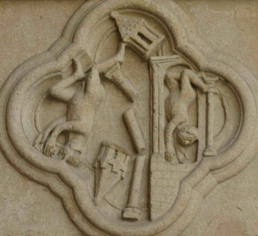
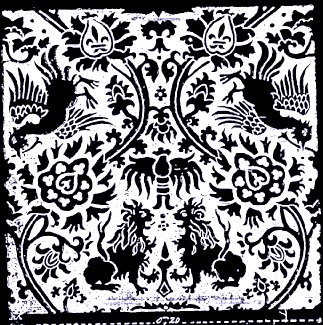
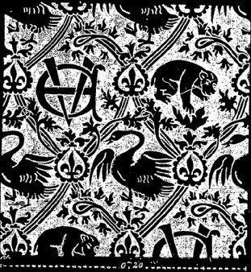
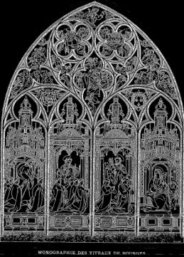
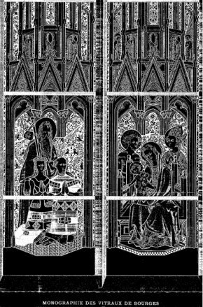
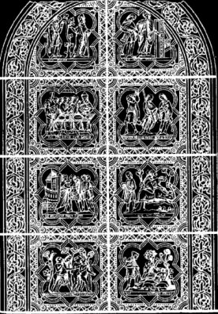
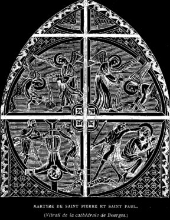
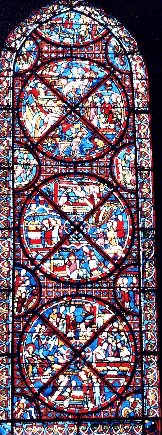
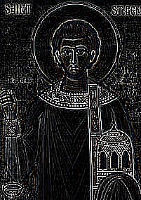
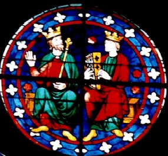
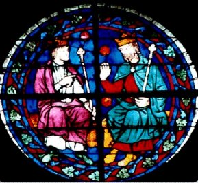
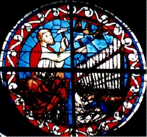
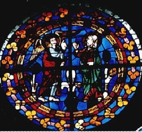
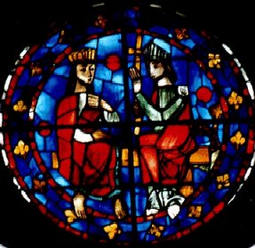
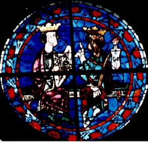
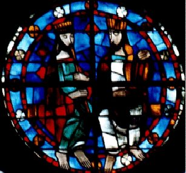
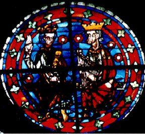
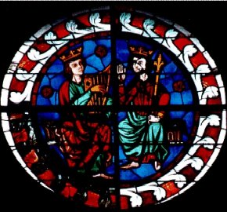
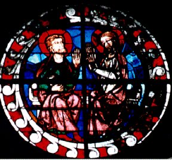
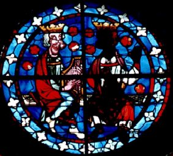
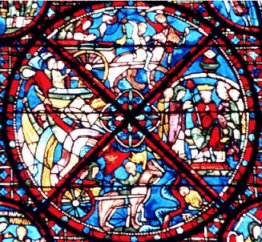
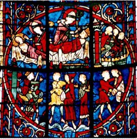
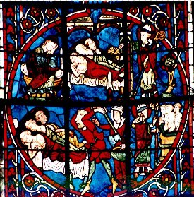
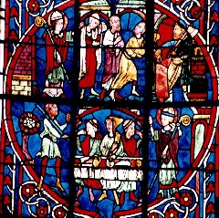
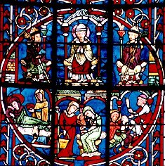
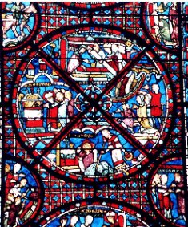
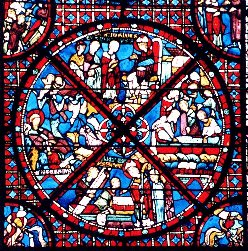
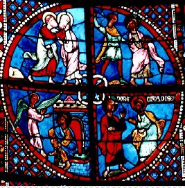
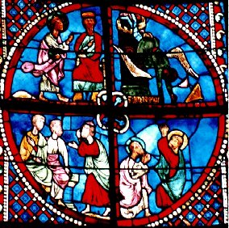
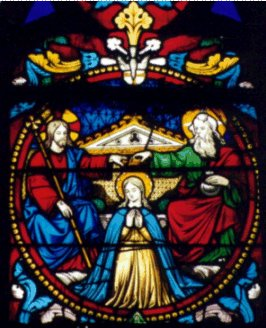
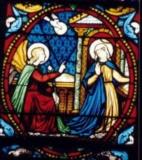
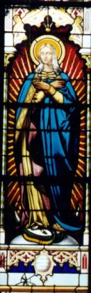
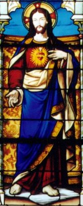
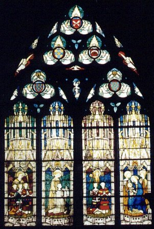
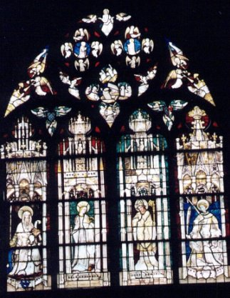
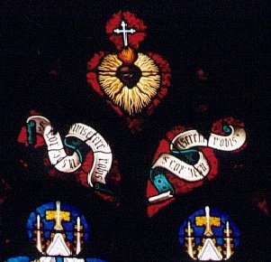
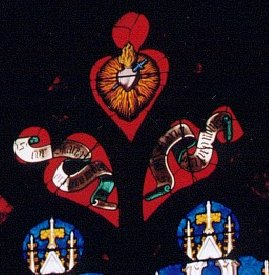
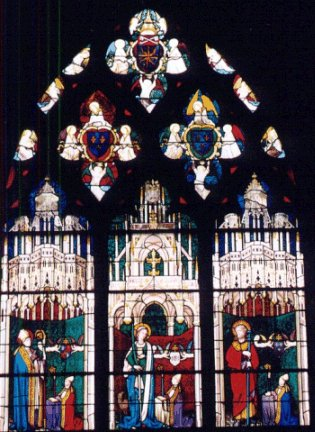
Noms cités
Fulcanelli · Paris · Hermes · Jean · Venus · Atalanta · Chevreul · Jung · Valentin · Basile · Canseliet · Flamel · Philalèthe · Geber